第十二章 多元函数的微分学
§1 偏导数与全微分
1. 偏导数
将气体状态方程 $PV = RT$ 改写成
$$ V(P, T) = \frac{RT}{P} $$（$R$ 是普适气体常量）．
在等压过程中，方程中的 $P$ 为常数，因此可以将 $V(P, T)$ 看成一元函数 $V(T)$．于是，气体体积 $V$ 关于温度 $T$ 的变化率就是 $V(T)$ 对 $T$ 的导数
$$ \frac{\mathrm{d}V(T)}{\mathrm{d}T} = \frac{R}{P} > 0. $$这说明此时体积随温度的变化而单调增加：温度上升时体积增大，温度下降时体积减小．
而在等温过程中，$T$ 为常数，因此可以将 $V(P, T)$ 看成一元函数 $V(P)$．于是，体积关于压强 $P$ 的变化率就是 $V(P)$ 对 $P$ 的导数
$$ \frac{\mathrm{d}V(P)}{\mathrm{d}P} = -\frac{RT}{P^2} < 0. $$这说明此时体积随压强的变化而单调减少：压强增大时体积收缩，压强减小时体积膨胀．这些是熟知的物理规律．
这种将一个变量视为常数，而对另一个变量求导，以求得函数关于某个因素的变化率的做法，就是对多元函数求偏导数．
现对二元函数引入偏导数的概念．
设 $D \subset \mathbb{R}^2$ 为开集，$z = f(x, y), (x, y) \in D$ 是定义在 $D$ 上的二元函数，$(x_0, y_0) \in D$ 为一定点．如果存在极限
$$ \lim_{\Delta x \to 0} \frac{f(x_0 + \Delta x, y_0) - f(x_0, y_0)}{\Delta x}, $$那么就称函数 $f$ 在点 $(x_0, y_0)$ 关于 $x$ 可偏导，并称此极限为 $f$ 在点 $(x_0, y_0)$ 关于 $x$ 的偏导数，记为
$$ \frac{\partial f}{\partial x}(x_0, y_0) \quad \left( \text{或 } f_x(x_0, y_0), \ \left.\frac{\partial z}{\partial x}\right|_{(x_0, y_0)}, \ z_x(x_0, y_0) \right). $$如果函数 $f$ 在 $D$ 中每一点都关于 $x$ 可偏导，则 $D$ 中每一点 $(x, y)$ 与其相应的 $f$ 关于 $x$ 的偏导数 $f_x(x, y)$ 构成了一种对应关系即二元函数关系，它称为 $f$ 关于 $x$ 的偏导函数（也称为偏导数），记为
$$ \frac{\partial f}{\partial x} \quad \left( \text{或 } f_x(x, y), \ \frac{\partial z}{\partial x}, \ z_x \right). $$类似地可定义 $f$ 在点 $(x_0, y_0)$ 关于 $y$ 的偏导数 $\frac{\partial f}{\partial y}(x_0, y_0)$（或 $f_y(x_0, y_0), \left.\frac{\partial z}{\partial y}\right|_{(x_0, y_0)}, z_y(x_0, y_0)$）及关于 $y$ 的偏导函数 $\frac{\partial f}{\partial y}$（或 $f_y(x, y), \frac{\partial z}{\partial y}, z_y$）．
若 $f$ 在点 $(x_0, y_0)$ 关于 $x$ 和 $y$ 均可偏导，就简称 $f$ 在点 $(x_0, y_0)$ 可偏导．
这样，上面求出的体积 $V$ 关于温度 $T$ 和压强 $P$ 的变化率就可以分别写成
$$ \frac{\partial V(P, T)}{\partial T} = \frac{R}{P} > 0, \quad \frac{\partial V(P, T)}{\partial P} = -\frac{RT}{P^2} < 0. $$现在来看偏导数的几何意义．考虑函数
$$ z = f(x, y), \quad (x, y) \in D, $$它的图像是一张曲面．平面 $y = y_0$ 与这张曲面的交线 $l$（见图 12.1.1）的方程为
$$ l: \begin{cases} x = x, \\ y = y_0, \\ z = f(x, y_0). \end{cases} $$利用曲线的切向量的方向余弦表示式，该曲线在点 $(x_0, y_0)$ 处的切向量 $\boldsymbol{T}$ 的方向余弦满足
$$ \cos(\boldsymbol{T}, x) : \cos(\boldsymbol{T}, y) : \cos(\boldsymbol{T}, z) = 1 : 0 : f_x(x_0, y_0), $$也就是说，$f_x(x_0, y_0)$ 是平面 $y = y_0$ 上的曲线 $l$ 在点 $(x_0, y_0)$ 处的切线关于 $x$ 轴的斜率．这是一元情况的直接推广．
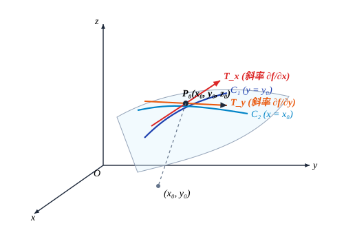
从偏导数的定义可以看出，对某个变量求偏导数，只要在求导时将其他变量看成常数就可以了，这种思想可以推广到一般的 $n$ 元函数上去：设 $\boldsymbol{x}^0 = (x_1^0, x_2^0, \cdots, x_n^0)$ 为开集 $D \subset \mathbb{R}^n$ 中一定点．定义 $n$ 元函数
$$ u = f(x_1, x_2, \cdots, x_n), \quad (x_1, x_2, \cdots, x_n) \in D $$在 $\boldsymbol{x}^0$ 点关于 $x_i \ (i = 1, 2, \cdots, n)$ 的偏导数为
$$ \frac{\partial f}{\partial x_i}(\boldsymbol{x}^0) = \frac{\partial f}{\partial x_i}(x_1^0, x_2^0, \cdots, x_n^0) = \lim_{\Delta x_i \to 0} \frac{f(x_1^0, \cdots, x_{i-1}^0, x_i^0 + \Delta x_i, x_{i+1}^0, \cdots, x_n^0) - f(x_1^0, x_2^0, \cdots, x_n^0)}{\Delta x_i} $$（如果等式右面的极限存在的话）．
如果函数 $f$ 在开集（或区域）$D$ 上每一点关于每个 $x_i$ 都可偏导（$i = 1, 2, \cdots, n$），则
称 $f$ 在 $D$ 上可偏导．
设 $f(x, y) = x^4 + 2x^2 y + y^4$，求 $f_x(x, y), f_y(x, y), f_x(0, 1)$ 和 $f_y(0, 1)$．
解 把 $y$ 看成常数，对 $x$ 求导便得
$$ f_x(x, y) = 4x^3 + 4xy. $$于是 $f_x(0, 1) = 0$．
把 $x$ 看成常数，对 $y$ 求导便得
$$ f_y(x, y) = 2x^2 + 4y^3. $$于是 $f_y(0, 1) = 4$．
求函数 $u = \ln(x + y^2 + z^3)$ 的偏导数．
解
$$ \frac{\partial u}{\partial x} = \frac{1}{x + y^2 + z^3}, \quad \frac{\partial u}{\partial y} = \frac{2y}{x + y^2 + z^3}, \quad \frac{\partial u}{\partial z} = \frac{3z^2}{x + y^2 + z^3}. $$设 $z = x^y \ (x > 0, x \neq 1)$，证明它满足方程
$$ \frac{x}{y} \frac{\partial z}{\partial x} + \frac{1}{\ln x} \frac{\partial z}{\partial y} = 2z. $$证 由于 $\frac{\partial z}{\partial x} = y x^{y-1}, \frac{\partial z}{\partial y} = x^y \ln x$，因此
$$ \frac{x}{y} \frac{\partial z}{\partial x} + \frac{1}{\ln x} \frac{\partial z}{\partial y} = \frac{x}{y} \cdot y x^{y-1} + \frac{1}{\ln x} \cdot x^y \ln x = 2x^y = 2z. $$“可导必定连续”是一元函数中的一条熟知的性质，但对多元函数来讲，类似性质并不成立，即可偏导未必连续．
设
$$ f(x, y) = \begin{cases} \frac{xy}{x^2 + y^2}, & (x, y) \neq (0, 0), \\ 0, & (x, y) = (0, 0), \end{cases} $$计算 $f_x(0, 0), f_y(0, 0)$．
解 由定义得到
$$ f_x(0, 0) = \lim_{\Delta x \to 0} \frac{f(0 + \Delta x, 0) - f(0, 0)}{\Delta x} = \lim_{\Delta x \to 0} \frac{\frac{\Delta x \cdot 0}{\Delta x^2 + 0^2} - 0}{\Delta x} = \lim_{\Delta x \to 0} \frac{0}{\Delta x} = 0. $$同理 $f_y(0, 0) = 0$．这说明 $f(x, y)$ 在 $(0, 0)$ 点可偏导．但我们已经知道，$f(x, y)$ 在 $(0, 0)$ 点不连续．
2. 方向导数
偏导数反映的是二元函数沿 $x$ 轴方向或 $y$ 轴方向的变化率．而在平面 $\mathbb{R}^2$ 上，从一点出发有无穷条射线，当然也可以讨论函数沿任一射线方向的变化率．
$\mathbb{R}^2$ 中的单位向量 $\boldsymbol{v}$ 总可以表示为 $\boldsymbol{v} = (\cos \alpha, \sin \alpha)$，这里 $\alpha$ 为 $\boldsymbol{v}$ 与 $x$ 轴正向的夹角，因此 $\boldsymbol{v}$ 代表了一个方向，$\cos \alpha, \sin \alpha \ (=\cos \beta)$ 就是 $\boldsymbol{v}$ 的方向余弦（其中 $\beta$ 为 $\boldsymbol{v}$ 与 $y$ 轴正向的夹角）．设 $P_0(x_0, y_0) \in \mathbb{R}^2$，则以 $P_0$ 为起点，方向为 $\boldsymbol{v}$ 的射线（见图 12.1.2）的参数方程为
$$ \boldsymbol{x} = \vec{OP_0} + t\boldsymbol{v} = (x_0 + t\cos \alpha, y_0 + t\sin \alpha), \quad t \geqslant 0. $$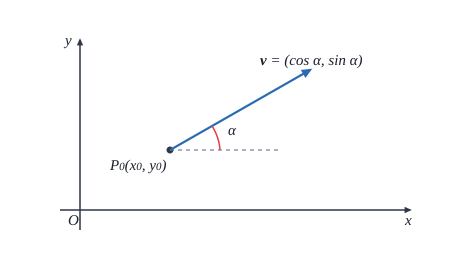
设 $D \subset \mathbb{R}^2$ 为开集，$z = f(x, y), (x, y) \in D$ 是定义在 $D$ 上的二元函数，$(x_0, y_0) \in D$ 为一定点，$\boldsymbol{v} = (\cos \alpha, \sin \alpha)$ 为一个方向．如果极限
$$ \lim_{t \to 0^+} \frac{f(x_0 + t\cos \alpha, y_0 + t\sin \alpha) - f(x_0, y_0)}{t} $$存在，则称此极限为函数 $f$ 在点 $(x_0, y_0)$ 的沿方向 $\boldsymbol{v}$ 的方向导数，记为 $\frac{\partial f}{\partial \boldsymbol{v}}(x_0, y_0)$．
由于 $x$ 轴和 $y$ 轴的正向的方向分别为 $\boldsymbol{e}_1 = (1, 0)$ 和 $\boldsymbol{e}_2 = (0, 1)$，从定义立即得到，函数 $f(x, y)$ 在点 $(x_0, y_0)$ 处关于 $x$（或 $y$）可偏导的充分必要条件为 $f(x, y)$ 沿方向 $\boldsymbol{e}_1$ 和 $-\boldsymbol{e}_1$（或方向 $\boldsymbol{e}_2$ 和 $-\boldsymbol{e}_2$）的方向导数都存在且为相反数，且这时成立
$$ \frac{\partial f}{\partial x}(x_0, y_0) = \frac{\partial f}{\partial \boldsymbol{e}_1}(x_0, y_0) \quad \left( \text{或 } \frac{\partial f}{\partial y}(x_0, y_0) = \frac{\partial f}{\partial \boldsymbol{e}_2}(x_0, y_0) \right). $$求二元函数 $f(x, y) = |x^2 - y^2|^{1/2}$ 在原点的方向导数．
解 对于任一方向 $\boldsymbol{v} = (\cos \alpha, \sin \alpha)$，有
$$ \frac{f(0 + t\cos \alpha, 0 + t\sin \alpha) - f(0, 0)}{t} = \frac{|t|}{t} |\cos^2 \alpha - \sin^2 \alpha|^{1/2}. $$当 $\cos^2 \alpha = \sin^2 \alpha$ 时，上式为零，因此 $f(x, y)$ 沿这样的方向的方向导数为零．
当 $\cos^2 \alpha \neq \sin^2 \alpha$ 时，当 $t \to 0^+$ 时上式的极限为 $|\cos^2 \alpha - \sin^2 \alpha|^{1/2}$，它就是 $f(x, y)$ 沿方向 $\boldsymbol{v}$ 的方向导数．同样可计算出 $f(x, y)$ 沿方向 $-\boldsymbol{v}$ 的方向导数仍为 $|\cos^2 \alpha - \sin^2 \alpha|^{1/2}$．
特别地，$f(x, y)$ 沿方向 $\boldsymbol{e}_i$ 和 $-\boldsymbol{e}_i \ (i = 1, 2)$ 的方向导数均为 $1$，因此 $f(x, y)$ 在点 $(0, 0)$ 的偏导数不存在．
同样，若将 $\mathbb{R}^n$ 中的单位向量 $\boldsymbol{v}$（即满足 $\|\boldsymbol{v}\| = 1$ 的向量）视为一个方向，就可类似定义 $n$ 元函数的方向导数：设 $D \subset \mathbb{R}^n$ 为开集，$\boldsymbol{x}^0 = (x_1^0, x_2^0, \cdots, x_n^0)$ 为 $D$ 中一定点，$\boldsymbol{v} = (v_1, v_2, \cdots, v_n)$ 为一方向．定义 $D$ 上的 $n$ 元函数 $u = f(x_1, x_2, \cdots, x_n)$ 在点 $\boldsymbol{x}^0$ 的沿方向 $\boldsymbol{v}$ 的方向导数为
$$ \frac{\partial f}{\partial \boldsymbol{v}}(x_1^0, x_2^0, \cdots, x_n^0) = \lim_{t \to 0^+} \frac{f(x_1^0 + tv_1, x_2^0 + tv_2, \cdots, x_n^0 + tv_n) - f(x_1^0, x_2^0, \cdots, x_n^0)}{t} $$（如果等式右面的极限存在的话）．
3. 全微分
以上讨论的是自变量沿某个给定方向变化时，函数的变化率．但在实际问题中，自
变量可以随意变化．比如，对于气体状态方程 $V(P, T) = \frac{RT}{P}$，纯粹的等压或等温过程一般是不存在的．真正需要考虑的是，若自变量 $P$ 和 $T$ 分别产生了增量 $\Delta P$ 和 $\Delta T$ 后，如何估计体积的改变量
$$ \Delta V = V(P + \Delta P, T + \Delta T) - V(P, T). $$一般地，对于函数 $z = f(x, y)$，记它的全增量为
$$ \Delta z = f(x_0 + \Delta x, y_0 + \Delta y) - f(x_0, y_0), $$我们引入如下定义：
设 $D \subset \mathbb{R}^2$ 为开集，$z = f(x, y), (x, y) \in D$ 是定义在 $D$ 上的二元函数，$(x_0, y_0) \in D$ 为一定点．若存在只与点 $(x_0, y_0)$ 有关而与 $\Delta x, \Delta y$ 无关的常数 $A$ 和 $B$，使得
$$ \Delta z = A\Delta x + B\Delta y + o(\sqrt{\Delta x^2 + \Delta y^2}), $$这里 $o(\sqrt{\Delta x^2 + \Delta y^2})$ 表示在 $\sqrt{\Delta x^2 + \Delta y^2} \to 0$ 时比 $\sqrt{\Delta x^2 + \Delta y^2}$ 高阶的无穷小量．则称函数 $f$ 在点 $(x_0, y_0)$ 处是可微的，并称其线性主要部分 $A\Delta x + B\Delta y$ 为 $f$ 在点 $(x_0, y_0)$ 处的全微分，记为 $\mathrm{d}z(x_0, y_0)$ 或 $\mathrm{d}f(x_0, y_0)$．
若（在 $\sqrt{\Delta x^2 + \Delta y^2} \to 0$ 时）将自变量 $x, y$ 的微分 $\Delta x, \Delta y$ 分别记为 $\mathrm{d}x, \mathrm{d}y$，那么有全微分形式
$$ \mathrm{d}z(x_0, y_0) = A\mathrm{d}x + B\mathrm{d}y. $$下面作几点说明．
首先，可以明显看出，如果函数 $f$ 在点 $(x_0, y_0)$ 处可微，则 $f$ 在点 $(x_0, y_0)$ 处是连续的，即可微必连续．
其次，若 $\Delta y = 0$，便得到
$$ \Delta z = f(x_0 + \Delta x, y_0) - f(x_0, y_0) = A\Delta x + o(|\Delta x|), $$于是
$$ \lim_{\Delta x \to 0} \frac{f(x_0 + \Delta x, y_0) - f(x_0, y_0)}{\Delta x} = A, $$所以 $f_x(x_0, y_0) = A$．同理可证 $\frac{\partial f}{\partial y}(x_0, y_0) = B$．因此可微必可偏导，同时，得到全微分公式
$$ \mathrm{d}z = \frac{\partial f}{\partial x}(x_0, y_0)\mathrm{d}x + \frac{\partial f}{\partial y}(x_0, y_0)\mathrm{d}y. $$求函数 $z = \mathrm{e}^{xy}$ 在点 $(2, 1)$ 处的全微分．
解 由于
$$ \frac{\partial z}{\partial x} = y\mathrm{e}^{xy}, \quad \frac{\partial z}{\partial y} = x\mathrm{e}^{xy}, $$ $$ \frac{\partial z}{\partial x}(2, 1) = \mathrm{e}^2, \quad \frac{\partial z}{\partial y}(2, 1) = 2\mathrm{e}^2, $$所以函数在点 $(2, 1)$ 处的全微分为
$$ \mathrm{d}z = \mathrm{e}^2 \mathrm{d}x + 2\mathrm{e}^2 \mathrm{d}y. $$还可以进一步得到：
设 $D \subset \mathbb{R}^2$ 为开集，$(x_0, y_0) \in D$ 为一定点．如果函数 $z = f(x, y), (x, y) \in D$ 在 $(x_0, y_0)$ 可微，那么对于任一方向 $\boldsymbol{v} = (\cos \alpha, \sin \alpha)$，$f$ 在 $(x_0, y_0)$ 点沿方向 $\boldsymbol{v}$ 的方向导数存在，且
$$ \frac{\partial f}{\partial \boldsymbol{v}}(x_0, y_0) = \frac{\partial f}{\partial x}(x_0, y_0) \cos \alpha + \frac{\partial f}{\partial y}(x_0, y_0) \sin \alpha. $$证 由定义和全微分公式，得
$$ \begin{aligned} \frac{\partial f}{\partial \boldsymbol{v}}(x_0, y_0) &= \lim_{t \to 0^+} \frac{f(x_0 + t\cos \alpha, y_0 + t\sin \alpha) - f(x_0, y_0)}{t} \\ &= \lim_{t \to 0^+} \frac{\frac{\partial f}{\partial x}(x_0, y_0) t\cos \alpha + \frac{\partial f}{\partial y}(x_0, y_0) t\sin \alpha + o(t)}{t} \\ &= \frac{\partial f}{\partial x}(x_0, y_0) \cos \alpha + \frac{\partial f}{\partial y}(x_0, y_0) \sin \alpha. \end{aligned} $$如果函数 $f$ 在开集（或区域）$D$ 上的每一点都是可微的，则称 $f$ 在 $D$ 上可微．此时
$$ \mathrm{d}z = \frac{\partial f}{\partial x}(x, y)\mathrm{d}x + \frac{\partial f}{\partial y}(x, y)\mathrm{d}y. $$第三，用同样的思想可以定义一般 $n$ 元函数 $u = f(x_1, x_2, \cdots, x_n)$ 的全微分，并可得到
$$ \mathrm{d}u = \frac{\partial f}{\partial x_1}\mathrm{d}x_1 + \frac{\partial f}{\partial x_2}\mathrm{d}x_2 + \cdots + \frac{\partial f}{\partial x_n}\mathrm{d}x_n. $$如果 $u = f(x_1, x_2, \cdots, x_n)$ 在 $\boldsymbol{x} = (x_1, x_2, \cdots, x_n)$ 点可微，那么
$$ \frac{\partial f}{\partial \boldsymbol{v}} = \frac{\partial f}{\partial x_1}\cos \theta_1 + \frac{\partial f}{\partial x_2}\cos \theta_2 + \cdots + \frac{\partial f}{\partial x_n}\cos \theta_n, $$其中 $\boldsymbol{v} = (\cos \theta_1, \cos \theta_2, \cdots, \cos \theta_n)$ 为一方向，而 $\theta_i$ 就是 $\boldsymbol{v}$ 与 $x_i$ 轴正向的夹角．
求函数 $u = x - \cos \frac{y}{2} + \arctan \frac{z}{y}$ 的全微分．
解 由于
$$ \frac{\partial u}{\partial x} = 1, \quad \frac{\partial u}{\partial y} = \frac{1}{2}\sin \frac{y}{2} - \frac{z}{y^2 + z^2}, \quad \frac{\partial u}{\partial z} = \frac{y}{y^2 + z^2}, $$所以
$$ \mathrm{d}u = \mathrm{d}x + \left(\frac{1}{2}\sin \frac{y}{2} - \frac{z}{y^2 + z^2}\right)\mathrm{d}y + \frac{y}{y^2 + z^2}\mathrm{d}z. $$第四，一元函数的可导与可微是等价的．在高维情形可微必可偏导，但可偏导并不一定可微．例如，函数
$$ f(x, y) = \begin{cases} \frac{xy}{x^2 + y^2}, & (x, y) \neq (0, 0), \\ 0, & (x, y) = (0, 0) \end{cases} $$在 $(0, 0)$ 点不连续，因此不可微，但它在 $(0, 0)$ 点是可偏导的（见例 12.1.4）．
事实上，一个函数即使在某一点处连续，且所有方向导数都存在，也不一定在该点可微．
设
$$ f(x, y) = \begin{cases} \frac{2xy^2}{x^2 + y^4}, & x^2 + y^4 \neq 0, \\ 0, & x^2 + y^4 = 0. \end{cases} $$由于
$$ |f(x, y)| = \frac{2|x|y^2}{x^2 + y^4} \leqslant \frac{x^2 + y^4}{x^2 + y^4} = 1, $$所以 $f(x, y)$ 在 $(0, 0)$ 点连续；而 $f(x, y)$ 在 $(0, 0)$ 点沿方向 $\boldsymbol{v} = (\cos \alpha, \sin \alpha)$ 的方向导数为
$$ \lim_{t \to 0^+} \frac{f(0 + t\cos \alpha, 0 + t\sin \alpha) - f(0, 0)}{t} = \lim_{t \to 0^+} \frac{2t^3 \cos \alpha \sin^2 \alpha}{t(t^2 \cos^2 \alpha + t^4 \sin^4 \alpha)} = \lim_{t \to 0^+} \frac{2\cos \alpha \sin^2 \alpha}{\cos^2 \alpha + t^2 \sin^4 \alpha} \cdot 1 = 0 \quad (\cos \alpha \neq 0). $$当 $\cos \alpha = 0$ 时显然极限为 $0$．
因此 $f_x(0, 0) = f_y(0, 0) = 0$．但因为
$$ f(0 + \Delta x, 0 + \Delta y) - f(0, 0) - [f_x(0, 0)\Delta x + f_y(0, 0)\Delta y] = f(\Delta x, \Delta y), $$而沿路径 $\Delta x = \Delta y^2$ 有
$$ \lim_{\substack{\Delta y \to 0^+ \\ \Delta x = \Delta y^2}} \frac{f(\Delta x, \Delta y)}{\sqrt{\Delta x^2 + \Delta y^2}} = \lim_{\substack{\Delta y \to 0^+ \\ \Delta x = \Delta y^2}} \frac{\frac{2\Delta x \Delta y^2}{\Delta x^2 + \Delta y^4}}{\sqrt{\Delta x^2 + \Delta y^2}} = \lim_{\Delta y \to 0^+} \frac{\frac{2\Delta y^4}{\Delta y^4 + \Delta y^4}}{\Delta y\sqrt{1 + \Delta y^2}} = \lim_{\Delta y \to 0^+} \frac{1}{\Delta y\sqrt{1 + \Delta y^2}} \neq 0, $$即
$$ f(0 + \Delta x, 0 + \Delta y) - f(0, 0) - [f_x(0, 0)\Delta x + f_y(0, 0)\Delta y] \neq o(\sqrt{\Delta x^2 + \Delta y^2}), $$所以 $f(x, y)$ 在 $(0, 0)$ 点不可微．
但关于函数的可微性有如下的充分条件：
设函数 $z = f(x, y)$ 在 $(x_0, y_0)$ 点的某个邻域上存在偏导数，并且偏导数在 $(x_0, y_0)$ 点连续，那么 $f$ 在 $(x_0, y_0)$ 点可微．
证 首先我们有
$$ \begin{aligned} & f(x_0 + \Delta x, y_0 + \Delta y) - f(x_0, y_0) \\ ={}& [f(x_0 + \Delta x, y_0 + \Delta y) - f(x_0, y_0 + \Delta y)] + [f(x_0, y_0 + \Delta y) - f(x_0, y_0)] \\ ={}& f_x(x_0 + \theta_1 \Delta x, y_0 + \Delta y)\Delta x + f_y(x_0, y_0 + \theta_2 \Delta y)\Delta y, \quad 0 < \theta_1, \theta_2 < 1, \end{aligned} $$其中最后一步利用了微分中值定理．
因为 $f_x$ 和 $f_y$ 在 $(x_0, y_0)$ 点连续，所以
$$ \begin{aligned} f_x(x_0 + \theta_1 \Delta x, y_0 + \Delta y) &= f_x(x_0, y_0) + o(1), \\ f_y(x_0, y_0 + \theta_2 \Delta y) &= f_y(x_0, y_0) + o(1), \end{aligned} $$其中 $o(1)$ 表示当 $\sqrt{\Delta x^2 + \Delta y^2} \to 0$ 时的无穷小量．于是
$$ \begin{aligned} \Delta z &= f(x_0 + \Delta x, y_0 + \Delta y) - f(x_0, y_0) \\ &= f_x(x_0, y_0)\Delta x + f_y(x_0, y_0)\Delta y + o(1)\Delta x + o(1)\Delta y \\ &= f_x(x_0, y_0)\Delta x + f_y(x_0, y_0)\Delta y + o(\sqrt{\Delta x^2 + \Delta y^2}), \end{aligned} $$即 $f$ 在 $(x_0, y_0)$ 点可微．
4. 梯度
设 $D \subset \mathbb{R}^2$ 为开集，$(x_0, y_0) \in D$ 为一定点．如果函数 $z = f(x, y)$ 在 $(x_0, y_0)$ 可偏导，我们称平面向量 $\left( \frac{\partial f}{\partial x}(x_0, y_0), \frac{\partial f}{\partial y}(x_0, y_0) \right)$ 为 $f$ 在点 $(x_0, y_0)$ 的梯度，记为 $\mathrm{grad} f(x_0, y_0)$，即
$$ \mathrm{grad} f(x_0, y_0) = \left( \frac{\partial f}{\partial x}(x_0, y_0), \frac{\partial f}{\partial y}(x_0, y_0) \right). $$如果 $f$ 在 $(x_0, y_0)$ 点可微，注意到方向导数公式中的 $\|\boldsymbol{v}\| = 1$，则得到它的另一种表达：
$$ \frac{\partial f}{\partial \boldsymbol{v}}(x_0, y_0) = \mathrm{grad} f(x_0, y_0) \cdot \boldsymbol{v} = \|\mathrm{grad} f(x_0, y_0)\| \cos(\mathrm{grad} f, \boldsymbol{v}). $$由此可见，函数 $f$ 在其任何一可微点的方向导数的绝对值不会超过它在该点的梯度的模 $\|\mathrm{grad} f\|$，且最大值 $\|\mathrm{grad} f\|$ 在梯度方向达到．这就是说，沿着梯度方向函数值增加最快．同样，$f$ 的方向导数的最小值 $-\|\mathrm{grad} f\|$ 在梯度的反方向达到，或者说，沿着梯度相反方向函数值减少最快．
读者很容易证明梯度的下列基本性质：
- 若 $f = c$（$c$ 为常数），则 $\mathrm{grad} f = \boldsymbol{0}$；
- 若 $\alpha, \beta$ 为常数，则 $\mathrm{grad}(\alpha f + \beta g) = \alpha \mathrm{grad} f + \beta \mathrm{grad} g$；
- $\mathrm{grad}(f \cdot g) = f \cdot \mathrm{grad} g + g \cdot \mathrm{grad} f$；
- $\mathrm{grad}\left(\frac{f}{g}\right) = \frac{g \cdot \mathrm{grad} f - f \cdot \mathrm{grad} g}{g^2} \quad (g \neq 0)$．
用同样的思想可以定义一般 $n$ 元函数的梯度：设 $D \subset \mathbb{R}^n$ 为开集，$\boldsymbol{x}^0 = (x_1^0, x_2^0, \cdots, x_n^0) \in D$ 为一定点．如果函数 $u = f(x_1, x_2, \cdots, x_n)$ 在 $\boldsymbol{x}^0$ 点可偏导，我们称向量
$$ \left( f_{x_1}(\boldsymbol{x}^0), f_{x_2}(\boldsymbol{x}^0), \cdots, f_{x_n}(\boldsymbol{x}^0) \right) $$为 $f$ 在点 $\boldsymbol{x}^0$ 的梯度，记为 $\mathrm{grad} f(x_1^0, x_2^0, \cdots, x_n^0)$（或 $\mathrm{grad} f(\boldsymbol{x}^0)$）．
上述关于梯度的基本性质与公式对一般 $n$ 元函数也成立．
设 $f(x, y) = \frac{x^2}{a^2} + \frac{y^2}{b^2}, a > b > 0$．在上半平面 $\{(x, y) \in \mathbb{R}^2 \mid y \geqslant 0\}$ 上，指出函数值增加最快的方向．
解 由于在梯度不为零向量处，梯度方向就是函数值增加最快的方向，所以在 $(x, y) \neq (0, 0)$ 的点，函数 $f$ 的梯度
$$ \mathrm{grad} f(x, y) = \frac{2x}{a^2}\boldsymbol{i} + \frac{2y}{b^2}\boldsymbol{j} $$就是函数值增加最快的方向．
而在原点 $(0, 0)$，函数 $f$ 的梯度为零向量，这就要用其他方法考虑．
由于
因此，在以原点为中心的任意小圆周上，当 $x = 0$ 时 $f(x, y) - f(0, 0)$ 最大，即函数值增加最大．这就是说，在原点处，沿 $y$ 轴方向函数值增加最快（见图 12.1.3）．
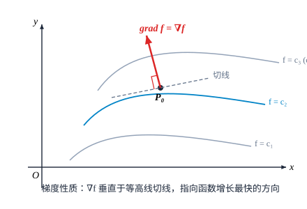
关于梯度的性质，以后在场论中还要详加讨论．
5. 高阶偏导数
设 $z = f(x, y)$ 在区域 $D \subset \mathbb{R}^2$ 上具有偏导函数
$$ \frac{\partial z}{\partial x} = f_x(x, y) \quad \text{和} \quad \frac{\partial z}{\partial y} = f_y(x, y). $$那么在 $D$ 上，$f_x(x, y)$ 和 $f_y(x, y)$ 都是 $x, y$ 的二元函数．如果这两个偏导函数的偏导数也存在，则称它们是 $f(x, y)$ 的二阶偏导数．
按照对自变量的求导次序的不同，二阶偏导数有下列四种：
$$ \frac{\partial}{\partial x}\left(\frac{\partial z}{\partial x}\right) = \frac{\partial^2 z}{\partial x^2} = \frac{\partial}{\partial x}(f_x(x, y)) = f_{xx}(x, y), $$ $$ \frac{\partial}{\partial y}\left(\frac{\partial z}{\partial x}\right) = \frac{\partial^2 z}{\partial y \partial x} = \frac{\partial}{\partial y}(f_x(x, y)) = f_{xy}(x, y), $$ $$ \frac{\partial}{\partial x}\left(\frac{\partial z}{\partial y}\right) = \frac{\partial^2 z}{\partial x \partial y} = \frac{\partial}{\partial x}(f_y(x, y)) = f_{yx}(x, y), $$ $$ \frac{\partial}{\partial y}\left(\frac{\partial z}{\partial y}\right) = \frac{\partial^2 z}{\partial y^2} = \frac{\partial}{\partial y}(f_y(x, y)) = f_{yy}(x, y). $$其中第二、第三两个二阶偏导数称为混合偏导数．
可类似得到三阶、四阶以至更高阶偏导数．二阶及二阶以上的偏导数统称为高阶偏导数．
设 $z = \arctan \frac{x + y}{1 - xy}$，求 $\frac{\partial^2 z}{\partial x^2}, \frac{\partial^2 z}{\partial x \partial y}, \frac{\partial^2 z}{\partial y \partial x}, \frac{\partial^2 z}{\partial y^2}$．
解
$$ \frac{\partial z}{\partial x} = \frac{1}{1 + \left(\frac{x + y}{1 - xy}\right)^2} \cdot \frac{(1 - xy) - (x + y)(-y)}{(1 - xy)^2} = \frac{1 + y^2}{(1 - xy)^2 + (x + y)^2} = \frac{1 + y^2}{(1 + x^2)(1 + y^2)} = \frac{1}{1 + x^2}. $$因此
$$ \frac{\partial^2 z}{\partial x^2} = -\frac{2x}{(1 + x^2)^2}. $$同理 $\frac{\partial z}{\partial y} = \frac{1}{1 + y^2}$，因此
$$ \frac{\partial^2 z}{\partial x \partial y} = \frac{\partial}{\partial x}\left(\frac{1}{1 + y^2}\right) = 0, \quad \frac{\partial^2 z}{\partial y \partial x} = \frac{\partial}{\partial y}\left(\frac{1}{1 + x^2}\right) = 0, $$ $$ \frac{\partial^2 z}{\partial y^2} = -\frac{2y}{(1 + y^2)^2}. $$注意本例中两个混合偏导数是相等的．
设
$$ f(x, y) = \begin{cases} xy \frac{x^2 - y^2}{x^2 + y^2}, & x^2 + y^2 \neq 0, \\ 0, & x^2 + y^2 = 0, \end{cases} $$计算 $\frac{\partial^2 z}{\partial x \partial y}(0, 0)$ 和 $\frac{\partial^2 z}{\partial y \partial x}(0, 0)$．
解 当 $x^2 + y^2 \neq 0$ 时，它的一阶偏导数为
$$ f_x(x, y) = y \frac{x^2 - y^2}{x^2 + y^2} + xy \frac{2x(x^2 + y^2) - (x^2 - y^2) \cdot 2x}{(x^2 + y^2)^2} = y \frac{x^2 - y^2}{x^2 + y^2} + \frac{4x^2 y^3}{(x^2 + y^2)^2}. $$当 $x^2 + y^2 = 0$ 时，$f_x(0, 0) = \lim_{\Delta x \to 0} \frac{f(\Delta x, 0) - f(0, 0)}{\Delta x} = 0$．
同理，当 $x^2 + y^2 \neq 0$ 时，
$$ f_y(x, y) = x \frac{x^2 - y^2}{x^2 + y^2} - \frac{4x^3 y^2}{(x^2 + y^2)^2}, $$而在原点 $f_y(0, 0) = 0$．
于是
$$ \frac{\partial^2 z}{\partial y \partial x}(0, 0) = f_{xy}(0, 0) = \lim_{\Delta y \to 0} \frac{f_x(0, 0 + \Delta y) - f_x(0, 0)}{\Delta y} = \lim_{\Delta y \to 0} \frac{-\Delta y - 0}{\Delta y} = -1, $$ $$ \frac{\partial^2 z}{\partial x \partial y}(0, 0) = f_{yx}(0, 0) = \lim_{\Delta x \to 0} \frac{f_y(0 + \Delta x, 0) - f_y(0, 0)}{\Delta x} = \lim_{\Delta x \to 0} \frac{\Delta x - 0}{\Delta x} = 1. $$注意本例中 $f(x, y)$ 在 $(0, 0)$ 点的两个混合偏导数不相等．
关于混合偏导数相等的条件有如下定理：
如果函数 $z = f(x, y)$ 的两个混合偏导数 $f_{xy}$ 和 $f_{yx}$ 在点 $(x_0, y_0)$ 连续，那么等式
$$ f_{xy}(x_0, y_0) = f_{yx}(x_0, y_0) $$成立．
证 考虑差商
$$ I = \frac{1}{\Delta x \Delta y} [f(x_0 + \Delta x, y_0 + \Delta y) - f(x_0 + \Delta x, y_0) - f(x_0, y_0 + \Delta y) + f(x_0, y_0)]. $$设 $\varphi(x) = f(x, y_0 + \Delta y) - f(x, y_0)$，那么利用微分中值定理可得
$$ \begin{aligned} I &= \frac{\varphi(x_0 + \Delta x) - \varphi(x_0)}{\Delta x \Delta y} = \frac{\varphi'(x_0 + \theta_1 \Delta x)\Delta x}{\Delta x \Delta y} \\ &= \frac{f_x(x_0 + \theta_1 \Delta x, y_0 + \Delta y) - f_x(x_0 + \theta_1 \Delta x, y_0)}{\Delta y} \\ &= f_{xy}(x_0 + \theta_1 \Delta x, y_0 + \theta_2 \Delta y) \quad (0 < \theta_1, \theta_2 < 1). \end{aligned} $$另一方面，设 $\psi(y) = f(x_0 + \Delta x, y) - f(x_0, y)$，将 $I$ 重新组合还可以得到
$$ \begin{aligned} I &= \frac{\psi(y_0 + \Delta y) - \psi(y_0)}{\Delta x \Delta y} = \frac{\psi'(y_0 + \theta_3 \Delta y)\Delta y}{\Delta x \Delta y} \\ &= \frac{f_y(x_0 + \Delta x, y_0 + \theta_3 \Delta y) - f_y(x_0, y_0 + \theta_3 \Delta y)}{\Delta x} \\ &= f_{yx}(x_0 + \theta_4 \Delta x, y_0 + \theta_3 \Delta y) \quad (0 < \theta_3, \theta_4 < 1). \end{aligned} $$因此
$$ f_{xy}(x_0 + \theta_1 \Delta x, y_0 + \theta_2 \Delta y) = f_{yx}(x_0 + \theta_4 \Delta x, y_0 + \theta_3 \Delta y). $$利用两个混合偏导数 $f_{xy}$ 和 $f_{yx}$ 在点 $(x_0, y_0)$ 连续的条件，令 $\Delta x \to 0, \Delta y \to 0$，得到
$$ \lim_{(\Delta x, \Delta y) \to (0, 0)} f_{xy}(x_0 + \theta_1 \Delta x, y_0 + \theta_2 \Delta y) = f_{xy}(x_0, y_0), $$ $$ \lim_{(\Delta x, \Delta y) \to (0, 0)} f_{yx}(x_0 + \theta_4 \Delta x, y_0 + \theta_3 \Delta y) = f_{yx}(x_0, y_0). $$故 $f_{xy}(x_0, y_0) = f_{yx}(x_0, y_0)$．
在科学和工程技术的实际应用中，往往认为所出现的偏导数是连续的，所以不介意求偏导的次序．例如 $\frac{\partial^4 z}{\partial x^2 \partial y^2}$ 就概括了六种不同次序的四阶混合偏导数：$f_{xxyy}, f_{xyxy}, f_{xyyx}, f_{yxxy}, f_{yxyx}, f_{yyxx}$．读者在阅读有关书籍时，请注意这一点．
设 $z = (x^2 + y^2)\mathrm{e}^{x+y}$，计算 $\frac{\partial^{p+q} z}{\partial x^p \partial y^q}$（$p, q$ 为正整数）．
解 由于
$$ \frac{\partial^k}{\partial x^k}\mathrm{e}^{x+y} = \mathrm{e}^{x+y}, \quad \frac{\partial^k}{\partial y^k}\mathrm{e}^{x+y} = \mathrm{e}^{x+y}, \quad k = 1, 2, \cdots, $$因此，关于 $y$ 用 Leibniz 公式，得
$$ \frac{\partial^q z}{\partial y^q} = [x^2 + y^2 + 2qy + q(q - 1)]\mathrm{e}^{x+y}. $$关于 $x$ 再用一次 Leibniz 公式，就得到
$$ \frac{\partial^{p+q} z}{\partial x^p \partial y^q} = [x^2 + y^2 + 2qy + q(q - 1)]\mathrm{e}^{x+y} + C_p^1 (2x)\mathrm{e}^{x+y} + C_p^2 \cdot 2 \cdot \mathrm{e}^{x+y} $$ $$ = [x^2 + y^2 + 2(px + qy) + p(p - 1) + q(q - 1)]\mathrm{e}^{x+y}. $$6. 高阶微分
设 $z = f(x, y)$ 在区域 $D \subset \mathbb{R}^2$ 上具有连续偏导数，那么它是可微的，并且
$$ \mathrm{d}z = \frac{\partial z}{\partial x}\mathrm{d}x + \frac{\partial z}{\partial y}\mathrm{d}y. $$若 $z$ 还具有二阶连续偏导数，那么 $\frac{\partial z}{\partial x}$ 与 $\frac{\partial z}{\partial y}$ 也是可微的，从而 $\mathrm{d}z$ 可微．我们称 $\mathrm{d}z$ 的微分 $z$ 的二阶微分，记为
$$ \mathrm{d}^2 z = \mathrm{d}(\mathrm{d}z). $$一般地，可在 $z$ 的 $k$ 阶微分 $\mathrm{d}^k z$ 的基础上定义它的 $k+1$ 阶微分为（如果存在的话）
$$ \mathrm{d}^{k+1} z = \mathrm{d}(\mathrm{d}^k z), \quad k = 1, 2, \cdots. $$二阶及二阶以上的微分统称为高阶微分．
由于对自变量 $x, y$ 总有 $\mathrm{d}(\mathrm{d}x) = 0, \mathrm{d}(\mathrm{d}y) = 0$，于是 $z = f(x, y)$ 的二阶微分为
$$ \begin{aligned} \mathrm{d}^2 z = \mathrm{d}(\mathrm{d}z) &= \mathrm{d}\left(\frac{\partial z}{\partial x}\right)\mathrm{d}x + \mathrm{d}\left(\frac{\partial z}{\partial y}\right)\mathrm{d}y \\ &= \left(\frac{\partial^2 z}{\partial x^2}\mathrm{d}x + \frac{\partial^2 z}{\partial y \partial x}\mathrm{d}y\right)\mathrm{d}x + \left(\frac{\partial^2 z}{\partial x \partial y}\mathrm{d}x + \frac{\partial^2 z}{\partial y^2}\mathrm{d}y\right)\mathrm{d}y \\ &= \frac{\partial^2 z}{\partial x^2}\mathrm{d}x^2 + 2\frac{\partial^2 z}{\partial x \partial y}\mathrm{d}x\mathrm{d}y + \frac{\partial^2 z}{\partial y^2}\mathrm{d}y^2. \end{aligned} $$这里 $\mathrm{d}x^2$ 和 $\mathrm{d}y^2$ 分别表示 $(\mathrm{d}x)^2$ 和 $(\mathrm{d}y)^2$．
若将 $\frac{\partial}{\partial x}$ 和 $\frac{\partial}{\partial y}$ 看作求偏导数的运算符号，并约定
$$ \left(\frac{\partial}{\partial x}\mathrm{d}x + \frac{\partial}{\partial y}\mathrm{d}y\right)z = \frac{\partial z}{\partial x}\mathrm{d}x + \frac{\partial z}{\partial y}\mathrm{d}y, $$那么一阶和二阶的微分公式可以分别表示为
$$ \mathrm{d}z = \left(\frac{\partial}{\partial x}\mathrm{d}x + \frac{\partial}{\partial y}\mathrm{d}y\right)z, \quad \mathrm{d}^2 z = \left(\frac{\partial}{\partial x}\mathrm{d}x + \frac{\partial}{\partial y}\mathrm{d}y\right)^2 z. $$同样地约定
$$ \left(\frac{\partial}{\partial x}\mathrm{d}x\right)^p \left(\frac{\partial}{\partial y}\mathrm{d}y\right)^q z = \frac{\partial^{p+q} z}{\partial x^p \partial y^q}\mathrm{d}x^p \mathrm{d}y^q \quad (p, q = 1, 2, \cdots), $$读者不难用数学归纳法证明高阶微分公式
$$ \mathrm{d}^k z = \left(\frac{\partial}{\partial x}\mathrm{d}x + \frac{\partial}{\partial y}\mathrm{d}y\right)^k z = \sum_{j=0}^k C_k^j \frac{\partial^k z}{\partial x^{k-j} \partial y^j}\mathrm{d}x^{k-j}\mathrm{d}y^j. $$对 $n$ 元函数 $u = f(x_1, x_2, \cdots, x_n)$ 可同样定义各阶微分，并且成立
$$ \mathrm{d}^k u = \left(\frac{\partial}{\partial x_1}\mathrm{d}x_1 + \frac{\partial}{\partial x_2}\mathrm{d}x_2 + \cdots + \frac{\partial}{\partial x_n}\mathrm{d}x_n\right)^k u, \quad k = 1, 2, \cdots. $$设 $u = xyz$，计算 $\mathrm{d}^3 u$．
解 易算得
$$ \frac{\partial^3 u}{\partial x^3} = \frac{\partial^3 u}{\partial y^3} = \frac{\partial^3 u}{\partial z^3} = 0, $$ $$ \frac{\partial^3 u}{\partial x^2 \partial y} = \frac{\partial^3 u}{\partial x^2 \partial z} = \frac{\partial^3 u}{\partial x \partial y^2} = \frac{\partial^3 u}{\partial y^2 \partial z} = \frac{\partial^3 u}{\partial x \partial z^2} = \frac{\partial^3 u}{\partial y \partial z^2} = 0, $$以及
$$ \frac{\partial^3 u}{\partial x \partial y \partial z} = 1. $$利用上面所述的多元函数的高阶微分公式，可得
$$ \mathrm{d}^3 u = \left(\frac{\partial}{\partial x}\mathrm{d}x + \frac{\partial}{\partial y}\mathrm{d}y + \frac{\partial}{\partial z}\mathrm{d}z\right)^3 u = 6\mathrm{d}x\mathrm{d}y\mathrm{d}z. $$7. 向量值函数的导数与微分
为了方便，在本节中总是将向量记号 $\boldsymbol{x}, \boldsymbol{f}$ 和 $\boldsymbol{y}$ 等视为列向量．
将 $\mathbb{R}^n$ 上区域 $D$ 上的 $n$ 元 $m$ 维向量值函数
$$ \boldsymbol{f}: D \to \mathbb{R}^m, \quad \boldsymbol{x} \mapsto \boldsymbol{y} = \boldsymbol{f}(\boldsymbol{x}) $$写成坐标分量形式
$$ \begin{pmatrix} y_1 \\ y_2 \\ \vdots \\ y_m \end{pmatrix} = \begin{pmatrix} f_1(x_1, x_2, \cdots, x_n) \\ f_2(x_1, x_2, \cdots, x_n) \\ \vdots \\ f_m(x_1, x_2, \cdots, x_n) \end{pmatrix}, \quad (x_1, x_2, \cdots, x_n)^\mathrm{T} \in D, $$并设点 $\boldsymbol{x}^0 = (x_1^0, x_2^0, \cdots, x_n^0)^\mathrm{T} \in D$（记号“$\mathrm{T}$”表示转置）．
将上面关于多元函数的讨论用于 $\boldsymbol{f}$ 的每一个分量函数，即可平行地得到：
1. 若 $\boldsymbol{f}$ 的每一个分量函数 $f_i(x_1, x_2, \cdots, x_n) \ (i = 1, 2, \cdots, m)$ 在点 $\boldsymbol{x}^0$ 的所有偏导数都存在，则称向量值函数 $\boldsymbol{f}$ 在 $\boldsymbol{x}^0$ 点可导，并称矩阵
$$ \boldsymbol{f}'(\boldsymbol{x}^0) = \left( \frac{\partial f_i}{\partial x_j}(\boldsymbol{x}^0) \right)_{m \times n} = \begin{pmatrix} \frac{\partial f_1}{\partial x_1}(\boldsymbol{x}^0) & \frac{\partial f_1}{\partial x_2}(\boldsymbol{x}^0) & \cdots & \frac{\partial f_1}{\partial x_n}(\boldsymbol{x}^0) \\ \frac{\partial f_2}{\partial x_1}(\boldsymbol{x}^0) & \frac{\partial f_2}{\partial x_2}(\boldsymbol{x}^0) & \cdots & \frac{\partial f_2}{\partial x_n}(\boldsymbol{x}^0) \\ \vdots & \vdots & \ddots & \vdots \\ \frac{\partial f_m}{\partial x_1}(\boldsymbol{x}^0) & \frac{\partial f_m}{\partial x_2}(\boldsymbol{x}^0) & \cdots & \frac{\partial f_m}{\partial x_n}(\boldsymbol{x}^0) \end{pmatrix} $$为 $\boldsymbol{f}$ 在点 $\boldsymbol{x}^0$ 的导数（或偏导数矩阵、Jacobi 矩阵）．多元函数 $u = f(x_1, x_2, \cdots, x_n)$ 是 $m = 1$ 时的特殊情形，所以它在 $\boldsymbol{x}^0$ 点的导数
就是
$$ \boldsymbol{f}'(\boldsymbol{x}^0) = \left( \frac{\partial f}{\partial x_1}(\boldsymbol{x}^0), \frac{\partial f}{\partial x_2}(\boldsymbol{x}^0), \cdots, \frac{\partial f}{\partial x_n}(\boldsymbol{x}^0) \right) = (\mathrm{grad} f(\boldsymbol{x}^0))^\mathrm{T}. $$如果向量值函数 $\boldsymbol{f}$ 在 $D$ 上每一点可导，就称 $\boldsymbol{f}$ 在 $D$ 上可导．
向量值函数
$$ \boldsymbol{f}: [\alpha, \beta] \to \mathbb{R}^3, \quad t \mapsto \begin{pmatrix} x(t) \\ y(t) \\ z(t) \end{pmatrix} $$用坐标分量表示就是
$$ \begin{cases} x = x(t), \\ y = y(t), \\ z = z(t), \end{cases} \quad t \in [\alpha, \beta]. $$在空间解析几何中知道，这是一条空间曲线．它的导数 $\boldsymbol{f}'(t) = (x'(t), y'(t), z'(t))^\mathrm{T}$ 就是空间曲线在点 $(x(t), y(t), z(t))^\mathrm{T}$ 点的切向量．如果这条曲线是质点关于时间 $t$ 的运动轨迹，那么 $\boldsymbol{f}$ 的导数就是质点的速度向量．
求向量值函数
$$ \boldsymbol{f}(x, y, z) = \begin{pmatrix} x^3 + z\mathrm{e}^y \\ y^3 + z\ln x \end{pmatrix} $$在 $(1, 1, 1)$ 点的导数．
解 这时坐标分量函数为 $f_1(x, y, z) = x^3 + z\mathrm{e}^y, f_2(x, y, z) = y^3 + z\ln x$．因此
$$ \boldsymbol{f}'(1, 1, 1) = \left. \begin{pmatrix} \frac{\partial f_1}{\partial x} & \frac{\partial f_1}{\partial y} & \frac{\partial f_1}{\partial z} \\ \frac{\partial f_2}{\partial x} & \frac{\partial f_2}{\partial y} & \frac{\partial f_2}{\partial z} \end{pmatrix} \right|_{(1, 1, 1)} = \left. \begin{pmatrix} 3x^2 & z\mathrm{e}^y & \mathrm{e}^y \\ \frac{z}{x} & 3y^2 & \ln x \end{pmatrix} \right|_{(1, 1, 1)} = \begin{pmatrix} 3 & \mathrm{e} & \mathrm{e} \\ 1 & 3 & 0 \end{pmatrix}. $$2. 若 $\boldsymbol{f}$ 的每一个分量函数 $f_i(x_1, x_2, \cdots, x_n) \ (i = 1, 2, \cdots, m)$ 的偏导数都在 $\boldsymbol{x}^0$ 点连续，即 $\boldsymbol{f}$ 的 Jacobi 矩阵的每个元素都在 $\boldsymbol{x}^0$ 点连续，则称向量值函数 $\boldsymbol{f}$ 的导数在 $\boldsymbol{x}^0$ 点连续．如果向量值函数 $\boldsymbol{f}$ 的导数在 $D$ 上每一点连续，则称 $\boldsymbol{f}$ 的导数在 $D$ 上连续．
3. 若存在只与 $\boldsymbol{x}^0$ 有关，而与 $\Delta \boldsymbol{x}$ 无关的 $m \times n$ 矩阵 $\boldsymbol{A}$，使得在 $\boldsymbol{x}^0$ 点附近成立
$$ \Delta \boldsymbol{y} = \boldsymbol{f}(\boldsymbol{x}^0 + \Delta \boldsymbol{x}) - \boldsymbol{f}(\boldsymbol{x}^0) = \boldsymbol{A}\Delta \boldsymbol{x} + \boldsymbol{o}(\Delta \boldsymbol{x}) $$（其中 $\Delta \boldsymbol{x} = (\Delta x_1, \Delta x_2, \cdots, \Delta x_n)^\mathrm{T}$；$\boldsymbol{o}(\Delta \boldsymbol{x})$ 是列向量，其模是 $\|\Delta \boldsymbol{x}\|$ 的高阶无穷小量），则称向量值函数 $\boldsymbol{f}$ 在 $\boldsymbol{x}^0$ 点可微，并称 $\boldsymbol{A}\Delta \boldsymbol{x}$ 为 $\boldsymbol{f}$ 在 $\boldsymbol{x}^0$ 点的微分，记为 $\mathrm{d}\boldsymbol{y}$．若将 $\Delta \boldsymbol{x}$ 记为 $\mathrm{d}\boldsymbol{x}$（$\mathrm{d}\boldsymbol{x} = (\mathrm{d}x_1, \mathrm{d}x_2, \cdots, \mathrm{d}x_n)^\mathrm{T}$），那么就有 $\mathrm{d}\boldsymbol{y} = \boldsymbol{A}\mathrm{d}\boldsymbol{x}$．
如果向量值函数 $\boldsymbol{f}$ 在 $D$ 上每一点可微，则称 $\boldsymbol{f}$ 在 $D$ 上可微．
向量值函数 $\boldsymbol{f}$ 在 $\boldsymbol{x}^0$ 点可微的充分必要条件是它的坐标分量函数 $f_i(x_1, x_2, \cdots, x_n) \ (i = 1, 2, \cdots, m)$ 在 $\boldsymbol{x}^0$ 点可微．当 $\boldsymbol{f}$ 在 $\boldsymbol{x}^0$ 点可微时，导数矩阵 $\boldsymbol{f}'(\boldsymbol{x}^0)$ 存在，且 $\boldsymbol{A} = \boldsymbol{f}'(\boldsymbol{x}^0)$，从而
$$ \mathrm{d}\boldsymbol{y} = \boldsymbol{f}'(\boldsymbol{x}^0)\mathrm{d}\boldsymbol{x}. $$证 必要性：设 $\boldsymbol{f}$ 在 $\boldsymbol{x}^0$ 点可微，记 $\boldsymbol{A} = (a_{ij})_{m \times n}$ 和 $\boldsymbol{o}(\Delta \boldsymbol{x}) = (o_1(\Delta \boldsymbol{x}), o_2(\Delta \boldsymbol{x}), \cdots, o_m(\Delta \boldsymbol{x}))^\mathrm{T}$，则可将 $\Delta \boldsymbol{y}$ 写成分量形式
$$ \Delta y_i = \sum_{j=1}^n a_{ij}\Delta x_j + o_i(\Delta \boldsymbol{x}), \quad i = 1, 2, \cdots, m, $$并满足
$$ \lim_{\|\Delta \boldsymbol{x}\| \to 0} \frac{o_i(\Delta \boldsymbol{x})}{\|\Delta \boldsymbol{x}\|} = 0, \quad i = 1, 2, \cdots, m. $$由函数可微的定义，即知 $f_i(x_1, x_2, \cdots, x_n) \ (i = 1, 2, \cdots, m)$ 在 $\boldsymbol{x}^0$ 处可微，并且 $a_{ij} = \frac{\partial f_i}{\partial x_j}(\boldsymbol{x}^0)$，也就是 $\boldsymbol{A} = \boldsymbol{f}'(\boldsymbol{x}^0)$．
充分性：若每一个坐标分量函数 $f_i(x_1, x_2, \cdots, x_n) \ (i = 1, 2, \cdots, m)$ 在 $\boldsymbol{x}^0$ 处可微，那么
$$ \Delta y_i = \Delta f_i = \frac{\partial f_i}{\partial x_1}(\boldsymbol{x}^0)\Delta x_1 + \frac{\partial f_i}{\partial x_2}(\boldsymbol{x}^0)\Delta x_2 + \cdots + \frac{\partial f_i}{\partial x_n}(\boldsymbol{x}^0)\Delta x_n + o(\|\Delta \boldsymbol{x}\|). $$将上式写成矩阵乘积形式，并令 $\boldsymbol{A} = \left(\frac{\partial f_i}{\partial x_j}(\boldsymbol{x}^0)\right)_{m \times n}$，就知道 $\boldsymbol{f}$ 在 $\boldsymbol{x}^0$ 点可微．
综合上述三点，我们可以得到以下的统一表述：
向量值函数 $\boldsymbol{f}$ 连续、可导和可微就是它的每一个坐标分量函数 $f_i(x_1, x_2, \cdots, x_n) \ (i = 1, 2, \cdots, m)$ 连续、可导和可微．
此外，在用 Jacobi 矩阵定义了向量值函数的导数 $\boldsymbol{f}'(\boldsymbol{x})$ 之后，多元函数和向量值函数的微分公式与一元函数的微分公式
$$ \mathrm{d}y = f'(x)\mathrm{d}x $$在形式上就是完全一致的．也就是说，只要将 $\boldsymbol{x}, \boldsymbol{y}$ 和 $\boldsymbol{f}$ 理解为向量，这就是多元函数和向量值函数的微分公式．
- 求下列函数的偏导数：
(1) $z = x^5 - 6x^4 y^2 + y^6$；(2) $z = x^2 \ln(x^2 + y^2)$；(3) $z = xy + \frac{x}{y}$；(4) $z = \sin(xy) + \cos^2(xy)$；(5) $z = \mathrm{e}^x (\cos y + x\sin y)$；(6) $z = \tan\left(\frac{x^2}{y}\right)$；(7) $z = \sin\frac{x}{y} \cdot \cos\frac{y}{x}$；(8) $z = (1 + xy)^y$；(9) $z = \ln(x + \ln y)$；(10) $z = \arctan\frac{x + y}{1 - xy}$；(11) $u = \mathrm{e}^{x(x^2 + y^2 + z^2)}$；(12) $u = x^{\frac{y}{z}}$；(13) $u = \frac{1}{\sqrt{x^2 + y^2 + z^2}}$；(14) $u = x^{y^z}$；(15) $u = \sum_{i=1}^n a_i x_i \ (a_i \text{ 为常数})$；(16) $u = \sum_{i,j=1}^n a_{ij} x_i y_j \ (a_{ij} = a_{ji} \text{ 且为常数})$．
- 设 $f(x, y) = x + y - \sqrt{x^2 + y^2}$，求 $f_x(3, 4)$ 及 $f_y(3, 4)$．
- 设 $z = \mathrm{e}^{\frac{x}{y^2}}$，验证 $2x\frac{\partial z}{\partial x} + y\frac{\partial z}{\partial y} = 0$．
- 曲线 $\begin{cases} z = \frac{x^2 + y^2}{4}, \\ y = 4 \end{cases}$ 在点 $(2, 4, 5)$ 处的切线与 $x$ 轴的正向所夹的角度是多少？
- 求下列函数在指定点的全微分：
(1) $f(x, y) = 3x^2 y - xy^2$，在点 $(1, 2)$；(2) $f(x, y) = \ln(1 + x^2 + y^2)$，在点 $(2, 4)$；(3) $f(x, y) = \frac{\sin x}{y^2}$，在点 $(0, 1)$ 和 $\left(\frac{\pi}{4}, 2\right)$．
- 求下列函数的全微分：
(1) $z = y^x$；(2) $z = xy\mathrm{e}^{xy}$；(3) $z = \frac{x + y}{x - y}$；(4) $z = \frac{y}{\sqrt{x^2 + y^2}}$；(5) $u = \sqrt{x^2 + y^2 + z^2}$；(6) $u = \ln(x^2 + y^2 + z^2)$．
- 求函数 $z = x\mathrm{e}^{2y}$ 在点 $P(1, 0)$ 处的沿从点 $P(1, 0)$ 到点 $Q(2, -1)$ 方向的方向导数．
- 设 $z = x^2 - xy + y^2$，求它在点 $(1, 1)$ 处的沿方向 $\boldsymbol{v} = (\cos \alpha, \sin \alpha)$ 的方向导数，并指出：
(1) 沿哪个方向的方向导数最大？(2) 沿哪个方向的方向导数最小？(3) 沿哪个方向的方向导数为零？
- 如果可微函数 $f(x, y)$ 在点 $(1, 2)$ 处的从点 $(1, 2)$ 到点 $(2, 2)$ 方向的方向导数为 $2$，从点 $(1, 2)$ 到点 $(1, 1)$ 方向的方向导数为 $-2$．求：
(1) 这个函数在点 $(1, 2)$ 处的梯度；(2) 点 $(1, 2)$ 处的从点 $(1, 2)$ 到点 $(4, 6)$ 方向的方向导数．
- 求下列函数的梯度：
(1) $z = x^2 + y^2 \sin(xy)$；(2) $z = 1 - \left(\frac{x^2}{a^2} + \frac{y^2}{b^2}\right)$；(3) $u = x^2 + 2y^2 + 3z^2 + 3xy + 4yz + 6x - 2y - 5z$，在点 $(1, 1, 1)$．
- 对于函数 $f(x, y) = xy$，在第 I 象限（包括边界）的每一点，指出函数值增加最快的方向．
- 验证函数 $$ f(x, y) = \sqrt[3]{xy} $$ 在原点 $(0, 0)$ 连续且可偏导，但除方向 $\boldsymbol{e}_i$ 和 $-\boldsymbol{e}_i \ (i = 1, 2)$ 外，在原点的沿其他方向的方向导数都不存在．
- 验证函数 $$ f(x, y) = \begin{cases} \frac{xy}{\sqrt{x^2 + y^2}}, & x^2 + y^2 \neq 0, \\ 0, & x^2 + y^2 = 0 \end{cases} $$ 在原点 $(0, 0)$ 连续且可偏导，但它在该点不可微．
- 验证函数 $$ f(x, y) = \begin{cases} (x^2 + y^2)\sin \frac{1}{x^2 + y^2}, & x^2 + y^2 \neq 0, \\ 0, & x^2 + y^2 = 0 \end{cases} $$ 的偏导函数 $f_x(x, y), f_y(x, y)$ 在原点 $(0, 0)$ 不连续，但它在该点可微．
- 证明函数 $$ f(x, y) = \begin{cases} \frac{2xy^2}{x^2 + y^4}, & x^2 + y^4 \neq 0, \\ 0, & x^2 + y^4 = 0 \end{cases} $$ 在原点 $(0, 0)$ 处沿各个方向的方向导数都存在，但它在该点不连续，因而不可微．
- 计算下列函数的高阶导数：
(1) $z = \arctan \frac{y}{x}$，求 $\frac{\partial^2 z}{\partial x^2}, \frac{\partial^2 z}{\partial x \partial y}, \frac{\partial^2 z}{\partial y^2}$；(2) $z = x\sin(x+y) + y\cos(x+y)$，求 $\frac{\partial^2 z}{\partial x^2}, \frac{\partial^2 z}{\partial x \partial y}, \frac{\partial^2 z}{\partial y^2}$；(3) $z = x\mathrm{e}^{xy}$，求 $\frac{\partial^3 z}{\partial x^2 \partial y}, \frac{\partial^3 z}{\partial x \partial y^2}$；(4) $u = \ln(ax + by + cz)$，求 $\frac{\partial^4 u}{\partial x^4}, \frac{\partial^4 u}{\partial x^2 \partial y^2}$；(5) $z = (x - a)^p (y - b)^q$，求 $\frac{\partial^{p+q} z}{\partial x^p \partial y^q}$；(6) $u = xyz\mathrm{e}^{x+y+z}$，求 $\frac{\partial^{p+q+r} u}{\partial x^p \partial y^q \partial z^r}$．
- 计算下列函数的高阶微分：
(1) $z = x\ln(xy)$，求 $\mathrm{d}^2 z$；(2) $z = \sin^2(ax + by)$，求 $\mathrm{d}^3 z$；(3) $u = \mathrm{e}^{x+y+z}(x^2 + y^2 + z^2)$，求 $\mathrm{d}^3 u$；(4) $z = \mathrm{e}^x \sin y$，求 $\mathrm{d}^k z$．
- 函数 $z = f(x, y)$ 满足 $$ \frac{\partial z}{\partial x} = -\sin y + \frac{1}{1 - xy}, \quad \text{及} \quad f(0, y) = 2\sin y + y^3. $$ 求 $f(x, y)$ 的表达式．
- 验证：
(1) $z = \mathrm{e}^{-k n^2 x}\sin(ny)$ 满足热传导方程 $\frac{\partial z}{\partial x} = k\frac{\partial^2 z}{\partial y^2}$；(2) $u = z\arctan\frac{x}{y}$ 满足 Laplace 方程 $\frac{\partial^2 u}{\partial x^2} + \frac{\partial^2 u}{\partial y^2} + \frac{\partial^2 u}{\partial z^2} = 0$．
- 设 $f(r, t) = t^\alpha \mathrm{e}^{-\frac{r^2}{4t}}$，确定 $\alpha$ 使得 $f$ 满足方程 $$ \frac{\partial f}{\partial t} = \frac{1}{r^2}\frac{\partial}{\partial r}\left(r^2 \frac{\partial f}{\partial r}\right). $$
- 求下列向量值函数在指定点的导数：
(1) $\boldsymbol{f}(x) = (a\cos x, b\sin x, cx)^\mathrm{T}$，在 $x = \frac{\pi}{4}$ 点；(2) $\boldsymbol{f}(x, y, z) = (3x + \mathrm{e}^y \cot z, x^3 + y^3 \tan z)^\mathrm{T}$，在 $\left(1, 2, \frac{\pi}{4}\right)$ 点；(3) $\boldsymbol{g}(u, v) = (u\cos v, u\sin v, v)^\mathrm{T}$，在 $(1, \pi)$ 点．
- 设 $\boldsymbol{f}: \mathbb{R}^3 \to \mathbb{R}^3$ 为向量值函数．
(1) 如果坐标分量函数 $f_1(x, y, z) = x, f_2(x, y, z) = y, f_3(x, y, z) = z$，证明 $\boldsymbol{f}$ 的导数是单位阵；(2) 写出坐标分量函数的一般形式，使 $\boldsymbol{f}$ 的导数是单位阵；(3) 如果已知 $\boldsymbol{f}$ 的导数是对角阵 $\mathrm{diag}(p(x), q(y), r(z))$，那么坐标分量函数应该具有什么样的形式？
§2 多元复合函数的求导法则
1. 链式法则
设 $z = f(x, y), (x, y) \in D_f$ 是区域 $D_f \subset \mathbb{R}^2$ 上的二元函数，而
$$ \boldsymbol{g}: D_g \to \mathbb{R}^2, \quad (u, v) \mapsto (x(u, v), y(u, v)) $$是区域 $D_g \subset \mathbb{R}^2$ 上的二元二维向量值函数．如果 $\boldsymbol{g}$ 的值域 $\boldsymbol{g}(D_g) \subset D_f$，那么可以构造复合函数
$$ z = f \circ \boldsymbol{g} = f[x(u, v), y(u, v)], \quad (u, v) \in D_g. $$复合函数有如下求偏导数的法则．
设 $\boldsymbol{g}$ 在 $(u_0, v_0) \in D_g$ 点可导，即 $x = x(u, v), y = y(u, v)$ 在 $(u_0, v_0)$ 点可偏导．记 $x_0 = x(u_0, v_0), y_0 = y(u_0, v_0)$，如果 $f$ 在 $(x_0, y_0)$ 点可微，那么
$$ \frac{\partial z}{\partial u}(u_0, v_0) = \frac{\partial z}{\partial x}(x_0, y_0)\frac{\partial x}{\partial u}(u_0, v_0) + \frac{\partial z}{\partial y}(x_0, y_0)\frac{\partial y}{\partial u}(u_0, v_0); $$ $$ \frac{\partial z}{\partial v}(u_0, v_0) = \frac{\partial z}{\partial x}(x_0, y_0)\frac{\partial x}{\partial v}(u_0, v_0) + \frac{\partial z}{\partial y}(x_0, y_0)\frac{\partial y}{\partial v}(u_0, v_0). $$证 只证明第一式．由于 $f$ 在 $(x_0, y_0)$ 点可微，因此
$$ \Delta z = f_x(x_0, y_0)\Delta x + f_y(x_0, y_0)\Delta y + \alpha(\Delta x, \Delta y)\sqrt{\Delta x^2 + \Delta y^2}, $$其中 $\alpha(\Delta x, \Delta y)$ 满足当 $\sqrt{\Delta x^2 + \Delta y^2} \to 0$ 时 $\alpha(\Delta x, \Delta y) \to 0$．定义 $\alpha(0, 0) = 0$，那么上式当 $(\Delta x, \Delta y) = (0, 0)$ 时也成立．
设 $v = v_0$ 固定，对应于自变量 $u$ 的改变量 $\Delta u$，中间变量 $x, y$ 产生增量 $\Delta x = x(u_0 + \Delta u, v_0) - x(u_0, v_0)$ 和 $\Delta y = y(u_0 + \Delta u, v_0) - y(u_0, v_0)$，由 $x, y$ 的可偏导性有
$$ \lim_{\Delta u \to 0} \frac{\Delta x}{\Delta u} = \frac{\partial x}{\partial u}(u_0, v_0), \quad \lim_{\Delta u \to 0} \frac{\Delta y}{\Delta u} = \frac{\partial y}{\partial u}(u_0, v_0), $$并且有 $\lim_{\Delta u \to 0} \sqrt{\Delta x^2 + \Delta y^2} = 0$．于是当 $\Delta u \to 0$ 时，
$$ \frac{\alpha(\Delta x, \Delta y)\sqrt{\Delta x^2 + \Delta y^2}}{\Delta u} = \alpha(\Delta x, \Delta y) \cdot \frac{\sqrt{\Delta x^2 + \Delta y^2}}{\Delta u} = \alpha(\Delta x, \Delta y) \cdot \operatorname{sgn}(\Delta u) \sqrt{\left(\frac{\Delta x}{\Delta u}\right)^2 + \left(\frac{\Delta y}{\Delta u}\right)^2} $$也趋于 $0$，所以
$$ \begin{aligned} \frac{\partial z}{\partial u}(u_0, v_0) &= \lim_{\Delta u \to 0} \frac{\Delta z}{\Delta u} \\ &= \lim_{\Delta u \to 0} \left[ f_x(x_0, y_0)\frac{\Delta x}{\Delta u} + f_y(x_0, y_0)\frac{\Delta y}{\Delta u} + \frac{\alpha(\Delta x, \Delta y)\sqrt{\Delta x^2 + \Delta y^2}}{\Delta u} \right] \\ &= \frac{\partial z}{\partial x}(x_0, y_0)\frac{\partial x}{\partial u}(u_0, v_0) + \frac{\partial z}{\partial y}(x_0, y_0)\frac{\partial y}{\partial u}(u_0, v_0). \end{aligned} $$注意，定理条件“$f$ 可微”不能减弱为“$f$ 可偏导”．
从上节已经知道，
$$ z = f(x, y) = \begin{cases} \frac{2xy^2}{x^2 + y^4}, & x^2 + y^2 \neq 0, \\ 0, & x^2 + y^2 = 0 \end{cases} $$在 $(0, 0)$ 点可偏导，且 $f_x(0, 0) = f_y(0, 0) = 0$，但它在 $(0, 0)$ 点不可微．
现在设 $x, y$ 分别是自变量 $t$ 的函数 $x = t^2, y = t$．直接代入就知这个复合函数实质上是 $z = 1 \ (t \neq 0)$，因此它在 $t = 0$ 点的导数为
$$ \left.\frac{\mathrm{d}z}{\mathrm{d}t}\right|_{t=0} = 0 \quad \text{不存在（由于 $z(0)=0$，在 $t=0$ 不连续）}． $$但若贸然套用链式法则，就会导出
$$ \left.\frac{\mathrm{d}z}{\mathrm{d}t}\right|_{t=0} = f_x(0, 0)\cdot 0 + f_y(0, 0)\cdot 1 = 0 $$的错误结果．
下面不加证明地把链式法则推至一般情况：
设 $z = f(y_1, y_2, \cdots, y_m)$ 为区域 $D_f \subset \mathbb{R}^m$ 上的 $m$ 元函数．又设
$$ \boldsymbol{g}: D_g \to \mathbb{R}^m, \quad \boldsymbol{x} = (x_1, x_2, \cdots, x_n)^\mathrm{T} \mapsto \boldsymbol{y} = (y_1(\boldsymbol{x}), y_2(\boldsymbol{x}), \cdots, y_m(\boldsymbol{x}))^\mathrm{T} $$为区域 $D_g \subset \mathbb{R}^n$ 上的 $n$ 元 $m$ 维向量值函数．如果 $\boldsymbol{g}$ 的值域 $\boldsymbol{g}(D_g) \subset D_f$，那么可以构造复合函数 $z = f \circ \boldsymbol{g}$．
设 $\boldsymbol{g}$ 在 $\boldsymbol{x}^0 \in D_g$ 点可导，即 $y_1, y_2, \cdots, y_m$ 在 $\boldsymbol{x}^0$ 点可偏导，且 $f$ 在 $\boldsymbol{y}^0 = \boldsymbol{g}(\boldsymbol{x}^0)$ 点可微，则
$$ \frac{\partial z}{\partial x_i}(\boldsymbol{x}^0) = \frac{\partial z}{\partial y_1}(\boldsymbol{y}^0)\frac{\partial y_1}{\partial x_i}(\boldsymbol{x}^0) + \frac{\partial z}{\partial y_2}(\boldsymbol{y}^0)\frac{\partial y_2}{\partial x_i}(\boldsymbol{x}^0) + \cdots + \frac{\partial z}{\partial y_m}(\boldsymbol{y}^0)\frac{\partial y_m}{\partial x_i}(\boldsymbol{x}^0), \quad i = 1, 2, \cdots, n. $$上式可以用矩阵表示：
$$ \begin{pmatrix} \frac{\partial z}{\partial x_1} & \frac{\partial z}{\partial x_2} & \cdots & \frac{\partial z}{\partial x_n} \end{pmatrix} = \begin{pmatrix} \frac{\partial z}{\partial y_1} & \frac{\partial z}{\partial y_2} & \cdots & \frac{\partial z}{\partial y_m} \end{pmatrix} \begin{pmatrix} \frac{\partial y_1}{\partial x_1} & \frac{\partial y_1}{\partial x_2} & \cdots & \frac{\partial y_1}{\partial x_n} \\ \frac{\partial y_2}{\partial x_1} & \frac{\partial y_2}{\partial x_2} & \cdots & \frac{\partial y_2}{\partial x_n} \\ \vdots & \vdots & \ddots & \vdots \\ \frac{\partial y_m}{\partial x_1} & \frac{\partial y_m}{\partial x_2} & \cdots & \frac{\partial y_m}{\partial x_n} \end{pmatrix}, $$或用向量值函数的导数记号表为
$$ (f \circ \boldsymbol{g})'(\boldsymbol{x}^0) = f'(\boldsymbol{y}^0) \boldsymbol{g}'(\boldsymbol{x}^0). $$设 $z = \arctan(xy), y = \mathrm{e}^x$，求 $\left.\frac{\mathrm{d}z}{\mathrm{d}x}\right|_{x=0}$．
解 由链式法则
$$ \frac{\mathrm{d}z}{\mathrm{d}x} = \frac{\partial z}{\partial x} + \frac{\partial z}{\partial y}\frac{\mathrm{d}y}{\mathrm{d}x} = \frac{y}{1 + x^2 y^2} + \frac{x}{1 + x^2 y^2}\mathrm{e}^x = \frac{\mathrm{e}^x + x\mathrm{e}^{2x}}{1 + x^2 \mathrm{e}^{2x}}, $$于是
$$ \left.\frac{\mathrm{d}z}{\mathrm{d}x}\right|_{x=0} = 1. $$设 $z = \frac{x}{y}$，而 $x = u - 2v, y = 2u + v$，计算 $\frac{\partial z}{\partial u}, \frac{\partial z}{\partial v}$．
解
$$ \frac{\partial z}{\partial u} = \frac{\partial z}{\partial x}\frac{\partial x}{\partial u} + \frac{\partial z}{\partial y}\frac{\partial y}{\partial u} = \frac{1}{y} \cdot 1 + \left(-\frac{x}{y^2}\right) \cdot 2 = \frac{y - 2x}{y^2} = \frac{(2u + v) - 2(u - 2v)}{(2u + v)^2} = \frac{5v}{(2u + v)^2}; $$ $$ \frac{\partial z}{\partial v} = \frac{\partial z}{\partial x}\frac{\partial x}{\partial v} + \frac{\partial z}{\partial y}\frac{\partial y}{\partial v} = \frac{1}{y} \cdot (-2) + \left(-\frac{x}{y^2}\right) \cdot 1 = \frac{-2y - x}{y^2} = \frac{-2(2u + v) - (u - 2v)}{(2u + v)^2} = -\frac{5u}{(2u + v)^2}. $$设 $z = (2x + y)^{x + 2y}$，计算 $\frac{\partial z}{\partial x}, \frac{\partial z}{\partial y}$．
解 设 $u = 2x + y, v = x + 2y$，则 $z = u^v$．
$$ \begin{aligned} \frac{\partial z}{\partial x} &= \frac{\partial z}{\partial u}\frac{\partial u}{\partial x} + \frac{\partial z}{\partial v}\frac{\partial v}{\partial x} = vu^{v-1} \cdot 2 + u^v \ln u \cdot 1 \\ &= 2(x + 2y)(2x + y)^{x + 2y - 1} + (2x + y)^{x + 2y}\ln(2x + y) \\ &= (2x + y)^{x + 2y} \left( \frac{2(x + 2y)}{2x + y} + \ln(2x + y) \right); \end{aligned} $$ $$ \begin{aligned} \frac{\partial z}{\partial y} &= \frac{\partial z}{\partial u}\frac{\partial u}{\partial y} + \frac{\partial z}{\partial v}\frac{\partial v}{\partial y} = vu^{v-1} \cdot 1 + u^v \ln u \cdot 2 \\ &= (x + 2y)(2x + y)^{x + 2y - 1} + 2(2x + y)^{x + 2y}\ln(2x + y) \\ &= (2x + y)^{x + 2y} \left( \frac{x + 2y}{2x + y} + 2\ln(2x + y) \right). \end{aligned} $$设 $w = f(u, v)$ 具有二阶连续偏导数，而 $u = x^2 + y^2 + z^2, v = xyz$，计算 $\frac{\partial w}{\partial x}$ 与 $\frac{\partial^2 w}{\partial z \partial x}$．
解 显然 $\frac{\partial u}{\partial x} = 2x, \frac{\partial v}{\partial x} = yz$．因此由链式法则得
$$ \frac{\partial w}{\partial x} = \frac{\partial w}{\partial u}\frac{\partial u}{\partial x} + \frac{\partial w}{\partial v}\frac{\partial v}{\partial x} = 2x\frac{\partial w}{\partial u} + yz\frac{\partial w}{\partial v}. $$注意到 $\frac{\partial w}{\partial u}$ 和 $\frac{\partial w}{\partial v}$ 仍是复合函数，于是由 $\frac{\partial u}{\partial z} = 2z, \frac{\partial v}{\partial z} = xy$，
再运用链式法则就得到
$$ \begin{aligned} \frac{\partial^2 w}{\partial z \partial x} &= \frac{\partial}{\partial z}\left(2x\frac{\partial w}{\partial u} + yz\frac{\partial w}{\partial v}\right) = 2x\frac{\partial}{\partial z}\left(\frac{\partial w}{\partial u}\right) + y\frac{\partial w}{\partial v} + yz\frac{\partial}{\partial z}\left(\frac{\partial w}{\partial v}\right) \\ &= 2x\left(\frac{\partial^2 w}{\partial u^2}\frac{\partial u}{\partial z} + \frac{\partial^2 w}{\partial v \partial u}\frac{\partial v}{\partial z}\right) + y\frac{\partial w}{\partial v} + yz\left(\frac{\partial^2 w}{\partial u \partial v}\frac{\partial u}{\partial z} + \frac{\partial^2 w}{\partial v^2}\frac{\partial v}{\partial z}\right) \\ &= 2x\left(2z\frac{\partial^2 w}{\partial u^2} + xy\frac{\partial^2 w}{\partial v \partial u}\right) + y\frac{\partial w}{\partial v} + yz\left(2z\frac{\partial^2 w}{\partial u \partial v} + xy\frac{\partial^2 w}{\partial v^2}\right) \\ &= 4xz\frac{\partial^2 w}{\partial u^2} + 2(x^2 y + yz^2)\frac{\partial^2 w}{\partial u \partial v} + xy^2 z\frac{\partial^2 w}{\partial v^2} + y\frac{\partial w}{\partial v}. \end{aligned} $$若用函数符号加下标 $i$ 表示对其第 $i$ 个变量的偏导数，即 $f_1 = \frac{\partial f(u, v)}{\partial u}, f_2 = \frac{\partial f(u, v)}{\partial v}, f_{11} = \frac{\partial^2 f(u, v)}{\partial u^2}, f_{12} = \frac{\partial^2 f(u, v)}{\partial u \partial v}$ 等等，则上面的结果可表示为
$$ \frac{\partial w}{\partial x} = 2x f_1 + yz f_2, $$ $$ \frac{\partial^2 w}{\partial z \partial x} = 4xz f_{11} + 2(x^2 y + yz^2)f_{12} + xy^2 z f_{22} + y f_2. $$已知 $u = u(x, y)$ 为可微函数，试求 $\left(\frac{\partial u}{\partial x}\right)^2 + \left(\frac{\partial u}{\partial y}\right)^2$ 在极坐标下的表达式．
解 直角坐标与极坐标有如下关系：
$$ x = r\cos \theta, \quad y = r\sin \theta. $$将 $x, y$ 看成中间变量，就得到
$$ \frac{\partial u}{\partial r} = \frac{\partial u}{\partial x}\frac{\partial x}{\partial r} + \frac{\partial u}{\partial y}\frac{\partial y}{\partial r} = \frac{\partial u}{\partial x}\cos \theta + \frac{\partial u}{\partial y}\sin \theta, $$ $$ \frac{\partial u}{\partial \theta} = \frac{\partial u}{\partial x}\frac{\partial x}{\partial \theta} + \frac{\partial u}{\partial y}\frac{\partial y}{\partial \theta} = -r\sin \theta \frac{\partial u}{\partial x} + r\cos \theta \frac{\partial u}{\partial y}. $$将第一式平方加上第二式除以 $r^2$ 后的平方，即得到
$$ \left(\frac{\partial u}{\partial x}\right)^2 + \left(\frac{\partial u}{\partial y}\right)^2 = \left(\frac{\partial u}{\partial r}\right)^2 + \frac{1}{r^2}\left(\frac{\partial u}{\partial \theta}\right)^2. $$现在设 $\boldsymbol{f}: D_f \to \mathbb{R}^2, (u, v) \mapsto (x(u, v), y(u, v))$ 是区域 $D_f \subset \mathbb{R}^2$ 上的二元二维向量值函数．又设 $\boldsymbol{g}: D_g \to \mathbb{R}^2, (s, t) \mapsto (u(s, t), v(s, t))$ 是区域 $D_g \subset \mathbb{R}^2$ 上的二元二维向量值函数．如果 $\boldsymbol{g}$ 的值域 $\boldsymbol{g}(D_g) \subset D_f$，则可以构造复合向量值函数 $\boldsymbol{f} \circ \boldsymbol{g}$．具体写出来就是
$$ \begin{cases} x = x[u(s, t), v(s, t)], \\ y = y[u(s, t), v(s, t)], \end{cases} \quad (s, t) \in D_g. $$如果 $\boldsymbol{f}$ 和 $\boldsymbol{g}$ 分别在 $D_f$ 与 $D_g$ 上具有连续导数，那么由定理 12.2.1 知道
$$ \begin{aligned} \frac{\partial x}{\partial s}(s, t) &= \frac{\partial x}{\partial u}\frac{\partial u}{\partial s}(s, t) + \frac{\partial x}{\partial v}\frac{\partial v}{\partial s}(s, t), \quad \frac{\partial x}{\partial t}(s, t) = \frac{\partial x}{\partial u}\frac{\partial u}{\partial t}(s, t) + \frac{\partial x}{\partial v}\frac{\partial v}{\partial t}(s, t), \\ \frac{\partial y}{\partial s}(s, t) &= \frac{\partial y}{\partial u}\frac{\partial u}{\partial s}(s, t) + \frac{\partial y}{\partial v}\frac{\partial v}{\partial s}(s, t), \quad \frac{\partial y}{\partial t}(s, t) = \frac{\partial y}{\partial u}\frac{\partial u}{\partial t}(s, t) + \frac{\partial y}{\partial v}\frac{\partial v}{\partial t}(s, t). \end{aligned} $$写成矩阵形式就是
$$ \begin{pmatrix} \frac{\partial x}{\partial s} & \frac{\partial x}{\partial t} \\ \frac{\partial y}{\partial s} & \frac{\partial y}{\partial t} \end{pmatrix} = \begin{pmatrix} \frac{\partial x}{\partial u} & \frac{\partial x}{\partial v} \\ \frac{\partial y}{\partial u} & \frac{\partial y}{\partial v} \end{pmatrix} \begin{pmatrix} \frac{\partial u}{\partial s} & \frac{\partial u}{\partial t} \\ \frac{\partial v}{\partial s} & \frac{\partial v}{\partial t} \end{pmatrix}, $$即 $(\boldsymbol{f} \circ \boldsymbol{g})'(s, t) = \boldsymbol{f}'(u, v) \boldsymbol{g}'(s, t)$．
事实上，可以有如下的一般结果．
设 $\boldsymbol{f}: D_f(\subset \mathbb{R}^m) \to \mathbb{R}^k$ 与 $\boldsymbol{g}: D_g(\subset \mathbb{R}^n) \to \mathbb{R}^m$ 分别是多元向量值函数，且分别在 $D_f$ 与 $D_g$ 上具有连续导数．如果 $\boldsymbol{g}$ 的值域 $\boldsymbol{g}(D_g) \subset D_f$，并记 $\boldsymbol{u} = \boldsymbol{g}(\boldsymbol{x})$，那么复合向量值函数 $\boldsymbol{f} \circ \boldsymbol{g}$ 在 $D_g$ 上也具有连续的导数，并且成立等式
$$ (\boldsymbol{f} \circ \boldsymbol{g})'(\boldsymbol{x}) = \boldsymbol{f}'(\boldsymbol{u}) \boldsymbol{g}'(\boldsymbol{x}), $$其中 $\boldsymbol{f}'(\boldsymbol{u}), \boldsymbol{g}'(\boldsymbol{x})$ 和 $(\boldsymbol{f} \circ \boldsymbol{g})'(\boldsymbol{x})$ 是相应的导数，即 Jacobi 矩阵．
设向量值函数 $\boldsymbol{f}: \mathbb{R}^2 \to \mathbb{R}^2$ 的坐标分量函数为 $x = \cos u \sin v, y = \sin u \cos v$．向量值函数 $\boldsymbol{g}: \mathbb{R}^2 \to \mathbb{R}^2$ 的坐标分量函数为 $u = s + t, v = s - t$．于是，复合函数 $\boldsymbol{f} \circ \boldsymbol{g}$ 的坐标分量函数为
$$ \begin{cases} x = \cos(s + t) \sin(s - t), \\ y = \sin(s + t) \cos(s - t). \end{cases} $$它们的偏导数可以用如下方式算出来：
$$ \begin{pmatrix} \frac{\partial x}{\partial s} & \frac{\partial x}{\partial t} \\ \frac{\partial y}{\partial s} & \frac{\partial y}{\partial t} \end{pmatrix} = \begin{pmatrix} \frac{\partial x}{\partial u} & \frac{\partial x}{\partial v} \\ \frac{\partial y}{\partial u} & \frac{\partial y}{\partial v} \end{pmatrix} \begin{pmatrix} \frac{\partial u}{\partial s} & \frac{\partial u}{\partial t} \\ \frac{\partial v}{\partial s} & \frac{\partial v}{\partial t} \end{pmatrix} = \begin{pmatrix} -\sin u \sin v & \cos u \cos v \\ \cos u \cos v & -\sin u \sin v \end{pmatrix} \begin{pmatrix} 1 & 1 \\ 1 & -1 \end{pmatrix} $$ $$ = \begin{pmatrix} -\sin u \sin v + \cos u \cos v & -\sin u \sin v - \cos u \cos v \\ \cos u \cos v - \sin u \sin v & \cos u \cos v + \sin u \sin v \end{pmatrix} = \begin{pmatrix} \cos(u + v) & -\cos(u - v) \\ \cos(u + v) & \cos(u - v) \end{pmatrix} = \begin{pmatrix} \cos 2s & -\cos 2t \\ \cos 2s & \cos 2t \end{pmatrix}. $$2. 一阶全微分的形式不变性
本段中总假设讨论的函数满足相应的可微条件．
设 $z = f(x, y)$ 为二元函数，那么当 $x, y$ 为自变量时，
$$ \mathrm{d}z = \frac{\partial z}{\partial x}\mathrm{d}x + \frac{\partial z}{\partial y}\mathrm{d}y. $$而当 $x, y$ 为中间变量时，如 $x = x(u, v), y = y(u, v)$，这时 $\mathrm{d}x = x_u \mathrm{d}u + x_v \mathrm{d}v, \mathrm{d}y = y_u \mathrm{d}u + y_v \mathrm{d}v$，那么由链式法则得
$$ \begin{aligned} \mathrm{d}z &= \frac{\partial z}{\partial u}\mathrm{d}u + \frac{\partial z}{\partial v}\mathrm{d}v = (z_x x_u + z_y y_u)\mathrm{d}u + (z_x x_v + z_y y_v)\mathrm{d}v \\ &= z_x (x_u \mathrm{d}u + x_v \mathrm{d}v) + z_y (y_u \mathrm{d}u + y_v \mathrm{d}v) = \frac{\partial z}{\partial x}\mathrm{d}x + \frac{\partial z}{\partial y}\mathrm{d}y. \end{aligned} $$这说明了无论 $x, y$ 是自变量，还是中间变量，一阶微分具有相同的形式，这就是一阶全微分的形式不变性．
对于多元函数 $z = f(\boldsymbol{y})$，其中 $\boldsymbol{y} = (y_1, y_2, \cdots, y_m)^\mathrm{T}$，当 $\boldsymbol{y}$ 为自变量时，一阶全微分形式为 $\mathrm{d}z = \sum_{i=1}^m \frac{\partial z}{\partial y_i}\mathrm{d}y_i$．当 $\boldsymbol{y}$ 为中间变量时同样成立．这说明一阶全微分的形式不变性是普遍成立的．
要注意的是，全微分的形式不变性在高阶微分时是不成立的．例如函数 $z = f(x, y)$，当 $x, y$ 为自变量时，
$$ \mathrm{d}^2 z = \frac{\partial^2 z}{\partial x^2}\mathrm{d}x^2 + 2\frac{\partial^2 z}{\partial x \partial y}\mathrm{d}x\mathrm{d}y + \frac{\partial^2 z}{\partial y^2}\mathrm{d}y^2. $$而当 $x, y$ 为中间变量时，
$$ \mathrm{d}^2 z = \frac{\partial^2 z}{\partial x^2}\mathrm{d}x^2 + 2\frac{\partial^2 z}{\partial x \partial y}\mathrm{d}x\mathrm{d}y + \frac{\partial^2 z}{\partial y^2}\mathrm{d}y^2 + \frac{\partial z}{\partial x}\mathrm{d}^2 x + \frac{\partial z}{\partial y}\mathrm{d}^2 y. $$这里多出的项 $\frac{\partial z}{\partial x}\mathrm{d}^2 x + \frac{\partial z}{\partial y}\mathrm{d}^2 y$ 一般不为零，请读者自行举例说明．
设 $z = \sqrt[4]{\frac{x + y}{x - y}}$，求全微分 $\mathrm{d}z$．
解 在 $z = \sqrt[4]{\frac{x + y}{x - y}}$ 的两边取对数，
$$ \ln z = \frac{1}{4}[\ln(x + y) - \ln(x - y)]. $$两边求全微分，利用一阶全微分的形式不变性，得到
$$ \frac{\mathrm{d}z}{z} = \frac{1}{4}\left(\frac{\mathrm{d}x + \mathrm{d}y}{x + y} - \frac{\mathrm{d}x - \mathrm{d}y}{x - y}\right) = \frac{1}{2} \cdot \frac{x\mathrm{d}y - y\mathrm{d}x}{x^2 - y^2}. $$因此
$$ \mathrm{d}z = \frac{1}{2(x^2 - y^2)} \sqrt[4]{\frac{x + y}{x - y}} (x\mathrm{d}y - y\mathrm{d}x). $$于是我们还顺便得到了
$$ \frac{\partial z}{\partial x} = -\frac{y}{2(x^2 - y^2)} \sqrt[4]{\frac{x + y}{x - y}}, \quad \frac{\partial z}{\partial y} = \frac{x}{2(x^2 - y^2)} \sqrt[4]{\frac{x + y}{x - y}}. $$这是求偏导数的方法之一．
设 $z = \ln(x + y)$，求 $\mathrm{d}^k z$．
解 设 $u = x + y$，则 $\mathrm{d}u = \mathrm{d}x + \mathrm{d}y, \mathrm{d}^2 u = 0, \cdots, \mathrm{d}^k u = 0 \ (k \geqslant 2)$．因此
$$ \mathrm{d}z = \frac{\mathrm{d}u}{u} = \frac{\mathrm{d}x + \mathrm{d}y}{x + y}, $$ $$ \mathrm{d}^2 z = \mathrm{d}\left(\frac{\mathrm{d}u}{u}\right) = \mathrm{d}\left(\frac{1}{u}\right)\mathrm{d}u + \frac{1}{u}\mathrm{d}^2 u = -\frac{\mathrm{d}u^2}{u^2} = -\frac{(\mathrm{d}x + \mathrm{d}y)^2}{(x + y)^2}, $$ $$ \mathrm{d}^3 z = \mathrm{d}\left(-\frac{\mathrm{d}u^2}{u^2}\right) = \mathrm{d}\left(-\frac{1}{u^2}\right)\mathrm{d}u^2 - \frac{1}{u^2}\mathrm{d}(\mathrm{d}u^2) = \frac{2!\mathrm{d}u^3}{u^3} = \frac{2!(\mathrm{d}x + \mathrm{d}y)^3}{(x + y)^3}. $$应用归纳法即可得到
$$ \mathrm{d}^k z = (-1)^{k+1} \frac{(k - 1)!(\mathrm{d}x + \mathrm{d}y)^k}{(x + y)^k}, \quad k = 1, 2, \cdots. $$- 利用链式法则求偏导数：
(1) $z = \tan(3t + 2x^2 - y^2), x = \frac{1}{t}, y = \sqrt{t}$，求 $\frac{\mathrm{d}z}{\mathrm{d}t}$；(2) $z = \mathrm{e}^{x - 2y}, x = \sin t, y = t^3$，求 $\frac{\mathrm{d}^2 z}{\mathrm{d}t^2}$；(3) $w = \frac{\mathrm{e}^{ax}(y - z)}{a^2 + 1}, y = a\sin x, z = \cos x$，求 $\frac{\mathrm{d}w}{\mathrm{d}x}$；(4) $z = u^2 \ln v, u = \frac{x}{y}, v = 3x - 2y$，求 $\frac{\partial z}{\partial x}, \frac{\partial z}{\partial y}$；(5) $u = \mathrm{e}^{x^2 + y^2 + z^2}, z = y^2 \sin x$，求 $\frac{\partial u}{\partial x}, \frac{\partial u}{\partial y}$；(6) $w = (x + y + z)\sin(x^2 + y^2 + z^2), x = t\mathrm{e}^s, y = \mathrm{e}^t, z = \mathrm{e}^{s+t}$，求 $\frac{\partial w}{\partial s}, \frac{\partial w}{\partial t}$；(7) $z = x^2 + y^2 + \cos(x + y), x = u + v, y = \arcsin v$，求 $\frac{\partial z}{\partial u}, \frac{\partial^2 z}{\partial v \partial u}$；（以下假设 $f$ 具有二阶连续偏导数）(8) $u = f\left(xy, \frac{x}{y}\right)$，求 $\frac{\partial u}{\partial x}, \frac{\partial u}{\partial y}, \frac{\partial^2 u}{\partial x \partial y}, \frac{\partial^2 u}{\partial y^2}$；(9) $u = f(x^2 + y^2 + z^2)$，求 $\frac{\partial u}{\partial x}, \frac{\partial u}{\partial y}, \frac{\partial u}{\partial z}, \frac{\partial^2 u}{\partial x^2}, \frac{\partial^2 u}{\partial x \partial y}$；(10) $w = f(x, y, z), x = u + v, y = u - v, z = uv$，求 $\frac{\partial w}{\partial u}, \frac{\partial w}{\partial v}, \frac{\partial^2 w}{\partial u \partial v}$．
- 设 $f(x, y)$ 具有连续偏导数，且 $f(x, x^2) = 1, f_x(x, x^2) = x$，求 $f_y(x, x^2)$．
- 设 $f(x, y)$ 具有连续偏导数，且 $f(1, 1) = 1, f_x(1, 1) = 2, f_y(1, 1) = 3$．如果 $\varphi(x) = f(x, f(x, x))$，求 $\varphi'(1)$．
- 设 $z = \frac{y}{f(x^2 - y^2)}$，其中 $f(t)$ 具有连续导数，且 $f(t) \neq 0$，求 $\frac{1}{x}\frac{\partial z}{\partial x} + \frac{1}{y}\frac{\partial z}{\partial y}$．
- 设 $z = \arctan\frac{x}{y}, x = u + v, y = u - v$，验证 $$ \frac{\partial z}{\partial u} + \frac{\partial z}{\partial v} = \frac{u - v}{u^2 + v^2}. $$
- 设 $\varphi$ 和 $\psi$ 具有二阶连续导数，验证：
(1) $u = y\varphi(x^2 - y^2)$ 满足 $y\frac{\partial u}{\partial x} + x\frac{\partial u}{\partial y} = \frac{x}{y}u$；(2) $u = \varphi(x - at) + \psi(x + at)$ 满足波动方程 $\frac{\partial^2 u}{\partial t^2} = a^2 \frac{\partial^2 u}{\partial x^2}$．
- 设 $z = f(x, y)$ 具有二阶连续偏导数，写出 $\frac{\partial^2 z}{\partial x^2} + \frac{\partial^2 z}{\partial y^2}$ 在坐标变换 $$ \begin{cases} u = x^2 - y^2, \\ v = 2xy \end{cases} $$ 下的表达式．
- 设 $f(x, y) = \int_0^{xy} \mathrm{e}^{-t^2} \mathrm{d}t$，求 $\frac{x}{y}\frac{\partial^2 f}{\partial x^2} - 2\frac{\partial^2 f}{\partial x \partial y} + \frac{y}{x}\frac{\partial^2 f}{\partial y^2}$．
- 如果函数 $f(x, y)$ 满足：对于任意的实数 $t$ 及 $x, y$，成立
$$
f(tx, ty) = t^n f(x, y),
$$
那么 $f$ 称为 $n$ 次齐次函数．
(1) 证明 $n$ 次齐次函数 $f$ 满足方程（Euler 方程） $$ x\frac{\partial f}{\partial x} + y\frac{\partial f}{\partial y} = nf; $$(2) 利用上述性质，对于 $z = \sqrt{x^2 + y^2}$ 求出 $x\frac{\partial z}{\partial x} + y\frac{\partial z}{\partial y}$．
- 设 $z = f\left(xy, \frac{x}{y}\right) + g\left(\frac{x}{y}\right)$，其中 $f$ 具有二阶连续偏导数，$g$ 具有二阶连续导数，求 $\frac{\partial^2 z}{\partial x \partial y}$．
- 设向量值函数 $\boldsymbol{f}: \mathbb{R}^2 \to \mathbb{R}^3$ 的坐标分量函数为 $$ \begin{cases} x = u^2 + v^2, \\ y = u^2 - v^2, \\ z = uv. \end{cases} $$ 向量值函数 $\boldsymbol{g}: \mathbb{R}^2 \to \mathbb{R}^2$ 的坐标分量函数为 $$ \begin{cases} u = r\cos \theta, \\ v = r\sin \theta. \end{cases} $$ 求复合函数 $\boldsymbol{f} \circ \boldsymbol{g}$ 的导数．
- 设 $w = f(x, u, v), u = g(y, z), v = h(x, y)$，求 $\frac{\partial w}{\partial x}, \frac{\partial w}{\partial y}, \frac{\partial w}{\partial z}$．
- 设 $z = u^v, u = \ln\sqrt{x^2 + y^2}, v = \arctan\frac{y}{x}$，求 $\mathrm{d}z$．
- 设 $z = (x^2 + y^2)\mathrm{e}^{-\arctan\frac{y}{x}}$，求 $\mathrm{d}z$ 和 $\frac{\partial^2 z}{\partial x \partial y}$．
- 求下列函数的全微分：
(1) $u = f(ax^2 + by^2 + cz^2)$；(2) $u = f(x + y, xy)$；(3) $u = f(\ln(1 + x^2 + y^2 + z^2), \mathrm{e}^{x+y+z})$．
- 设 $f(t)$ 具有任意阶连续导数，而 $u = f(ax + by + cz)$．对任意正整数 $k$，求 $\mathrm{d}^k u$．
- 设函数 $z = f(x, y)$ 在全平面上有定义，具有连续的偏导数，且满足方程 $$ x f_x(x, y) + y f_y(x, y) = 0, $$ 证明：$f(x, y)$ 为常数．
- 设 $n$ 元函数 $f$ 在 $\mathbb{R}^n$ 上具有连续偏导数，证明对于任意的 $\boldsymbol{x} = (x_1, x_2, \cdots, x_n)^\mathrm{T}, \boldsymbol{y} = (y_1, y_2, \cdots, y_n)^\mathrm{T} \in \mathbb{R}^n$，成立下述 Hadamard 公式： $$ f(\boldsymbol{y}) - f(\boldsymbol{x}) = \sum_{i=1}^n \int_0^1 (y_i - x_i)\frac{\partial f}{\partial x_i}(\boldsymbol{x} + t(\boldsymbol{y} - \boldsymbol{x}))\mathrm{d}t. $$
§3 中值定理和 Taylor 公式
我们已经学过一元函数的中值定理和 Taylor 公式，并且知道它们有很多应用．事实上，关于多元函数也有中值定理和 Taylor 公式，它们在函数的研究和近似计算等方面同样有着重要的应用．
1. 中值定理
在叙述中值定理之前，先介绍 $\mathbb{R}^n$ 中凸区域的概念．
设 $D \subset \mathbb{R}^n$ 是区域．若联结 $D$ 中任意两点的线段都完全属于 $D$，即对于任意两点 $\boldsymbol{x}_0, \boldsymbol{x}_1 \in D$ 和一切 $\lambda \in [0, 1]$，恒有
$$ \boldsymbol{x}_0 + \lambda(\boldsymbol{x}_1 - \boldsymbol{x}_0) \in D, $$则称 $D$ 为凸区域．
例如 $\mathbb{R}^2$ 上的开圆盘
$$ D = \left\{(x, y) \in \mathbb{R}^2 \;\middle|\; (x - a)^2 + (y - b)^2 < r^2\right\} $$就是凸区域．
设二元函数 $f(x, y)$ 在凸区域 $D \subset \mathbb{R}^2$ 上可微，则对于 $D$ 内任意两点 $(x_0, y_0)$ 和 $(x_0 + \Delta x, y_0 + \Delta y)$，至少存在一个 $\theta$ ($0 < \theta < 1$)，使得
$$ f(x_0 + \Delta x, y_0 + \Delta y) - f(x_0, y_0) = f_x(x_0 + \theta\Delta x, y_0 + \theta\Delta y)\Delta x + f_y(x_0 + \theta\Delta x, y_0 + \theta\Delta y)\Delta y. $$证 因为 $D$ 是凸区域，所以
$$ (x_0 + t\Delta x, y_0 + t\Delta y) \in D, \quad t \in [0, 1]. $$作辅助函数
$$ \varphi(t) = f(x_0 + t\Delta x, y_0 + t\Delta y), $$这是定义在 $[0, 1]$ 上的一元函数，由已知条件及定理 12.2.2，$\varphi(t)$ 在 $[0, 1]$ 上连续，在 $(0, 1)$ 内可导，且
$$ \varphi'(t) = f_x(x_0 + t\Delta x, y_0 + t\Delta y)\Delta x + f_y(x_0 + t\Delta x, y_0 + t\Delta y)\Delta y. $$由 Lagrange 中值定理，可知至少存在一个 $\theta$ ($0 < \theta < 1$)，使得
$$ \varphi(1) - \varphi(0) = \varphi'(\theta). $$注意 $\varphi(1) = f(x_0 + \Delta x, y_0 + \Delta y), \varphi(0) = f(x_0, y_0)$，并将 $\varphi'(\theta)$ 的表达式代入上式，即得到定理的结论．
这个结果的直接推论就是
如果函数 $f(x, y)$ 在区域 $D \subset \mathbb{R}^2$ 上的偏导数恒为零，那么它在 $D$ 上必是常值函数．
证 设 $(x', y')$ 是区域 $D$ 上任意一点，则存在 $r' > 0$，使得点 $(x', y')$ 的邻域 $O((x', y'), r') \subset D$．由定理 12.3.1，对任意的 $(x, y) \in O((x', y'), r')$，存在 $\theta$ ($0 < \theta < 1$)，使得
$$ f(x, y) - f(x', y') = f_x(x' + \theta\Delta x, y' + \theta\Delta y)\Delta x + f_y(x' + \theta\Delta x, y' + \theta\Delta y)\Delta y = 0, $$其中 $\Delta x = x - x', \Delta y = y - y'$．因此
$$ f(x, y) = f(x', y'), \quad (x, y) \in O((x', y'), r'), $$即 $f(x, y)$ 在 $O((x', y'), r')$ 上是常值函数．
现设 $(x_0, y_0)$ 为区域 $D$ 上一定点，$(x, y)$ 为区域 $D$ 上任意一点，由于区域是连通的开集，所以存在连续映射 $\boldsymbol{\gamma}: [0, 1] \to D$，满足 $\boldsymbol{\gamma}([0, 1]) \subset D, \boldsymbol{\gamma}(0) = (x_0, y_0), \boldsymbol{\gamma}(1) = (x, y)$，即 $\boldsymbol{\gamma}$ 是区域 $D$ 中以 $(x_0, y_0)$ 为起点，以 $(x, y)$ 为终点的道路．于是函数 $f(\boldsymbol{\gamma}(t))$ 在 $[0, 1]$ 连续，且满足
$$ f(\boldsymbol{\gamma}(0)) = f(x_0, y_0), \quad f(\boldsymbol{\gamma}(1)) = f(x, y). $$记
$$ t_0 = \sup\{s \in [0, 1] \mid f(\boldsymbol{\gamma}(t)) = f(\boldsymbol{\gamma}(0)) = f(x_0, y_0), t \in [0, s]\}, $$则 $t_0 > 0$，且由 $f(\boldsymbol{\gamma}(t))$ 的连续性，有 $f(\boldsymbol{\gamma}(t_0)) = f(x_0, y_0)$．
由于 $\boldsymbol{\gamma}(t_0) \in D$，根据上面的证明，存在 $\boldsymbol{\gamma}(t_0)$ 的邻域 $O(\boldsymbol{\gamma}(t_0), r_0)$，使得
$O(\boldsymbol{\gamma}(t_0), r_0) \subset D$，且对于一切 $(x, y) \in O(\boldsymbol{\gamma}(t_0), r_0)$，成立
$$ f(x, y) = f(\boldsymbol{\gamma}(t_0)) = f(x_0, y_0). $$如果 $t_0 < 1$，由 $\boldsymbol{\gamma}(t)$ 的连续性可知，对于充分小的 $\Delta t > 0$，有 $t_0 + \Delta t < 1$ 及 $\boldsymbol{\gamma}(t_0 + \Delta t) \in O(\boldsymbol{\gamma}(t_0), r_0)$，从而又成立 $f(\boldsymbol{\gamma}(t_0 + \Delta t)) = f(\boldsymbol{\gamma}(t_0)) = f(x_0, y_0)$，这与 $t_0$ 的定义矛盾，于是必有 $t_0 = 1$．所以 $f(x, y) = f(\boldsymbol{\gamma}(1)) = f(\boldsymbol{\gamma}(0)) = f(x_0, y_0)$，即 $f(x, y)$ 在 $D$ 上是常值函数．
下面写出一般 $n$ 元函数的中值定理，请读者作为练习自行证明．
设 $n$ 元函数 $f(x_1, x_2, \cdots, x_n)$ 在凸区域 $D \subset \mathbb{R}^n$ 上可微，则对于 $D$ 内任意两点 $(x_1^0, x_2^0, \cdots, x_n^0)$ 和 $(x_1^0 + \Delta x_1, x_2^0 + \Delta x_2, \cdots, x_n^0 + \Delta x_n)$，至少存在一个 $\theta$ ($0 < \theta < 1$)，使得
$$ \begin{aligned} & f(x_1^0 + \Delta x_1, x_2^0 + \Delta x_2, \cdots, x_n^0 + \Delta x_n) - f(x_1^0, x_2^0, \cdots, x_n^0) \\ =& \sum_{i=1}^n f_{x_i}(x_1^0 + \theta\Delta x_1, x_2^0 + \theta\Delta x_2, \cdots, x_n^0 + \theta\Delta x_n)\Delta x_i. \end{aligned} $$2. Taylor 公式
Taylor 公式的基本想法就是在某点附近，利用一个函数的各阶（偏）导数在该点的值构造多项式来近似这个函数．我们现在先给出二元函数的 Taylor 公式．
设函数 $f(x, y)$ 在点 $(x_0, y_0)$ 的邻域 $U = O((x_0, y_0), r)$ 上具有 $k+1$ 阶连续偏导数，那么对于 $U$ 内每一点 $(x_0 + \Delta x, y_0 + \Delta y)$ 都成立
$$ \begin{aligned} f(x_0 + \Delta x, y_0 + \Delta y) =& f(x_0, y_0) + \left(\Delta x\frac{\partial}{\partial x} + \Delta y\frac{\partial}{\partial y}\right)f(x_0, y_0) \\ &+ \frac{1}{2!}\left(\Delta x\frac{\partial}{\partial x} + \Delta y\frac{\partial}{\partial y}\right)^2 f(x_0, y_0) + \cdots \\ &+ \frac{1}{k!}\left(\Delta x\frac{\partial}{\partial x} + \Delta y\frac{\partial}{\partial y}\right)^k f(x_0, y_0) + R_k, \end{aligned} $$其中
$$ R_k = \frac{1}{(k+1)!}\left(\Delta x\frac{\partial}{\partial x} + \Delta y\frac{\partial}{\partial y}\right)^{k+1} f(x_0 + \theta\Delta x, y_0 + \theta\Delta y) \quad (0 < \theta < 1) $$称为 Lagrange 余项．
同本章第一节的定义一样，这里
$$ \left(\Delta x\frac{\partial}{\partial x} + \Delta y\frac{\partial}{\partial y}\right)^p f(x_0, y_0) = \sum_{i=0}^p C_p^i \frac{\partial^p f}{\partial x^{p-i}\partial y^i}(x_0, y_0)(\Delta x)^{p-i}(\Delta y)^i \quad (p \ge 1). $$证 对于给定点 $(x_0 + \Delta x, y_0 + \Delta y) \in U$，构造辅助函数
$$ \varphi(t) = f(x_0 + t\Delta x, y_0 + t\Delta y), $$则由定理条件可知，一元函数 $\varphi(t)$ 在 $|t| \le 1$ 上具有 $k+1$ 阶连续导数，因此在 $t = 0$ 处成立 Taylor 公式
$$ \varphi(t) = \varphi(0) + \varphi'(0)t + \frac{1}{2!}\varphi''(0)t^2 + \cdots + \frac{1}{k!}\varphi^{(k)}(0)t^k + \frac{1}{(k+1)!}\varphi^{(k+1)}(\theta t)t^{k+1}, \quad 0 < \theta < 1. $$特别当 $t = 1$ 时，有
$$ \varphi(1) = \varphi(0) + \varphi'(0) + \frac{1}{2!}\varphi''(0) + \cdots + \frac{1}{k!}\varphi^{(k)}(0) + \frac{1}{(k+1)!}\varphi^{(k+1)}(\theta), \quad 0 < \theta < 1. $$应用复合函数求导的链式法则易算出
$$ \begin{aligned} \varphi'(t) &= \left(\Delta x\frac{\partial}{\partial x} + \Delta y\frac{\partial}{\partial y}\right)f(x_0 + t\Delta x, y_0 + t\Delta y), \\ \varphi''(t) &= \left(\Delta x\frac{\partial}{\partial x} + \Delta y\frac{\partial}{\partial y}\right)^2 f(x_0 + t\Delta x, y_0 + t\Delta y), \\ &\cdots\cdots\cdots \\ \varphi^{(k)}(t) &= \left(\Delta x\frac{\partial}{\partial x} + \Delta y\frac{\partial}{\partial y}\right)^k f(x_0 + t\Delta x, y_0 + t\Delta y), \end{aligned} $$代入上面 $\varphi(1)$ 的表示式即得定理结论．
当 $k = 0$ 时，就得到在 $U = O((x_0, y_0), r)$ 上成立的中值定理
$$ f(x_0 + \Delta x, y_0 + \Delta y) - f(x_0, y_0) = f_x(x_0 + \theta\Delta x, y_0 + \theta\Delta y)\Delta x + f_y(x_0 + \theta\Delta x, y_0 + \theta\Delta y)\Delta y, \quad 0 < \theta < 1. $$这就是定理 12.3.1 在 $U$ 上的形式．
由定理 12.3.3 立刻得到带 Peano 余项的 Taylor 公式：
设 $f(x, y)$ 在点 $(x_0, y_0)$ 的某个邻域上具有 $k+1$ 阶连续偏导数，那么在点 $(x_0, y_0)$ 附近成立
$$ \begin{aligned} f(x_0 + \Delta x, y_0 + \Delta y) =& f(x_0, y_0) + \left(\Delta x\frac{\partial}{\partial x} + \Delta y\frac{\partial}{\partial y}\right)f(x_0, y_0) \\ &+ \frac{1}{2!}\left(\Delta x\frac{\partial}{\partial x} + \Delta y\frac{\partial}{\partial y}\right)^2 f(x_0, y_0) + \cdots \\ &+ \frac{1}{k!}\left(\Delta x\frac{\partial}{\partial x} + \Delta y\frac{\partial}{\partial y}\right)^k f(x_0, y_0) + o\left(\left(\sqrt{\Delta x^2 + \Delta y^2}\right)^k\right). \end{aligned} $$近似计算 $(1.08)^{3.96}$．
解 考虑函数 $f(x, y) = x^y$ 在 $(1, 4)$ 点的 Taylor 公式．由于
$$ \begin{aligned} f(1, 4) &= 1, \\ f_x(x, y) &= yx^{y-1}, \quad f_x(1, 4) = 4, \\ f_y(x, y) &= x^y \ln x, \quad f_y(1, 4) = 0, \\ f_{xx}(x, y) &= y(y-1)x^{y-2}, \quad f_{xx}(1, 4) = 12, \\ f_{yy}(x, y) &= x^y(\ln x)^2, \quad f_{yy}(1, 4) = 0, \\ f_{xy}(x, y) &= x^{y-1} + yx^{y-1}\ln x, \quad f_{xy}(1, 4) = 1. \end{aligned} $$应用推论 12.3.2 得到（展开到二阶为止）
$$ f(1 + \Delta x, 4 + \Delta y) = (1 + \Delta x)^{4+\Delta y} = 1 + 4\Delta x + 6\Delta x^2 + \Delta x\Delta y + o(\Delta x^2 + \Delta y^2). $$取 $\Delta x = 0.08, \Delta y = -0.04$，略去高阶项就得到
$$ (1.08)^{3.96} \approx 1 + 4 \times 0.08 + 6 \times 0.08^2 - 0.08 \times 0.04 = 1.355\,2. $$它与精确值 $1.356\,307\,21\cdots$ 的误差已小于千分之二．
在计算机上求 $\frac{\partial f}{\partial x}$ 在点 $(x, y)$ 的值，通常选取一个很小的 $h$，然后用中心差商
$$ \frac{f\left(x + \frac{h}{2}, y\right) - f\left(x - \frac{h}{2}, y\right)}{h} $$近似代替 $\frac{\partial f}{\partial x}(x, y)$．对 $\frac{\partial^2 f}{\partial x^2}(x, y)$ 作同样处理，即有
$$ \begin{aligned} \frac{\partial^2 f}{\partial x^2}(x, y) &\approx \frac{1}{h}\left[\frac{\partial f}{\partial x}\left(x + \frac{h}{2}, y\right) - \frac{\partial f}{\partial x}\left(x - \frac{h}{2}, y\right)\right] \\ &\approx \frac{\frac{f(x+h, y) - f(x, y)}{h} - \frac{f(x, y) - f(x-h, y)}{h}}{h} \\ &= \frac{f(x+h, y) - 2f(x, y) + f(x-h, y)}{h^2}. \end{aligned} $$在 $y$ 方向也采用这个方法，并记
$$ \Delta_h f(x, y) = \frac{f(x+h, y) + f(x, y+h) + f(x-h, y) + f(x, y-h) - 4f(x, y)}{h^2}, $$就可以通过计算 $\Delta_h f(x, y)$ 来求得 $\left(\frac{\partial^2}{\partial x^2} + \frac{\partial^2}{\partial y^2}\right)f(x, y)$ 的近似值．
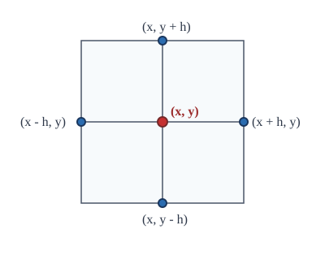
这是一个重要的近似计算公式．由于在计算 $(x, y)$ 处的二阶偏导数时用到了 $f(x, y)$ 在它及它的上下左右共五个点的函数值（见图 12.3.1），因此称 $\Delta_h f(x, y)$ 为五点差分格式．
现假设 $f(x, y)$ 具有四阶连续偏导数，则显然有
$$ f_{xxxx}(x + \theta h, y) = f_{xxxx}(x, y) + o(1), $$利用 Taylor 公式，就得到
$$ \begin{aligned} f(x \pm h, y) &= f(x, y) \pm h f_x(x, y) + \frac{h^2}{2}f_{xx}(x, y) \pm \frac{h^3}{6}f_{xxx}(x, y) + \frac{h^4}{24}f_{xxxx}(x \pm \theta h, y) \\ &= f(x, y) \pm h f_x(x, y) + \frac{h^2}{2}f_{xx}(x, y) \pm \frac{h^3}{6}f_{xxx}(x, y) + \frac{h^4}{24}f_{xxxx}(x, y) + o(h^4). \end{aligned} $$同理有
$$ f(x, y \pm h) = f(x, y) \pm h f_y(x, y) + \frac{h^2}{2}f_{yy}(x, y) \pm \frac{h^3}{6}f_{yyy}(x, y) + \frac{h^4}{24}f_{yyyy}(x, y) + o(h^4). $$结合这两式，就得到五点差分格式的截断误差（用近似公式代替精确关系所产生的误差）为
$$ \Delta_h f(x, y) - \left(\frac{\partial^2}{\partial x^2} + \frac{\partial^2}{\partial y^2}\right)f(x, y) = \frac{h^2}{12}\left(\frac{\partial^4}{\partial x^4} + \frac{\partial^4}{\partial y^4}\right)f(x, y) + o(h^2) = O(h^2). $$下面不加证明地写出一般 $n$ 元函数的 Taylor 公式．
设 $n$ 元函数 $f(x_1, x_2, \cdots, x_n)$ 在点 $(x_1^0, x_2^0, \cdots, x_n^0)$ 附近具有 $k+1$ 阶的连续偏导数，那么在这点附近成立如下的 Taylor 公式：
$$ \begin{aligned} & f(x_1^0 + \Delta x_1, x_2^0 + \Delta x_2, \cdots, x_n^0 + \Delta x_n) \\ =& f(x_1^0, x_2^0, \cdots, x_n^0) + \left(\sum_{i=1}^n \Delta x_i \frac{\partial}{\partial x_i}\right)f(x_1^0, x_2^0, \cdots, x_n^0) \\ &+ \frac{1}{2!}\left(\sum_{i=1}^n \Delta x_i \frac{\partial}{\partial x_i}\right)^2 f(x_1^0, x_2^0, \cdots, x_n^0) + \cdots + \frac{1}{k!}\left(\sum_{i=1}^n \Delta x_i \frac{\partial}{\partial x_i}\right)^k f(x_1^0, x_2^0, \cdots, x_n^0) + R_k, \end{aligned} $$其中
$$ R_k = \frac{1}{(k+1)!}\left(\sum_{i=1}^n \Delta x_i \frac{\partial}{\partial x_i}\right)^{k+1} f(x_1^0 + \theta\Delta x_1, x_2^0 + \theta\Delta x_2, \cdots, x_n^0 + \theta\Delta x_n), \quad 0 < \theta < 1 $$为 Lagrange 余项．
- 对函数 $f(x, y) = \sin x \cos y$ 应用中值定理证明：存在 $\theta \in (0, 1)$，使得 $$ \frac{3}{4} = \frac{\pi}{3}\cos\frac{\pi\theta}{3}\cos\frac{\pi\theta}{6} - \frac{\pi}{6}\sin\frac{\pi\theta}{3}\sin\frac{\pi\theta}{6}. $$
- 写出函数 $f(x, y) = 3x^3 + y^3 - 2x^2 y - 2xy^2 - 6x - 8y + 9$ 在点 $(1, 2)$ 的 Taylor 展开式．
- 求函数 $f(x, y) = \sin x \ln(1 + y)$ 在 $(0, 0)$ 点的 Taylor 展开式（展开到三阶导数为止）．
- 求函数 $f(x, y) = \mathrm{e}^{x+y}$ 在 $(0, 0)$ 点的 $n$ 阶 Taylor 展开式，并写出余项．
- 设 $f(x, y) = \frac{\cos y}{x}, x > 0$．
(1) 求 $f(x, y)$ 在 $(1, 0)$ 点的 Taylor 展开式（展开到二阶导数），并计算余项 $R_2$；(2) 求 $f(x, y)$ 在 $(1, 0)$ 点的 $k$ 阶 Taylor 展开式，并证明在 $(1, 0)$ 点的某个邻域内，余项 $R_k$ 满足当 $k \to \infty$ 时，$R_k \to 0$．
- 利用 Taylor 公式近似计算 $8.96^{2.03}$（展开到二阶导数）．
- 设 $f(x, y)$ 在 $\mathbb{R}^2$ 上可微，$\boldsymbol{l}_1$ 与 $\boldsymbol{l}_2$ 是 $\mathbb{R}^2$ 上两个线性无关的单位向量（方向）．若 $$ \frac{\partial f}{\partial \boldsymbol{l}_i}(x, y) \equiv 0, \quad i = 1, 2, $$ 证明：在 $\mathbb{R}^2$ 上 $f(x, y) \equiv \text{常数}$．
- 设 $f(x, y) = \sin\frac{y}{x}\ (x \ne 0)$，证明： $$ \left(x\frac{\partial}{\partial x} + y\frac{\partial}{\partial y}\right)^k f(x, y) \equiv 0, \quad k \ge 1. $$
§4 隐函数
前面讨论的函数大多是 $z = f(x, y)$ 形式，如 $z = xy$ 和 $z = \sqrt{x^2 + y^2}$ 等．这种因变量在等式左边，自变量在等式右边的函数表达形式通常称为显函数．
但在理论与实际问题中更多遇到的是函数关系无法用显式来表达的情况．如在一元函数中提过的反映行星运动的 Kepler 方程
$$ F(x, y) = y - x - \varepsilon\sin y = 0, \quad 0 < \varepsilon < 1, $$这里 $x$ 是时间，$y$ 是行星与太阳的连线扫过的扇形的弧度，$\varepsilon$ 是行星运动的椭圆轨道的离心率．从天体力学上考虑，$y$ 必定是 $x$ 的函数，但要将函数关系用显式表达出来却无能为力．
这种自变量和因变量混合在一起的方程（组）$F(x, y) = 0$，在一定条件下也表示 $y$ 与 $x$ 之间的函数关系，通称隐函数．
那么自然要问，这种函数方程（组）何时确实表示了一个隐函数（向量值隐函数），又如何保证该隐函数具有连续和可微等分析性质？这些正是本节要讨论的问题．
1. 单个方程的情形
先看一个简单例子．在平面上的单位圆周方程
$$ x^2 + y^2 = 1 $$中，变量 $x$ 与 $y$ 的地位是平等的，那么在什么条件下可以将 $x$ 看成自变量，$y$ 看成 $x$ 的函数呢？
读者不假思索就可以写出，在上半平面为 $y = \sqrt{1 - x^2}$，而在下半平面为 $y = -\sqrt{1 - x^2}$．那么思考得更深入一步，如果考虑的区域既含上半平面的点，又含下半平面的点呢？
显然，对单位圆周上的点 $(\pm 1, 0)$，无论将 $\delta$ 取得多么小，在它的 $\delta$ 邻域中总会发生同一个 $x$ 值对应两个不同 $y$ 值的现象，按定义，这时 $y$ 不是 $x$ 的函数．而在单位圆周上的其他处，则不会发生这种情况（见图 12.4.1）．
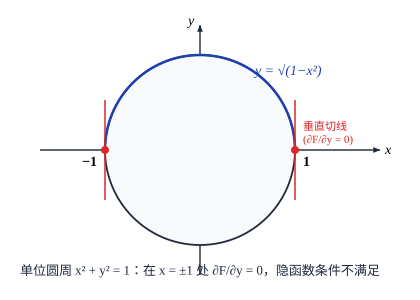
将单位圆周方程写为
$$ F(x, y) = x^2 + y^2 - 1 = 0, $$易发现 $(\pm 1, 0)$ 是使得 $F_y(x, y) = 0$ 的仅有的两个点，这提示 $F_y(x, y) \ne 0$ 对于确定 $y$ 是 $x$ 的隐函数可能有着重要作用．
另一方面，若假定由方程 $F(x, y) = 0$ 确定了 $y$ 是 $x$ 的函数 $y = y(x)$，且 $y(x)$ 可微，则由 $F(x, y(x)) = 0$ 及复合函数的链式法则，有
$$ \frac{\mathrm{d}F(x, y(x))}{\mathrm{d}x} = \frac{\partial F(x, y)}{\partial x} + \frac{\partial F(x, y)}{\partial y}\frac{\mathrm{d}y}{\mathrm{d}x} = F_x + F_y \frac{\mathrm{d}y}{\mathrm{d}x} = 0, $$即
$$ \frac{\mathrm{d}y}{\mathrm{d}x} = -\frac{F_x}{F_y}. $$从上式也可以看出，条件 $F_y \ne 0$ 对于隐函数的求导可能具有举足轻重的意义．
事实上，我们有下面的定理：
若二元函数 $F(x, y)$ 满足条件：
(1) $F(x_0, y_0) = 0$；
(2) 在闭矩形 $D = \{(x, y) \mid |x - x_0| \le a, |y - y_0| \le b\}$ 上，$F(x, y)$ 连续，且具有连续偏导数；
(3) $F_y(x_0, y_0) \ne 0$，
那么
(i) 在点 $(x_0, y_0)$ 附近可以从函数方程
$$ F(x, y) = 0 $$惟一确定隐函数
$$ y = f(x), \quad x \in O(x_0, \rho), $$它满足 $F(x, f(x)) = 0$，以及 $y_0 = f(x_0)$；
(ii) 隐函数 $y = f(x)$ 在 $x \in O(x_0, \rho)$ 上连续；
(iii) 隐函数 $y = f(x)$ 在 $x \in O(x_0, \rho)$ 上具有连续的导数，且
$$ \frac{\mathrm{d}y}{\mathrm{d}x} = -\frac{F_x(x, y)}{F_y(x, y)}. $$证 不失一般性，设 $F_y(x_0, y_0) > 0$．
先证明隐函数的存在性（见图 12.4.2）．
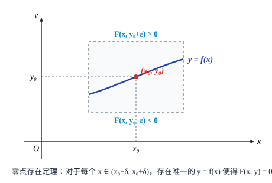
由 $F_y(x_0, y_0) > 0$ 与 $F_y(x, y)$ 的连续性，可知存在 $0 < \alpha \le a, 0 < \beta \le b$，使得在闭矩形
$$ D^* = \{(x, y) \mid |x - x_0| \le \alpha, |y - y_0| \le \beta\} $$上成立 $F_y(x, y) > 0$．
于是，对固定的 $x_0$，$y$ 的函数 $F(x_0, y)$ 在 $[y_0 - \beta, y_0 + \beta]$ 是严格单调增加的．又由于 $F(x_0, y_0) = 0$，从而
$$ F(x_0, y_0 - \beta) < 0, \quad F(x_0, y_0 + \beta) > 0. $$由于 $F(x, y)$ 在 $D^*$ 上连续，于是存在 $\rho > 0$，使得在线段
$$ x_0 - \rho < x < x_0 + \rho, \quad y = y_0 + \beta $$上 $F(x, y) > 0$，而在线段
$$ x_0 - \rho < x < x_0 + \rho, \quad y = y_0 - \beta $$上 $F(x, y) < 0$．
因此，对于 $(x_0 - \rho, x_0 + \rho)$ 内的任一点 $\bar{x}$，将 $F(\bar{x}, y)$ 看成 $y$ 的函数，它在 $[y_0 - \beta, y_0 + \beta]$ 上是连续的，而由刚才的讨论知道
$$ F(\bar{x}, y_0 - \beta) < 0, \quad F(\bar{x}, y_0 + \beta) > 0, $$根据零点存在定理，必有 $\bar{y} \in (y_0 - \beta, y_0 + \beta)$ 使得 $F(\bar{x}, \bar{y}) = 0$．又因为在 $D^*$ 上 $F_y > 0$，因此这样的 $\bar{y}$ 是惟一的．
这就证明了在 $O(x_0, \rho)$ 内存在惟一确定的隐函数 $y = f(x)$，使 $F(x, f(x)) = 0$ 成立，且显然 $y_0 = f(x_0)$．结论 (i) 证毕．
下面证明 $y = f(x)$ 的连续性．
设 $\bar{x}$ 为 $(x_0 - \rho, x_0 + \rho)$ 上的任一点．对于任意给定的 $\varepsilon > 0$（$\varepsilon$ 充分小），由于 $F(\bar{x}, \bar{y}) = 0$ ($\bar{y} = f(\bar{x})$)，由前面的讨论知道
$$ F(\bar{x}, \bar{y} - \varepsilon) < 0, \quad F(\bar{x}, \bar{y} + \varepsilon) > 0. $$而由于 $F(x, y)$ 在 $D^*$ 上的连续性，一定存在 $\delta > 0$，使得当 $x \in O(\bar{x}, \delta)$ 时，
$$ F(x, \bar{y} - \varepsilon) < 0, \quad F(x, \bar{y} + \varepsilon) > 0. $$通过与前面类似的讨论可以得到，当 $x \in O(\bar{x}, \delta)$ 时，相应的隐函数值必满足 $f(x) \in (\bar{y} - \varepsilon, \bar{y} + \varepsilon)$，即
$$ |f(x) - f(\bar{x})| < \varepsilon. $$这说明 $y = f(x)$ 在 $\bar{x}$ 处是连续的．结论 (ii) 证毕．
最后证明 $y = f(x)$ 的可微性，并求其导数．
设 $x$ 为 $(x_0 - \rho, x_0 + \rho)$ 上的任一点．取 $\Delta x$ 充分小使得 $x + \Delta x \in (x_0 - \rho, x_0 + \rho)$，记 $y = f(x)$ 以及 $y + \Delta y = f(x + \Delta x)$，则显然成立
$$ F(x, y) = 0 \quad \text{和} \quad F(x + \Delta x, y + \Delta y) = 0. $$应用多元函数的微分中值定理，得到
$$ 0 = F(x + \Delta x, y + \Delta y) - F(x, y) = F_x(x + \theta\Delta x, y + \theta\Delta y)\Delta x + F_y(x + \theta\Delta x, y + \theta\Delta y)\Delta y, \quad 0 < \theta < 1. $$注意到在 $D^*$ 上 $F_y \ne 0$，因此
$$ \frac{\Delta y}{\Delta x} = -\frac{F_x(x + \theta\Delta x, y + \theta\Delta y)}{F_y(x + \theta\Delta x, y + \theta\Delta y)}. $$令 $\Delta x \to 0$，注意到 $F_x$ 和 $F_y$ 的连续性，就得到
$$ \left.\frac{\mathrm{d}y}{\mathrm{d}x}\right|_{x = \bar{x}} = -\frac{F_x(\bar{x}, \bar{y})}{F_y(\bar{x}, \bar{y})}, $$即
$$ f'(x) = -\frac{F_x(x, f(x))}{F_y(x, f(x))}. $$由 $F_x, F_y$ 的连续性以及 $f(x)$ 的连续性可知，$f'(x)$ 也是连续的．结论 (iii) 证毕．
定理 12.4.1 只是保证了在一定的条件下，函数方程 $F(x, y) = 0$ 在局部（不一定是整体）确定了 $y$ 关于 $x$ 的函数关系 $y = f(x)$，而并不意味这种关系能用显式具体表示出来．例如，本节开始给出的 Kepler 方程
$$ y - x - \varepsilon\sin y = 0, \quad 0 < \varepsilon < 1. $$函数 $y = f(x)$ 是肯定存在的．但遗憾的是，它不能用显式表示．
定理 12.4.1 可以直接推广到多元函数的情形，其证明方法也非常相似，所以我们不加证明地写出这个结果．
若 $n+1$ 元函数 $F(x_1, x_2, \cdots, x_n, y)$ 满足条件：
(1) $F(x_1^0, x_2^0, \cdots, x_n^0, y_0) = 0$；
(2) 在闭长方体 $D = \{(\boldsymbol{x}, y) \in \mathbb{R}^{n+1} \mid |x_i - x_i^0| \le a_i \; (i = 1, 2, \cdots, n), |y - y_0| \le b\}$ 上，$F(\boldsymbol{x}, y)$ 连续，且具有连续偏导数 $F_{x_i}\ (i = 1, 2, \cdots, n)$ 及 $F_y$；
(3) $F_y(x_1^0, x_2^0, \cdots, x_n^0, y_0) \ne 0$，
那么
(i) 在点 $(x_1^0, x_2^0, \cdots, x_n^0)$ 附近可以从函数方程
$$ F(x_1, x_2, \cdots, x_n, y) = 0 $$惟一确定隐函数
$$ y = f(x_1, x_2, \cdots, x_n), \quad \boldsymbol{x} \in O(\boldsymbol{x}_0, \rho), $$它满足 $F(\boldsymbol{x}, f(\boldsymbol{x})) = 0$，以及 $y_0 = f(\boldsymbol{x}_0)$；
(ii) 隐函数 $y = f(\boldsymbol{x})$ 在 $\boldsymbol{x} \in O(\boldsymbol{x}_0, \rho)$ 上连续；
(iii) 隐函数 $y = f(\boldsymbol{x})$ 在 $\boldsymbol{x} \in O(\boldsymbol{x}_0, \rho)$ 上具有连续的偏导数，且
$$ \frac{\partial y}{\partial x_i} = -\frac{F_{x_i}(\boldsymbol{x}, y)}{F_y(\boldsymbol{x}, y)}, \quad i = 1, 2, \cdots, n. $$在具体计算中（当定理的条件满足时），方程
$$ F(x_1, x_2, \cdots, x_n, y) = 0 $$所确定的隐函数 $y = f(x_1, x_2, \cdots, x_n)$ 的偏导数通常可如下直接计算：在方程两边对 $x_i$ 求偏导，利用复合函数求导的链式法则即得
$$ \frac{\partial F}{\partial x_i} + \frac{\partial F}{\partial y}\frac{\partial y}{\partial x_i} = 0. $$于是
$$ \frac{\partial y}{\partial x_i} = -\frac{\frac{\partial F}{\partial x_i}}{\frac{\partial F}{\partial y}}, \quad i = 1, 2, \cdots, n. $$在上半椭球面 $\frac{x^2}{a^2} + \frac{y^2}{b^2} + \frac{z^2}{c^2} = 1\ (z > 0)$ 上，求 $\frac{\partial z}{\partial x}$ 和 $\frac{\partial z}{\partial y}$．
解 记
$$ F(x, y, z) = \frac{x^2}{a^2} + \frac{y^2}{b^2} + \frac{z^2}{c^2} - 1 = 0, $$从而有
$$ F_x = \frac{2x}{a^2}, \quad F_y = \frac{2y}{b^2}, \quad F_z = \frac{2z}{c^2}. $$在方程两边分别对 $x$ 和 $y$ 求偏导，得到
$$ \frac{2x}{a^2} + \frac{2z}{c^2}\frac{\partial z}{\partial x} = 0, \quad \frac{2y}{b^2} + \frac{2z}{c^2}\frac{\partial z}{\partial y} = 0, $$于是由 $z > 0$（保证 $F_z \ne 0$）解得
$$ \frac{\partial z}{\partial x} = -\frac{c^2 x}{a^2 z}, \quad \frac{\partial z}{\partial y} = -\frac{c^2 y}{b^2 z}. $$读者可以用它的显式表达式 $z = c\sqrt{1 - \frac{x^2}{a^2} - \frac{y^2}{b^2}}$ 来验证以上结果的正确性．
设方程 $x^2 + y^2 + z^2 = 4z$ 确定 $z$ 为 $x, y$ 的函数，求 $\frac{\partial^2 z}{\partial x^2}$ 和 $\frac{\partial^2 z}{\partial x \partial y}$．
解 在方程 $x^2 + y^2 + z^2 = 4z$ 两边对 $x$ 求偏导，
$$ 2x + 2z\frac{\partial z}{\partial x} = 4\frac{\partial z}{\partial x}, $$于是
$$ \frac{\partial z}{\partial x} = \frac{x}{2 - z}. $$再在前一等式两边对 $x$ 求偏导，
$$ 2 + 2\left(\frac{\partial z}{\partial x}\right)^2 + 2z\frac{\partial^2 z}{\partial x^2} = 4\frac{\partial^2 z}{\partial x^2}, $$得到
$$ \frac{\partial^2 z}{\partial x^2} = \frac{1 + \left(\frac{\partial z}{\partial x}\right)^2}{2 - z} = \frac{(2 - z)^2 + x^2}{(2 - z)^3}. $$在方程 $x^2 + y^2 + z^2 = 4z$ 两边对 $y$ 求偏导，
$$ 2y + 2z\frac{\partial z}{\partial y} = 4\frac{\partial z}{\partial y}, $$于是
$$ \frac{\partial z}{\partial y} = \frac{y}{2 - z}. $$再在前一等式两边对 $x$ 求偏导，
$$ 2\frac{\partial z}{\partial x}\frac{\partial z}{\partial y} + 2z\frac{\partial^2 z}{\partial x \partial y} = 4\frac{\partial^2 z}{\partial x \partial y}, $$得到
$$ \frac{\partial^2 z}{\partial x \partial y} = \frac{\frac{\partial z}{\partial x}\frac{\partial z}{\partial y}}{2 - z} = \frac{xy}{(2 - z)^3}. $$设方程 $F(xz, yz) = 0$ 确定 $z$ 为 $x, y$ 的函数，其中 $F$ 具有二阶连续偏导数，求 $\frac{\partial^2 z}{\partial x^2}$．
解 当 $\frac{\partial F}{\partial z} = x F_1 + y F_2 \ne 0$ 时，可以应用隐函数存在定理，在方程 $F(xz, yz) = 0$ 两边对 $x$ 求偏导，得
$$ \left(z + x\frac{\partial z}{\partial x}\right)F_1 + y\frac{\partial z}{\partial x}F_2 = 0, $$于是
$$ \frac{\partial z}{\partial x} = -\frac{z F_1}{x F_1 + y F_2}. $$再在前一等式两边对 $x$ 求偏导，得到
$$ \left(2\frac{\partial z}{\partial x} + x\frac{\partial^2 z}{\partial x^2}\right)F_1 + \left(z + x\frac{\partial z}{\partial x}\right)^2 F_{11} + 2\left(z + x\frac{\partial z}{\partial x}\right)y\frac{\partial z}{\partial x}F_{12} + y\frac{\partial^2 z}{\partial x^2}F_2 + \left(y\frac{\partial z}{\partial x}\right)^2 F_{22} = 0. $$于是
$$ \frac{\partial^2 z}{\partial x^2} = -\frac{2\frac{\partial z}{\partial x}F_1 + \left(z + x\frac{\partial z}{\partial x}\right)^2 F_{11} + 2\left(z + x\frac{\partial z}{\partial x}\right)y\frac{\partial z}{\partial x}F_{12} + \left(y\frac{\partial z}{\partial x}\right)^2 F_{22}}{x F_1 + y F_2}. $$将 $\frac{\partial z}{\partial x} = -\frac{z F_1}{x F_1 + y F_2}$ 代入上式，就得到
$$ \frac{\partial^2 z}{\partial x^2} = \frac{2z F_1^2}{(x F_1 + y F_2)^2} - \frac{y^2 z^2 (F_2^2 F_{11} - 2F_1 F_2 F_{12} + F_1^2 F_{22})}{(x F_1 + y F_2)^3}. $$2. 多个方程的情形
由线性代数的知识知道，在
$$ \begin{vmatrix} a_1 & b_1 \\ a_2 & b_2 \end{vmatrix} \ne 0 $$时，从线性方程组
$$ \begin{cases} a_1 u + b_1 v + c_1 x + d_1 y = 0, \\ a_2 u + b_2 v + c_2 x + d_2 y = 0 \end{cases} $$可以惟一解出
$$ \begin{aligned} u &= -\frac{(c_1 b_2 - b_1 c_2)x + (d_1 b_2 - b_1 d_2)y}{a_1 b_2 - b_1 a_2}, \\ v &= -\frac{(a_1 c_2 - c_1 a_2)x + (a_1 d_2 - d_1 a_2)y}{a_1 b_2 - b_1 a_2}, \end{aligned} $$也就是说，这时可以确定 $u, v$ 为 $x, y$ 的函数，或者说 $(u, v)$ 是 $(x, y)$ 的向量值函数．
对于一般的函数方程组
$$ \begin{cases} F(x, y, u, v) = 0, \\ G(x, y, u, v) = 0, \end{cases} $$在一定的条件下，也可以在某个局部确定 $u, v$ 为 $x, y$ 的函数．
若四个变量的函数 $F(x, y, u, v)$ 和 $G(x, y, u, v)$ 在点 $(x_0, y_0, u_0, v_0)$ 附近满足条件：
(1) $F(x_0, y_0, u_0, v_0) = 0, G(x_0, y_0, u_0, v_0) = 0$；
(2) 在闭长方体
$$ D = \{(x, y, u, v) \mid |x - x_0| \le a, |y - y_0| \le b, |u - u_0| \le c, |v - v_0| \le d\} $$上，函数 $F, G$ 连续，且具有连续偏导数；
(3) 在 $(x_0, y_0, u_0, v_0)$ 点，行列式
$$ \frac{\partial(F, G)}{\partial(u, v)} = \begin{vmatrix} F_u & F_v \\ G_u & G_v \end{vmatrix} \ne 0, $$那么
(i) 在点 $(x_0, y_0, u_0, v_0)$ 附近可以从函数方程组
$$ \begin{cases} F(x, y, u, v) = 0, \\ G(x, y, u, v) = 0 \end{cases} $$惟一确定向量值隐函数
$$ \begin{pmatrix} u \\ v \end{pmatrix} = \begin{pmatrix} f(x, y) \\ g(x, y) \end{pmatrix}, \quad (x, y) \in O((x_0, y_0), \rho), $$满足 $F(x, y, f(x, y), g(x, y)) = 0, G(x, y, f(x, y), g(x, y)) = 0$，以及 $u_0 = f(x_0, y_0), v_0 = g(x_0, y_0)$；
(ii) 这个向量值隐函数在 $O((x_0, y_0), \rho)$ 上连续；
(iii) 这个向量值隐函数在 $O((x_0, y_0), \rho)$ 上具有连续的导数，且
$$ \begin{pmatrix} \frac{\partial u}{\partial x} & \frac{\partial u}{\partial y} \\ \frac{\partial v}{\partial x} & \frac{\partial v}{\partial y} \end{pmatrix} = - \begin{pmatrix} F_u & F_v \\ G_u & G_v \end{pmatrix}^{-1} \begin{pmatrix} F_x & F_y \\ G_x & G_y \end{pmatrix}. $$证 我们先证明向量值隐函数的存在性和连续可导性．
因为在 $(x_0, y_0, u_0, v_0)$ 点
$$ \frac{\partial(F, G)}{\partial(u, v)} = \begin{vmatrix} F_u & F_v \\ G_u & G_v \end{vmatrix} \ne 0, $$所以 $F_u$ 与 $F_v$ 至少有一个在此点不为零，不妨假设 $F_u$ 不等于零，那么对方程 $F(x, y, u, v) = 0$ 应用隐函数存在定理，知道在 $(x_0, y_0, u_0, v_0)$ 附近，存在具有连续偏导数的隐函数 $u = \varphi(x, y, v)$，满足
$$ F(x, y, \varphi(x, y, v), v) = 0, \quad u_0 = \varphi(x_0, y_0, v_0), \quad \text{且} \quad \varphi_v = -\frac{F_v}{F_u}. $$将 $u = \varphi(x, y, v)$ 代入方程 $G(x, y, u, v) = 0$，得到关于变量 $x, y, v$ 的方程
$$ H(x, y, v) = G(x, y, \varphi(x, y, v), v) = 0. $$此时 $H(x_0, y_0, v_0) = 0$．计算 $H_v$：
$$ H_v = G_u \varphi_v + G_v = G_u\left(-\frac{F_v}{F_u}\right) + G_v = \frac{F_u G_v - F_v G_u}{F_u} = \frac{1}{F_u}\frac{\partial(F, G)}{\partial(u, v)} \ne 0, $$因此对方程 $H(x, y, v) = 0$ 也可应用隐函数存在定理，知道在 $(x_0, y_0, v_0)$ 附近存在具有连续偏导数的隐函数 $v = g(x, y)$，满足 $H(x, y, g(x, y)) = 0, v_0 = g(x_0, y_0)$．
于是函数 $f(x, y) = \varphi(x, y, g(x, y))$ 与 $g(x, y)$ 在 $(x_0, y_0)$ 附近满足方程组
$$ \begin{cases} F(x, y, f(x, y), g(x, y)) = 0, \\ G(x, y, f(x, y), g(x, y)) = 0, \end{cases} $$且在 $(x_0, y_0)$ 附近具有连续偏导数．即向量值函数 $\begin{pmatrix} u \\ v \end{pmatrix} = \begin{pmatrix} f(x, y) \\ g(x, y) \end{pmatrix}$ 在某个邻域 $O((x_0, y_0), \rho)$ 内具有连续导数．
为了求向量值隐函数的导数，应用多元函数求导的链式法则，就有
$$ \begin{aligned} \frac{\partial F}{\partial x} + \frac{\partial F}{\partial u}\frac{\partial u}{\partial x} + \frac{\partial F}{\partial v}\frac{\partial v}{\partial x} &= 0, \\ \frac{\partial G}{\partial x} + \frac{\partial G}{\partial u}\frac{\partial u}{\partial x} + \frac{\partial G}{\partial v}\frac{\partial v}{\partial x} &= 0, \end{aligned} $$因此
$$ \begin{pmatrix} \frac{\partial F}{\partial u} & \frac{\partial F}{\partial v} \\ \frac{\partial G}{\partial u} & \frac{\partial G}{\partial v} \end{pmatrix} \begin{pmatrix} \frac{\partial u}{\partial x} \\ \frac{\partial v}{\partial x} \end{pmatrix} = - \begin{pmatrix} \frac{\partial F}{\partial x} \\ \frac{\partial G}{\partial x} \end{pmatrix}. $$同理，由链式法则对 $y$ 求偏导，得到
$$ \begin{pmatrix} \frac{\partial F}{\partial u} & \frac{\partial F}{\partial v} \\ \frac{\partial G}{\partial u} & \frac{\partial G}{\partial v} \end{pmatrix} \begin{pmatrix} \frac{\partial u}{\partial y} \\ \frac{\partial v}{\partial y} \end{pmatrix} = - \begin{pmatrix} \frac{\partial F}{\partial y} \\ \frac{\partial G}{\partial y} \end{pmatrix}. $$将两个矩阵式子合并，就得到
$$ \begin{pmatrix} \frac{\partial F}{\partial u} & \frac{\partial F}{\partial v} \\ \frac{\partial G}{\partial u} & \frac{\partial G}{\partial v} \end{pmatrix} \begin{pmatrix} \frac{\partial u}{\partial x} & \frac{\partial u}{\partial y} \\ \frac{\partial v}{\partial x} & \frac{\partial v}{\partial y} \end{pmatrix} = - \begin{pmatrix} \frac{\partial F}{\partial x} & \frac{\partial F}{\partial y} \\ \frac{\partial G}{\partial x} & \frac{\partial G}{\partial y} \end{pmatrix}, $$即
$$ \begin{pmatrix} \frac{\partial u}{\partial x} & \frac{\partial u}{\partial y} \\ \frac{\partial v}{\partial x} & \frac{\partial v}{\partial y} \end{pmatrix} = - \begin{pmatrix} F_u & F_v \\ G_u & G_v \end{pmatrix}^{-1} \begin{pmatrix} F_x & F_y \\ G_x & G_y \end{pmatrix}. $$将 (iii) 的导数公式分解出来就是
$$ \begin{aligned} \frac{\partial u}{\partial x} &= -\frac{\frac{\partial(F, G)}{\partial(x, v)}}{\frac{\partial(F, G)}{\partial(u, v)}}, \quad \frac{\partial u}{\partial y} = -\frac{\frac{\partial(F, G)}{\partial(y, v)}}{\frac{\partial(F, G)}{\partial(u, v)}}, \\ \frac{\partial v}{\partial x} &= -\frac{\frac{\partial(F, G)}{\partial(u, x)}}{\frac{\partial(F, G)}{\partial(u, v)}}, \quad \frac{\partial v}{\partial y} = -\frac{\frac{\partial(F, G)}{\partial(u, y)}}{\frac{\partial(F, G)}{\partial(u, v)}}. \end{aligned} $$进一步，我们考虑一般的 $m$ 个 $n+m$ 元函数组成的方程组
$$ F_i(x_1, x_2, \cdots, x_n, y_1, y_2, \cdots, y_m) = 0, \quad i = 1, 2, \cdots, m. $$我们称
$$ \frac{\partial(F_1, F_2, \cdots, F_m)}{\partial(y_1, y_2, \cdots, y_m)} = \begin{vmatrix} \frac{\partial F_1}{\partial y_1} & \frac{\partial F_1}{\partial y_2} & \cdots & \frac{\partial F_1}{\partial y_m} \\ \frac{\partial F_2}{\partial y_1} & \frac{\partial F_2}{\partial y_2} & \cdots & \frac{\partial F_2}{\partial y_m} \\ \vdots & \vdots & & \vdots \\ \frac{\partial F_m}{\partial y_1} & \frac{\partial F_m}{\partial y_2} & \cdots & \frac{\partial F_m}{\partial y_m} \end{vmatrix} $$为函数 $F_1, F_2, \cdots, F_m$ 关于变量 $y_1, y_2, \cdots, y_m$ 的 Jacobi 行列式．
定理 12.4.3 的结果可以直接推广到多个函数的情形，其证明方法也非常相似，所以我们不加证明地写出结果．
设 $m$ 个函数 $F_i(x_1, x_2, \cdots, x_n, y_1, y_2, \cdots, y_m)\ (i = 1, 2, \cdots, m)$ 在点 $(\boldsymbol{x}^0, \boldsymbol{y}^0) = (x_1^0, \cdots, x_n^0, y_1^0, \cdots, y_m^0)$ 附近满足以下条件：
(1) $F_i(x_1^0, \cdots, x_n^0, y_1^0, \cdots, y_m^0) = 0\ (i = 1, 2, \cdots, m)$；
(2) 在闭长方体
$$ D = \{(\boldsymbol{x}, \boldsymbol{y}) \in \mathbb{R}^{n+m} \mid |x_j - x_j^0| \le a_j \; (j = 1, \cdots, n), |y_k - y_k^0| \le b_k \; (k = 1, \cdots, m)\} $$上，函数 $F_i\ (i = 1, 2, \cdots, m)$ 连续，且具有连续偏导数；
(3) 在 $(\boldsymbol{x}^0, \boldsymbol{y}^0)$ 点，Jacobi 行列式
$$ \frac{\partial(F_1, F_2, \cdots, F_m)}{\partial(y_1, y_2, \cdots, y_m)} \ne 0, $$那么
(i) 在点 $(\boldsymbol{x}^0, \boldsymbol{y}^0)$ 附近可以从函数方程组
$$ F_i(x_1, \cdots, x_n, y_1, \cdots, y_m) = 0, \quad i = 1, 2, \cdots, m $$惟一确定向量值隐函数
$$ \begin{pmatrix} y_1 \\ y_2 \\ \vdots \\ y_m \end{pmatrix} = \begin{pmatrix} f_1(x_1, \cdots, x_n) \\ f_2(x_1, \cdots, x_n) \\ \vdots \\ f_m(x_1, \cdots, x_n) \end{pmatrix}, \quad (x_1, \cdots, x_n) \in O(\boldsymbol{x}^0, \rho), $$它满足方程组及 $y_k^0 = f_k(\boldsymbol{x}^0)\ (k = 1, \cdots, m)$；
(ii) 这个向量值隐函数在 $O(\boldsymbol{x}^0, \rho)$ 上连续；
(iii) 这个向量值隐函数在 $O(\boldsymbol{x}^0, \rho)$ 上具有连续的导数，且
$$ \begin{pmatrix} \frac{\partial y_1}{\partial x_1} & \cdots & \frac{\partial y_1}{\partial x_n} \\ \vdots & & \vdots \\ \frac{\partial y_m}{\partial x_1} & \cdots & \frac{\partial y_m}{\partial x_n} \end{pmatrix} = - \begin{pmatrix} \frac{\partial F_1}{\partial y_1} & \cdots & \frac{\partial F_1}{\partial y_m} \\ \vdots & & \vdots \\ \frac{\partial F_m}{\partial y_1} & \cdots & \frac{\partial F_m}{\partial y_m} \end{pmatrix}^{-1} \begin{pmatrix} \frac{\partial F_1}{\partial x_1} & \cdots & \frac{\partial F_1}{\partial x_n} \\ \vdots & & \vdots \\ \frac{\partial F_m}{\partial x_1} & \cdots & \frac{\partial F_m}{\partial x_n} \end{pmatrix}. $$在具体计算向量值隐函数的导数时（在定理 12.4.4 的条件满足时），通常用如下方法：分别对
$$ F_i(x_1, x_2, \cdots, x_n, y_1, y_2, \cdots, y_m) = 0, \quad i = 1, 2, \cdots, m $$关于 $x_j$ 求偏导，得到
$$ \frac{\partial F_i}{\partial x_j} + \sum_{k=1}^m \frac{\partial F_i}{\partial y_k}\frac{\partial y_k}{\partial x_j} = 0, \quad i = 1, 2, \cdots, m. $$解这个联立方程组，应用 Cramer 法则就得到
$$ \frac{\partial y_k}{\partial x_j} = -\frac{\frac{\partial(F_1, \cdots, F_{k-1}, F_k, F_{k+1}, \cdots, F_m)}{\partial(y_1, \cdots, y_{k-1}, x_j, y_{k+1}, \cdots, y_m)}}{\frac{\partial(F_1, F_2, \cdots, F_m)}{\partial(y_1, y_2, \cdots, y_m)}}, \quad k = 1, 2, \cdots, m;\; j = 1, 2, \cdots, n. $$设 $\begin{cases} y = y(x), \\ z = z(x) \end{cases}$ 是由方程组 $\begin{cases} z = x f(x+y), \\ F(x, y, z) = 0 \end{cases}$ 所确定的向量值隐函数，其中 $f$ 和 $F$ 分别具有连续的导数和偏导数，求 $\frac{\mathrm{d}z}{\mathrm{d}x}$．
解 分别对方程 $z = x f(x+y)$ 和 $F(x, y, z) = 0$ 的两边关于 $x$ 求偏导数，
$$ \begin{cases} \frac{\mathrm{d}z}{\mathrm{d}x} = f(x+y) + x\left(1 + \frac{\mathrm{d}y}{\mathrm{d}x}\right)f'(x+y), \\ \frac{\partial F}{\partial x} + \frac{\partial F}{\partial y}\frac{\mathrm{d}y}{\mathrm{d}x} + \frac{\partial F}{\partial z}\frac{\mathrm{d}z}{\mathrm{d}x} = 0. \end{cases} $$整理后得到
$$ \begin{cases} -x f'(x+y)\frac{\mathrm{d}y}{\mathrm{d}x} + \frac{\mathrm{d}z}{\mathrm{d}x} = f(x+y) + x f'(x+y), \\ \frac{\partial F}{\partial y}\frac{\mathrm{d}y}{\mathrm{d}x} + \frac{\partial F}{\partial z}\frac{\mathrm{d}z}{\mathrm{d}x} = -\frac{\partial F}{\partial x}. \end{cases} $$解此方程组即得
$$ \frac{\mathrm{d}z}{\mathrm{d}x} = \frac{[f(x+y) + x f'(x+y)]\frac{\partial F}{\partial y} - x f'(x+y)\frac{\partial F}{\partial x}}{x f'(x+y)\frac{\partial F}{\partial z} + \frac{\partial F}{\partial y}}. $$设函数方程组
$$ \begin{cases} u + v + w + x + y = a, \\ u^2 + v^2 + w^2 + x^2 + y^2 = b^2, \\ u^3 + v^3 + w^3 + x^3 + y^3 = c^3 \end{cases} $$确定 $u, v, w$ 为 $x, y$ 的隐函数．求 $\frac{\partial u}{\partial x}, \frac{\partial v}{\partial x}, \frac{\partial w}{\partial x}$．
解 将方程组化为
$$ \begin{cases} F(x, y, u, v, w) = u + v + w + x + y - a = 0, \\ G(x, y, u, v, w) = u^2 + v^2 + w^2 + x^2 + y^2 - b^2 = 0, \\ H(x, y, u, v, w) = u^3 + v^3 + w^3 + x^3 + y^3 - c^3 = 0, \end{cases} $$那么在
$$ \frac{\partial(F, G, H)}{\partial(u, v, w)} = \begin{vmatrix} 1 & 1 & 1 \\ 2u & 2v & 2w \\ 3u^2 & 3v^2 & 3w^2 \end{vmatrix} = 6(v - u)(w - v)(w - u) \ne 0 $$的条件下，可以确定 $(u, v, w)$ 为 $(x, y)$ 的向量值函数．此时，对以上三个方程关于 $x$ 求偏导，得到
$$ \begin{cases} \frac{\partial u}{\partial x} + \frac{\partial v}{\partial x} + \frac{\partial w}{\partial x} + 1 = 0, \\ 2u\frac{\partial u}{\partial x} + 2v\frac{\partial v}{\partial x} + 2w\frac{\partial w}{\partial x} + 2x = 0, \\ 3u^2\frac{\partial u}{\partial x} + 3v^2\frac{\partial v}{\partial x} + 3w^2\frac{\partial w}{\partial x} + 3x^2 = 0. \end{cases} $$解此方程组就得到
$$ \frac{\partial u}{\partial x} = \frac{(v - x)(w - x)}{(u - v)(w - u)}, \quad \frac{\partial v}{\partial x} = \frac{(u - x)(w - x)}{(v - u)(w - v)}, \quad \frac{\partial w}{\partial x} = \frac{(u - x)(v - x)}{(w - u)(v - w)}. $$设函数 $z = z(x, y)$ 具有二阶连续偏导数，并满足方程
$$ \frac{\partial^2 z}{\partial x^2} + 2\frac{\partial^2 z}{\partial x \partial y} + \frac{\partial^2 z}{\partial y^2} = 0. $$对自变量作变换
$$ \begin{cases} u = x + y, \\ v = x - y, \end{cases} $$对因变量也作变换 $w = xy - z$，导出 $w$ 关于 $u, v$ 的偏导数所满足的方程．
解 从自变量的变换中可以解出 $x = \frac{u+v}{2}, y = \frac{u-v}{2}$，因此 $w = xy - z$ 也是 $u, v$ 的函数．由于 $z = xy - w$，利用复合函数求导的链式法则对此等式两边关于 $x$ 和 $y$ 分别求偏导，得到
$$ \begin{aligned} \frac{\partial z}{\partial x} &= y - \left(\frac{\partial w}{\partial u}\frac{\partial u}{\partial x} + \frac{\partial w}{\partial v}\frac{\partial v}{\partial x}\right) = y - \left(\frac{\partial w}{\partial u} + \frac{\partial w}{\partial v}\right), \\ \frac{\partial z}{\partial y} &= x - \left(\frac{\partial w}{\partial u}\frac{\partial u}{\partial y} + \frac{\partial w}{\partial v}\frac{\partial v}{\partial y}\right) = x - \left(\frac{\partial w}{\partial u} - \frac{\partial w}{\partial v}\right). \end{aligned} $$进一步还可得到
$$ \begin{aligned} \frac{\partial^2 z}{\partial x^2} &= -\left(\frac{\partial^2 w}{\partial u^2} + 2\frac{\partial^2 w}{\partial u \partial v} + \frac{\partial^2 w}{\partial v^2}\right), \\ \frac{\partial^2 z}{\partial x \partial y} &= 1 - \left(\frac{\partial^2 w}{\partial u^2} - \frac{\partial^2 w}{\partial v^2}\right), \\ \frac{\partial^2 z}{\partial y^2} &= -\left(\frac{\partial^2 w}{\partial u^2} - 2\frac{\partial^2 w}{\partial u \partial v} + \frac{\partial^2 w}{\partial v^2}\right). \end{aligned} $$将这些表达式代入方程 $\frac{\partial^2 z}{\partial x^2} + 2\frac{\partial^2 z}{\partial x \partial y} + \frac{\partial^2 z}{\partial y^2} = 0$，就得到
$$ -4\frac{\partial^2 w}{\partial u^2} + 2 = 0, \quad \text{即} \quad \frac{\partial^2 w}{\partial u^2} = \frac{1}{2}. $$这样一来，方程就被大大地简化了．
实际上，我们还可以将这个方程解出来．对等式 $\frac{\partial^2 w}{\partial u^2} = \frac{1}{2}$ 两边求积分，得到
$$ \frac{\partial w}{\partial u} = \frac{1}{2}u + \varphi(v), $$再求一次积分，就得到
$$ w = \frac{1}{4}u^2 + u\varphi(v) + \psi(v), $$其中 $\varphi, \psi$ 是任意的二阶连续可微函数．回忆一下所谓的变量代换，就知道方程 $\frac{\partial^2 z}{\partial x^2} + 2\frac{\partial^2 z}{\partial x \partial y} + \frac{\partial^2 z}{\partial y^2} = 0$ 的解的一般形式为
$$ z = xy - \frac{1}{4}(x+y)^2 - (x+y)\varphi(x-y) - \psi(x-y). $$这个例子说明，通过适当的变量代换，常常可以将微分方程化简乃至解出．
3. 逆映射定理
设平面区域 $D \subset \mathbb{R}^2$，映射 $\boldsymbol{f}: D \to \mathbb{R}^2$ 定义为
$$ \begin{cases} x = x(u, v), \\ y = y(u, v), \end{cases} \quad (u, v) \in D. $$如果 $\boldsymbol{f}$ 在 $D$ 上可导（即 $x(u, v)$ 和 $y(u, v)$ 在 $D$ 上可偏导），我们称
$$ \frac{\partial(x, y)}{\partial(u, v)} = \begin{vmatrix} \frac{\partial x}{\partial u} & \frac{\partial x}{\partial v} \\ \frac{\partial y}{\partial u} & \frac{\partial y}{\partial v} \end{vmatrix} $$为映射 $\boldsymbol{f}$ 的 Jacobi 行列式．
设 $P_0 = (u_0, v_0) \in D$，$\boldsymbol{f}(P_0) = (x_0, y_0)$，映射 $\boldsymbol{f}$ 在 $P_0$ 的某个邻域上具有连续导数．如果在 $P_0$ 点处 $\boldsymbol{f}$ 的 Jacobi 行列式
$$ \frac{\partial(x, y)}{\partial(u, v)} \ne 0, $$那么存在 $P_0$ 的一个邻域 $O(P_0, \rho)$，在这个邻域上存在 $\boldsymbol{f}$ 的具有连续导数的逆映射 $\boldsymbol{g}$：
$$ \begin{cases} u = u(x, y), \\ v = v(x, y), \end{cases} \quad (x, y) \in O((x_0, y_0), \rho'), $$满足
$$ \begin{aligned} \frac{\partial u}{\partial x} &= \frac{\frac{\partial y}{\partial v}}{\frac{\partial(x, y)}{\partial(u, v)}}, \quad \frac{\partial u}{\partial y} = -\frac{\frac{\partial x}{\partial v}}{\frac{\partial(x, y)}{\partial(u, v)}}, \\ \frac{\partial v}{\partial x} &= -\frac{\frac{\partial y}{\partial u}}{\frac{\partial(x, y)}{\partial(u, v)}}, \quad \frac{\partial v}{\partial y} = \frac{\frac{\partial x}{\partial u}}{\frac{\partial(x, y)}{\partial(u, v)}}. \end{aligned} $$证 考虑函数方程组
$$ \begin{cases} F(x, y, u, v) = x(u, v) - x = 0, \\ G(x, y, u, v) = y(u, v) - y = 0. \end{cases} $$由假设，在 $(x_0, y_0, u_0, v_0)$ 点处
$$ \frac{\partial(F, G)}{\partial(u, v)} = \frac{\partial(x, y)}{\partial(u, v)} \ne 0. $$由向量值函数的隐函数存在定理，在 $(x_0, y_0, u_0, v_0)$ 附近存在向量值函数 $\boldsymbol{g}$：
$$ \begin{pmatrix} u \\ v \end{pmatrix} = \begin{pmatrix} u(x, y) \\ v(x, y) \end{pmatrix}, \quad (x, y) \in O((x_0, y_0), \rho'), $$满足
$$ x(u(x, y), v(x, y)) = x, \quad y(u(x, y), v(x, y)) = y, $$而且 $u(x, y)$ 和 $v(x, y)$ 在 $O((x_0, y_0), \rho')$ 上具有连续的偏导数．这也说明在 $O((x_0, y_0), \rho')$ 上 $\boldsymbol{g}$ 为 $\boldsymbol{f}$ 的逆映射．
在等式中对 $x$ 求偏导，得到
$$ \frac{\partial x}{\partial u}\frac{\partial u}{\partial x} + \frac{\partial x}{\partial v}\frac{\partial v}{\partial x} = 1, \quad \frac{\partial y}{\partial u}\frac{\partial u}{\partial x} + \frac{\partial y}{\partial v}\frac{\partial v}{\partial x} = 0, $$因此解线性方程组即得定理中的偏导数表达式．同理对 $y$ 求偏导可解得其余两式．
由定理 12.4.5 的公式容易直接算出：
$$ \frac{\partial(u, v)}{\partial(x, y)} = \frac{1}{\frac{\partial(x, y)}{\partial(u, v)}}, $$即映射 $\boldsymbol{f}$ 与其逆映射 $\boldsymbol{g}$ 的 Jacobi 行列式互为倒数，这是一元函数的反函数求导公式的推广．
例如极坐标变换（即映射）
$$ \begin{cases} x = r\cos\theta, \\ y = r\sin\theta, \end{cases} $$的 Jacobi 行列式为
$$ \frac{\partial(x, y)}{\partial(r, \theta)} = \begin{vmatrix} \cos\theta & -r\sin\theta \\ \sin\theta & r\cos\theta \end{vmatrix} = r. $$一般来说，连续映射不一定将开集映射为开集．例如，常值映射就不是将开集映射为开集．但若一个连续映射在某个开集上的 Jacobi 行列式恒不等于零，那么它将这个开集映射为开集，这就是下面的定理．
设 $D$ 为 $\mathbb{R}^2$ 中的开集，且映射 $\boldsymbol{f}: D \to \mathbb{R}^2$ 在 $D$ 上具有连续导数．如果 $\boldsymbol{f}$ 的 Jacobi 行列式在 $D$ 上恒不为零，那么 $D$ 的像集 $\boldsymbol{f}(D)$ 是开集．
证 沿用定理 12.4.5 的记号．
设 $P_0 = (x_0, y_0)$ 为 $\boldsymbol{f}(D)$ 上的任一点，那么从定理 12.4.5 的证明可知，存在 $P_0$ 的一个邻域 $O(P_0, \rho')$，使得这个邻域中的点都是 $\boldsymbol{f}$ 的像点，因此 $P_0$ 是 $\boldsymbol{f}(D)$ 的内点．这就是说，$\boldsymbol{f}(D)$ 是开集．
定理 12.4.5 和定理 12.4.6 在高维也成立，请有兴趣的读者考虑一下．
- 求下列方程所确定的隐函数的导数或偏导数：
(1) $\sin y + \mathrm{e}^x - xy^2 = 0$，求 $\frac{\mathrm{d}y}{\mathrm{d}x}$；(2) $x^y = y^x$，求 $\frac{\mathrm{d}y}{\mathrm{d}x}$；(3) $\ln\sqrt{x^2 + y^2} = \arctan\frac{y}{x}$，求 $\frac{\mathrm{d}y}{\mathrm{d}x}$；(4) $\arctan\frac{x+y}{a} - \frac{y}{a} = 0$，求 $\frac{\mathrm{d}y}{\mathrm{d}x}$ 和 $\frac{\mathrm{d}^2 y}{\mathrm{d}x^2}$；(5) $\frac{x}{z} = \ln\frac{x}{y}$，求 $\frac{\partial z}{\partial x}$ 和 $\frac{\partial z}{\partial y}$；(6) $\mathrm{e}^z - xyz = 0$，求 $\frac{\partial z}{\partial x}, \frac{\partial z}{\partial y}, \frac{\partial^2 z}{\partial x^2}$ 和 $\frac{\partial^2 z}{\partial x \partial y}$；(7) $z^3 - 3xyz = a^3$，求 $\frac{\partial z}{\partial x}, \frac{\partial z}{\partial y}, \frac{\partial^2 z}{\partial x^2}$ 和 $\frac{\partial^2 z}{\partial x \partial y}$；(8) $f(x+y, y+z, z+x) = 0$，求 $\frac{\partial z}{\partial x}$ 和 $\frac{\partial z}{\partial y}$；(9) $z = f(xz, z-y)$，求 $\frac{\partial z}{\partial x}, \frac{\partial z}{\partial y}$ 和 $\frac{\partial^2 z}{\partial x^2}$；(10) $f(x, x+y, x+y+z) = 0$，求 $\frac{\partial z}{\partial x}, \frac{\partial z}{\partial y}, \frac{\partial^2 z}{\partial x^2}$ 和 $\frac{\partial^2 z}{\partial x \partial y}$．
- 设 $y = \tan(x+y)$ 确定 $y$ 为 $x$ 的隐函数，验证 $$ \frac{\mathrm{d}^3 y}{\mathrm{d}x^3} = -\frac{2(3y^4 + 8y^2 + 5)}{y^8}. $$
- 设 $\varphi$ 是可微函数，证明由 $\varphi(cx - az, cy - bz) = 0$ 所确定的隐函数 $z = f(x, y)$ 满足方程 $$ a\frac{\partial z}{\partial x} + b\frac{\partial z}{\partial y} = c. $$
- 设方程 $\varphi(x + zy^{-1}, y + zx^{-1}) = 0$ 确定隐函数 $z = f(x, y)$，证明它满足方程 $$ x\frac{\partial z}{\partial x} + y\frac{\partial z}{\partial y} = z - xy. $$
- 求下列方程组所确定的隐函数的导数或偏导数：
(1) $\begin{cases} z - x^2 - y^2 = 0, \\ x^2 + 2y^2 + 3z^2 = 4a^2, \end{cases}$ 求 $\frac{\mathrm{d}y}{\mathrm{d}x}, \frac{\mathrm{d}z}{\mathrm{d}x}, \frac{\mathrm{d}^2 y}{\mathrm{d}x^2}, \frac{\mathrm{d}^2 z}{\mathrm{d}x^2}$；(2) $\begin{cases} xu + yv = 0, \\ yu + xv = 1, \end{cases}$ 求 $\frac{\partial u}{\partial x}, \frac{\partial u}{\partial y}, \frac{\partial^2 u}{\partial x^2}, \frac{\partial^2 u}{\partial x \partial y}$；(3) $\begin{cases} u = f(ux, v+y), \\ v = g(u-x, v^2 y), \end{cases}$ 求 $\frac{\partial u}{\partial x}$ 和 $\frac{\partial v}{\partial x}$；(4) $\begin{cases} x = u+v, \\ y = u-v, \\ z = u^2 v^2, \end{cases}$ 求 $\frac{\partial z}{\partial x}$ 和 $\frac{\partial z}{\partial y}$；(5) $\begin{cases} x = \mathrm{e}^u \cos v, \\ y = \mathrm{e}^u \sin v, \\ z = u^2 + v^2, \end{cases}$ 求 $\frac{\partial z}{\partial x}$ 和 $\frac{\partial z}{\partial y}$．
- 求微分：
(1) $x + 2y + z - 2\sqrt{xyz} = 0$，求 $\mathrm{d}z$；(2) $\begin{cases} x + y = u + v, \\ \frac{x}{y} = \frac{\sin u}{\sin v}, \end{cases}$ 求 $\mathrm{d}u$ 与 $\mathrm{d}v$．
- 设 $\begin{cases} x = x(y), \\ z = z(y) \end{cases}$ 是由方程组 $\begin{cases} F(y-x, y-z) = 0, \\ G\left(xy, \frac{z}{y}\right) = 0 \end{cases}$ 所确定的向量值隐函数，其中二元函数 $F$ 和 $G$ 分别具有连续的偏导数，求 $\frac{\mathrm{d}x}{\mathrm{d}y}$ 和 $\frac{\mathrm{d}z}{\mathrm{d}y}$．
- 设 $f(x, y)$ 具有二阶连续偏导数，在极坐标 $\begin{cases} x = r\cos\theta, \\ y = r\sin\theta \end{cases}$ 变换下，求 $$ \frac{\partial^2 f}{\partial x^2} + \frac{\partial^2 f}{\partial y^2} $$ 关于极坐标的表达式．
- 设二元函数 $f$ 具有二阶连续偏导数．证明：通过适当线性变换 $$ \begin{cases} u = x + \lambda y, \\ v = x + \mu y, \end{cases} $$ 可以将方程 $$ A\frac{\partial^2 f}{\partial x^2} + 2B\frac{\partial^2 f}{\partial x \partial y} + C\frac{\partial^2 f}{\partial y^2} = 0 \quad (AC - B^2 < 0) $$ 化简为 $$ \frac{\partial^2 f}{\partial u \partial v} = 0, $$ 并说明此时 $\lambda, \mu$ 为一元二次方程 $A + 2Bt + Ct^2 = 0$ 的两个相异实根．
- 通过自变量变换 $\begin{cases} x = \mathrm{e}^\xi, \\ y = \mathrm{e}^\eta \end{cases}$ 变换方程 $$ ax^2 \frac{\partial^2 z}{\partial x^2} + 2bxy \frac{\partial^2 z}{\partial x \partial y} + cy^2 \frac{\partial^2 z}{\partial y^2} = 0, \quad a, b, c \text{ 为常数}． $$
- 通过自变量变换 $\begin{cases} u = x - 2\sqrt{y}, \\ v = x + 2\sqrt{y} \end{cases}$ 变换方程 $$ \frac{\partial^2 z}{\partial x^2} - y\frac{\partial^2 z}{\partial y^2} = \frac{1}{2}\frac{\partial z}{\partial y}, \quad y > 0. $$
- 导出新的因变量关于新的自变量的偏导数所满足的方程：
(1) 用 $\begin{cases} u = x^2 + y^2, \\ v = \frac{1}{x} + \frac{1}{y} \end{cases}$ 及 $w = \ln z - (x+y)$ 变换方程 $$ y\frac{\partial z}{\partial x} - x\frac{\partial z}{\partial y} = (y - x)z; $$(2) 用 $\begin{cases} u = x, \\ v = x + y \end{cases}$ 及 $w = x + y + z$ 变换方程 $$ \frac{\partial^2 z}{\partial x^2} - 2\frac{\partial^2 z}{\partial x \partial y} + \left(1 + \frac{y}{x}\right)\frac{\partial^2 z}{\partial y^2} = 0; $$(3) 用 $\begin{cases} u = x + y, \\ v = \frac{y}{x} \end{cases}$ 及 $w = \frac{z}{x}$ 变换方程 $$ \frac{\partial^2 z}{\partial x^2} - 2\frac{\partial^2 z}{\partial x \partial y} + \frac{\partial^2 z}{\partial y^2} = 0. $$
- 设 $y = f(x, t)$，而 $t$ 是由方程 $F(x, y, t) = 0$ 所确定的 $x, y$ 的隐函数，其中 $f$ 和 $F$ 都具有连续偏导数．证明 $$ \frac{\mathrm{d}y}{\mathrm{d}x} = \frac{\frac{\partial f}{\partial x}\frac{\partial F}{\partial t} - \frac{\partial f}{\partial t}\frac{\partial F}{\partial x}}{\frac{\partial f}{\partial t}\frac{\partial F}{\partial y} + \frac{\partial F}{\partial t}}. $$
- 设二元函数 $f(x, y): \mathbb{R}^2 \to \mathbb{R}$ 具有连续偏导数，证明：存在一对一的连续的向量值函数 $\boldsymbol{G}(t): \mathbb{R} \to \mathbb{R}^2$，使得 $$ f \circ \boldsymbol{G} \equiv \text{常数}． $$
§5 偏导数在几何中的应用
1. 空间曲线的切线和法平面
一条空间曲线可以看成一个质点在空间运动的轨迹．取定一个直角坐标系，设质点在时刻 $t$ 位于点 $P(x(t), y(t), z(t))$ 处，也就是它在任一时刻的坐标可用
$$ \begin{cases} x = x(t), \\ y = y(t), \\ z = z(t), \end{cases} \quad a \le t \le b $$来表示，随着 $t$ 的连续变动，相应点 $(x, y, z)$ 的轨迹就是空间中的一条曲线．
这种表达式称为空间曲线的参数方程，它也可以写成向量的形式
$$ \boldsymbol{r}(t) = x(t)\boldsymbol{i} + y(t)\boldsymbol{j} + z(t)\boldsymbol{k}, \quad a \le t \le b. $$如果导向量 $\boldsymbol{r}'(t) = x'(t)\boldsymbol{i} + y'(t)\boldsymbol{j} + z'(t)\boldsymbol{k}$ 在 $[a, b]$ 上连续，并且 $\boldsymbol{r}'(t) \ne \mathbf{0}, t \in [a, b]$，则称所确定的空间曲线为光滑曲线．
光滑曲线的切线位置随切点在曲线上的位置变动而连续变动．
记由以上参数方程所确定的光滑曲线为 $\varGamma$．现在来讨论 $\varGamma$ 上一点 $P_0(x(t_0), y(t_0), z(t_0))$ 处的切线（见图 12.5.1）．空间曲线的切线的定义与平面的情况相同，即定义为割线的极限位置．
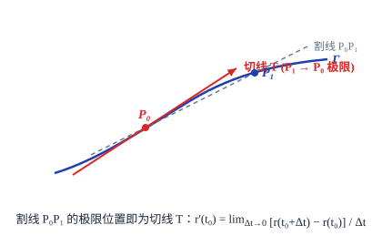
设点 $P_1$ 的坐标为 $(x(t), y(t), z(t))$，则过 $P_0$ 和 $P_1$ 的割线方程为
$$ \frac{x - x_0}{x(t) - x(t_0)} = \frac{y - y_0}{y(t) - y(t_0)} = \frac{z - z_0}{z(t) - z(t_0)}. $$上式各项同除以 $t - t_0$：
$$ \frac{x - x_0}{\frac{x(t) - x(t_0)}{t - t_0}} = \frac{y - y_0}{\frac{y(t) - y(t_0)}{t - t_0}} = \frac{z - z_0}{\frac{z(t) - z(t_0)}{t - t_0}}. $$当 $t \to t_0$ 时取极限，就得到曲线 $\varGamma$ 在点 $P_0$ 处的切线方程：
$$ \frac{x - x_0}{x'(t_0)} = \frac{y - y_0}{y'(t_0)} = \frac{z - z_0}{z'(t_0)}. \tag{1} $$向量 $\boldsymbol{T} = (x'(t_0), y'(t_0), z'(t_0))$ 称为曲线 $\varGamma$ 在点 $P_0$ 处的切向量．过切点 $P_0$ 且与切线垂直的平面称为空间曲线 $\varGamma$ 在 $P_0$ 处的法平面．它的方程为
$$ x'(t_0)(x - x_0) + y'(t_0)(y - y_0) + z'(t_0)(z - z_0) = 0. \tag{2} $$特别地，如果曲线的方程为
$$ y = f(x), \quad z = g(x), $$把它看成以 $x$ 为参数的参数方程
$$ \begin{cases} x = x, \\ y = f(x), \\ z = g(x), \end{cases} $$即得到它在 $P_0(x_0, f(x_0), g(x_0))$ 点的切线方程为
$$ \frac{x - x_0}{1} = \frac{y - y_0}{f'(x_0)} = \frac{z - z_0}{g'(x_0)}, $$法平面方程为
$$ (x - x_0) + f'(x_0)(y - y_0) + g'(x_0)(z - z_0) = 0. $$空间曲线还可以表示为空间中两张曲面的交．设曲线 $\varGamma$ 的方程为
$$ \begin{cases} F(x, y, z) = 0, \\ G(x, y, z) = 0, \end{cases} $$$P_0(x_0, y_0, z_0)$ 为 $\varGamma$ 上一点，且 Jacobi 矩阵
$$ \boldsymbol{J} = \frac{\partial(F, G)}{\partial(x, y, z)} = \begin{pmatrix} F_x & F_y & F_z \\ G_x & G_y & G_z \end{pmatrix} $$在 $P_0$ 点是满秩的，即 $\operatorname{rank}\boldsymbol{J} = 2$．我们来求曲线 $\varGamma$ 在 $P_0$ 点的切线与法平面方程．
由于矩阵 $\boldsymbol{J}$ 在 $P_0$ 点满秩，不失一般性，假设在 $P_0$ 点成立
$$ \frac{\partial(F, G)}{\partial(y, z)} = \begin{vmatrix} F_y & F_z \\ G_y & G_z \end{vmatrix} \ne 0. $$由隐函数存在定理，在 $P_0$ 点附近惟一确定了满足 $y_0 = f(x_0), z_0 = g(x_0)$ 的隐函数
$$ y = f(x), \quad z = g(x), \quad x \in O(x_0, \delta). $$且由隐函数导数公式求得
$$ f'(x_0) = -\frac{\frac{\partial(F, G)}{\partial(x, z)}}{\frac{\partial(F, G)}{\partial(y, z)}} = \frac{\frac{\partial(F, G)}{\partial(z, x)}}{\frac{\partial(F, G)}{\partial(y, z)}}, \quad g'(x_0) = -\frac{\frac{\partial(F, G)}{\partial(y, x)}}{\frac{\partial(F, G)}{\partial(y, z)}} = \frac{\frac{\partial(F, G)}{\partial(x, y)}}{\frac{\partial(F, G)}{\partial(y, z)}}. $$于是由前面公式，得到空间曲线在 $P_0$ 处的切线方程为
$$ \frac{x - x_0}{\frac{\partial(F, G)}{\partial(y, z)}(P_0)} = \frac{y - y_0}{\frac{\partial(F, G)}{\partial(z, x)}(P_0)} = \frac{z - z_0}{\frac{\partial(F, G)}{\partial(x, y)}(P_0)}, $$法平面方程为
$$ \frac{\partial(F, G)}{\partial(y, z)}(P_0)(x - x_0) + \frac{\partial(F, G)}{\partial(z, x)}(P_0)(y - y_0) + \frac{\partial(F, G)}{\partial(x, y)}(P_0)(z - z_0) = 0. $$这个结果有一个非常清晰的几何解释：设想平面 $\pi$ 是由向量 $\operatorname{grad}F(P_0)$ 与 $\operatorname{grad}G(P_0)$ 张成的过 $P_0$ 的平面．因为矩阵 $\boldsymbol{J}$ 在 $P_0$ 点满秩，因此
$$ \operatorname{grad}F(P_0) = (F_x(P_0), F_y(P_0), F_z(P_0)) \quad \text{与} \quad \operatorname{grad}G(P_0) = (G_x(P_0), G_y(P_0), G_z(P_0)) $$线性无关，因此它们可以张成一个过 $P_0$ 点的平面 $\pi$．
要证明平面 $\pi$ 就是曲线 $\varGamma$ 在 $P_0$ 点的法平面，只要证明 $\varGamma$ 在 $P_0$ 点的切向量与 $\pi$ 垂直，即与 $\operatorname{grad}F(P_0)$ 和 $\operatorname{grad}G(P_0)$ 均垂直即可．
因为曲线 $\varGamma$ 在 $P_0$ 点的切向量为
$$ \boldsymbol{T} = \left(\frac{\partial(F, G)}{\partial(y, z)}(P_0), \frac{\partial(F, G)}{\partial(z, x)}(P_0), \frac{\partial(F, G)}{\partial(x, y)}(P_0)\right), $$于是
$$ \boldsymbol{T} \cdot \operatorname{grad}F(P_0) = F_x(P_0)\frac{\partial(F, G)}{\partial(y, z)}(P_0) + F_y(P_0)\frac{\partial(F, G)}{\partial(z, x)}(P_0) + F_z(P_0)\frac{\partial(F, G)}{\partial(x, y)}(P_0) = \begin{vmatrix} F_x(P_0) & F_y(P_0) & F_z(P_0) \\ F_x(P_0) & F_y(P_0) & F_z(P_0) \\ G_x(P_0) & G_y(P_0) & G_z(P_0) \end{vmatrix} = 0. $$同理 $\boldsymbol{T} \cdot \operatorname{grad}G(P_0) = 0$．这就证明了平面 $\pi$ 就是曲线 $\varGamma$ 在 $P_0$ 点的法平面．
一个质点作复合运动：一方面逆时针方向以等角速度 $\omega$ 绕 $z$ 轴旋转，另一方面又沿 $z$ 轴正向以等速度 $c$ 上升．设在 $t = 0$ 时质点在点 $P_0(a, 0, 0)\ (a > 0)$ 处，求
(1) 质点的运动轨迹方程；
(2) 质点的运动速度；
(3) 当 $\omega = 1$ 时，质点在 $t = \frac{\pi}{2}$ 时所对应点处的切线与法平面方程．
解 (1) 设在时刻 $t$，质点在 $P(x, y, z)$ 处，$\theta$ 为 $OM$ 与 $x$ 轴正向的夹角（如图 12.5.2）．
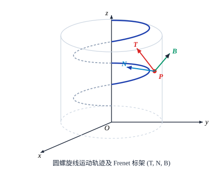
因为质点绕 $z$ 轴以等角速度 $\omega$ 旋转，且在 $t = 0$ 时在 $P_0(a, 0, 0)$ 处，所以
$$ \theta = \omega t, $$从而点 $P$ 在 $xy$ 平面上的投影点 $M$ 的坐标为
$$ x = a\cos\omega t, \quad y = a\sin\omega t. $$又由于质点沿 $z$ 轴以速度 $c$ 上升，所以 $z = ct$．于是质点的运动轨迹方程为
$$ \begin{cases} x = a\cos\omega t, \\ y = a\sin\omega t, \\ z = ct, \end{cases} \quad t \ge 0, $$这样的曲线称为螺旋线．
(2) 我们将质点的轨迹方程用向量值函数写出来就是
$$ \boldsymbol{r}(t) = (a\cos\omega t, a\sin\omega t, ct), $$那么质点的运动速度就为
$$ \boldsymbol{r}'(t) = (-a\omega\sin\omega t, a\omega\cos\omega t, c). $$(3) 当 $\omega = 1$ 时，曲线 $\varGamma$ 的方程即为
$$ \begin{cases} x = a\cos t, \\ y = a\sin t, \\ z = ct. \end{cases} $$在 $t = \frac{\pi}{2}$ 时对应的点为 $M_0\left(0, a, \frac{c\pi}{2}\right)$，切向量为 $\boldsymbol{r}'\left(\frac{\pi}{2}\right) = (-a, 0, c)$．因此曲线 $\varGamma$ 在 $M_0$ 点的切线方程为
$$ \frac{x}{-a} = \frac{y - a}{0} = \frac{z - \frac{c\pi}{2}}{c}, \quad \text{或} \quad \begin{cases} \frac{x}{-a} = \frac{z - \frac{c\pi}{2}}{c}, \\ y = a. \end{cases} $$曲线 $\varGamma$ 在 $M_0$ 点的法平面方程为
$$ -ax + c\left(z - \frac{c\pi}{2}\right) = 0. $$求曲线 $\varGamma: \begin{cases} x^2 + y^2 + z^2 - 2y = 4, \\ x + y + z = 0 \end{cases}$ 在点 $(1, 1, -2)$ 处的切线和法平面的方程（见图 12.5.3）．
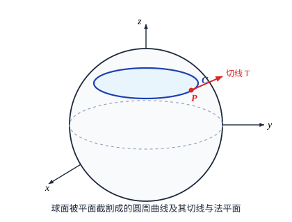
解法一 记 $F(x, y, z) = x^2 + y^2 + z^2 - 2y - 4 = 0, G(x, y, z) = x + y + z = 0$．计算各阶偏导数：
$$ \begin{aligned} \frac{\partial(F, G)}{\partial(y, z)} &= \begin{vmatrix} 2y - 2 & 2z \\ 1 & 1 \end{vmatrix} = 2(y - z - 1), \\ \frac{\partial(F, G)}{\partial(z, x)} &= \begin{vmatrix} 2z & 2x \\ 1 & 1 \end{vmatrix} = 2(z - x), \\ \frac{\partial(F, G)}{\partial(x, y)} &= \begin{vmatrix} 2x & 2y - 2 \\ 1 & 1 \end{vmatrix} = 2(x - y + 1). \end{aligned} $$因此在点 $(1, 1, -2)$ 处：
$$ \frac{\partial(F, G)}{\partial(y, z)}(1, 1, -2) = 4, \quad \frac{\partial(F, G)}{\partial(z, x)}(1, 1, -2) = -6, \quad \frac{\partial(F, G)}{\partial(x, y)}(1, 1, -2) = 2. $$于是所求的切线方程为
$$ \frac{x - 1}{4} = \frac{y - 1}{-6} = \frac{z + 2}{2}, \quad \text{即} \quad \frac{x - 1}{2} = \frac{y - 1}{-3} = \frac{z + 2}{1}; $$法平面方程为
$$ 4(x - 1) - 6(y - 1) + 2(z + 2) = 0, \quad \text{即} \quad 2x - 3y + z + 3 = 0. $$解法二 依照推导公式的方法来求解．在所给的两个曲面方程两边对 $x$ 求导，
$$ \begin{cases} 2x + 2y\frac{\mathrm{d}y}{\mathrm{d}x} + 2z\frac{\mathrm{d}z}{\mathrm{d}x} - 2\frac{\mathrm{d}y}{\mathrm{d}x} = 0, \\ 1 + \frac{\mathrm{d}y}{\mathrm{d}x} + \frac{\mathrm{d}z}{\mathrm{d}x} = 0. \end{cases} $$解这个方程组，得到
$$ \frac{\mathrm{d}y}{\mathrm{d}x} = \frac{z - x}{y - z - 1}, \quad \frac{\mathrm{d}z}{\mathrm{d}x} = -\frac{y - x - 1}{y - z - 1}. $$代入点 $(1, 1, -2)$，同样得到切向量 $(2, -3, 1)$，结论相同．
2. 曲面的切平面与法线
设曲面 $S$ 的方程为隐式方程 $F(x, y, z) = 0$，点 $P_0(x_0, y_0, z_0)$ 为 $S$ 上一点，且 $\operatorname{grad}F(P_0) = (F_x(P_0), F_y(P_0), F_z(P_0)) \ne \mathbf{0}$．
设 $\varGamma$ 是曲面 $S$ 上过 $P_0$ 点的任意一条光滑曲线，其参数方程为
$$ \begin{cases} x = x(t), \\ y = y(t), \\ z = z(t), \end{cases} \quad t \in [\alpha, \beta], $$其中 $P_0$ 对应于 $t = t_0$．因为曲线 $\varGamma$ 完全在曲面 $S$ 上，所以恒有
$$ F(x(t), y(t), z(t)) = 0, \quad t \in [\alpha, \beta]. $$对 $t$ 在 $t_0$ 处求导就得到
$$ F_x(P_0)x'(t_0) + F_y(P_0)y'(t_0) + F_z(P_0)z'(t_0) = 0. $$这说明，曲面 $S$ 上过 $P_0$ 的任意一条光滑曲线 $\varGamma$ 在 $P_0$ 点的切线（其切向量为 $\boldsymbol{T} = (x'(t_0), y'(t_0), z'(t_0))$）都与向量
$$ \boldsymbol{n} = (F_x(P_0), F_y(P_0), F_z(P_0)) $$垂直，因此这些切线都在同一张平面 $\pi$ 上．
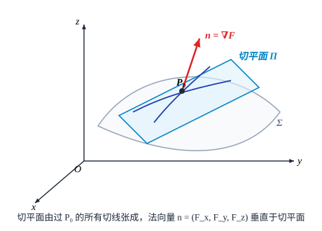
平面 $\pi$ 称为曲面 $S$ 在点 $P_0$ 的切平面，它的法向量 $\boldsymbol{n}$ 称为 $S$ 在 $P_0$ 点的法向量（见图 12.5.4）．这样，$S$ 在点 $P_0$ 的切平面方程可以表示为
$$ F_x(P_0)(x - x_0) + F_y(P_0)(y - y_0) + F_z(P_0)(z - z_0) = 0. $$过 $P_0$ 点且与切平面垂直的直线称为曲面 $S$ 在 $P_0$ 点的法线，它的方程显然为
$$ \frac{x - x_0}{F_x(P_0)} = \frac{y - y_0}{F_y(P_0)} = \frac{z - z_0}{F_z(P_0)}. $$特别地，如果曲面 $S$ 的方程由显式方程 $z = f(x, y)$ 给出，点 $(x_0, y_0, z_0)$ 为 $S$ 上一点，令 $F(x, y, z) = f(x, y) - z = 0$，则 $F_x = f_x, F_y = f_y, F_z = -1$．于是切平面方程为
$$ z - z_0 = f_x(x_0, y_0)(x - x_0) + f_y(x_0, y_0)(y - y_0), $$法线方程为
$$ \frac{x - x_0}{f_x(x_0, y_0)} = \frac{y - y_0}{f_y(x_0, y_0)} = \frac{z - z_0}{-1}. $$曲面方程也可以表示成参数形式：
$$ \begin{cases} x = x(u, v), \\ y = y(u, v), \\ z = z(u, v), \end{cases} \quad (u, v) \in D, $$其中 $D$ 是 $\mathbb{R}^2$ 中的区域，它称为曲面的参数方程．它也可以表为向量形式 $\boldsymbol{r}(u, v) = x(u, v)\boldsymbol{i} + y(u, v)\boldsymbol{j} + z(u, v)\boldsymbol{k}$．
若 Jacobi 矩阵 $\boldsymbol{J} = \frac{\partial(x, y, z)}{\partial(u, v)}$ 在 $D$ 上恒为满秩（秩为 2），则曲面在该点处的切平面方程为
$$ \frac{\partial(y, z)}{\partial(u, v)}(P_0)(x - x_0) + \frac{\partial(z, x)}{\partial(u, v)}(P_0)(y - y_0) + \frac{\partial(x, y)}{\partial(u, v)}(P_0)(z - z_0) = 0, $$法线方程为
$$ \frac{x - x_0}{\frac{\partial(y, z)}{\partial(u, v)}(P_0)} = \frac{y - y_0}{\frac{\partial(z, x)}{\partial(u, v)}(P_0)} = \frac{z - z_0}{\frac{\partial(x, y)}{\partial(u, v)}(P_0)}. $$求曲面 $\mathrm{e}^z - z + xy = 3$ 在点 $(2, 1, 0)$ 处的切平面与法线方程．
解 记 $F(x, y, z) = \mathrm{e}^z - z + xy - 3 = 0$，求各阶偏导数：
$$ F_x = y, \quad F_y = x, \quad F_z = \mathrm{e}^z - 1. $$因此曲面在点 $(2, 1, 0)$ 处的法向量为
$$ \boldsymbol{n} = (F_x(2, 1, 0), F_y(2, 1, 0), F_z(2, 1, 0)) = (1, 2, 0). $$于是曲面在点 $(2, 1, 0)$ 处的切平面方程为
$$ 1(x - 2) + 2(y - 1) + 0(z - 0) = 0, \quad \text{即} \quad x + 2y - 4 = 0; $$法线方程为
$$ \frac{x - 2}{1} = \frac{y - 1}{2}, \quad z = 0. $$求曲面 $\begin{cases} x = a\cosh u \cos v, \\ y = b\cosh u \sin v, \\ z = c\sinh u \end{cases}$ 在 $(u, v) = \left(0, \frac{\pi}{4}\right)$ 所对应的点处的切平面和法线方程．
解 对应的切点坐标为 $\left(\frac{\sqrt{2}}{2}a, \frac{\sqrt{2}}{2}b, 0\right)$．计算切向量外积即得法向量为 $\left(\frac{\sqrt{2}}{a}, \frac{\sqrt{2}}{b}, 0\right)$．
于是切平面方程为
$$ bx + ay - \sqrt{2}ab = 0; $$法线方程为
$$ \frac{x - \frac{\sqrt{2}}{2}a}{\frac{1}{a}} = \frac{y - \frac{\sqrt{2}}{2}b}{\frac{1}{b}}, \quad z = 0. $$设曲面 $\varSigma$ 的方程为 $\mathrm{e}^{2x - \sqrt{2}y} + \mathrm{e}^{2z - \sqrt{2}y} = 2$，证明 $\varSigma$ 是柱面．
证 要证明曲面 $\varSigma$ 为柱面，只要证在任意一点的切平面都平行于一条定直线，即证 $\varSigma$ 在任意一点的法向量垂直于一个定向量．
曲面方程为 $F(x, y, z) = \mathrm{e}^{2x - \sqrt{2}y} + \mathrm{e}^{2z - \sqrt{2}y} - 2 = 0$．法向量为
$$ \boldsymbol{n} = (F_x, F_y, F_z) = \left(2\mathrm{e}^{2x - \sqrt{2}y}, -\sqrt{2}\left(\mathrm{e}^{2x - \sqrt{2}y} + \mathrm{e}^{2z - \sqrt{2}y}\right), 2\mathrm{e}^{2z - \sqrt{2}y}\right). $$设定向量为 $\boldsymbol{a} = (l, m, n)$，要使 $\boldsymbol{n}$ 与 $\boldsymbol{a}$ 垂直，只要 $\boldsymbol{n} \cdot \boldsymbol{a} = 0$．取 $\boldsymbol{a} = (1, \sqrt{2}, 1)$，则
$$ \boldsymbol{n} \cdot \boldsymbol{a} = 2\mathrm{e}^{2x - \sqrt{2}y} - 2\left(\mathrm{e}^{2x - \sqrt{2}y} + \mathrm{e}^{2z - \sqrt{2}y}\right) + 2\mathrm{e}^{2z - \sqrt{2}y} = 0. $$即曲面 $\varSigma$ 在任意一点的法向量 $\boldsymbol{n}$ 垂直于定向量 $\boldsymbol{a} = (1, \sqrt{2}, 1)$，因此 $\varSigma$ 为柱面．
我们现在引入夹角的概念．两条曲线在交点处的夹角，是指这两条曲线在交点处的切向量之间的夹角．两张曲面在交线上一点的夹角，是指这两张曲面在该点的法向量之间的夹角．如果两张曲面在交线上每一点正交，即夹角为 $\frac{\pi}{2}$，则称这两张曲面正交．
- 求下列曲线在指定点处的切线与法平面方程：
(1) $\begin{cases} y = x^2, \\ z = \frac{x}{1+x}, \end{cases}$ 在 $\left(1, 1, \frac{1}{2}\right)$ 点；(2) $\begin{cases} x = t - \sin t, \\ y = 1 - \cos t, \\ z = 4\sin\frac{t}{2}, \end{cases}$ 在 $t = \frac{\pi}{2}$ 对应的点；(3) $\begin{cases} x + y + z = 0, \\ x^2 + y^2 + z^2 = 6, \end{cases}$ 在 $(1, -2, 1)$ 点；(4) $\begin{cases} x^2 + y^2 = R^2, \\ x^2 + z^2 = R^2, \end{cases}$ 在 $\left(\frac{R}{\sqrt{2}}, \frac{R}{\sqrt{2}}, \frac{R}{\sqrt{2}}\right)$ 点．
- 在曲线 $x = t, y = t^2, z = t^3$ 上求一点，使曲线在这一点的切线与平面 $x + 2y + z = 10$ 平行．
- 求曲线 $x = \sin^2 t, y = \sin t \cos t, z = \cos^2 t$ 在 $t = \frac{\pi}{2}$ 所对应的点处的切线的方向余弦．
- 求下列曲面在指定点的切平面与法线方程：
(1) $z = 2x^4 + 3y^3$，在点 $(2, 1, 35)$；(2) $\mathrm{e}^{\frac{x}{z}} + \mathrm{e}^{\frac{y}{z}} = 4$，在点 $(\ln 2, \ln 2, 1)$；(3) $x = u + v, y = u^2 + v^2, z = u^3 + v^3$，在点 $u = 0, v = 1$ 所对应的点．
- 在马鞍面 $z = xy$ 上求一点，使得这一点的法线与平面 $x + 3y + z + 9 = 0$ 垂直，并写出此法线的方程．
- 求椭球面 $x^2 + 2y^2 + 3z^2 = 498$ 的平行于平面 $x + 3y + 5z = 7$ 的切平面．
- 求圆柱面 $x^2 + y^2 = a^2$ 与马鞍面 $bz = xy$ 的交角．
- 已知曲面 $x^2 - y^2 - 3z = 0$，求经过点 $A(0, 0, -1)$ 且与直线 $\frac{x}{2} = \frac{y}{1} = \frac{z}{2}$ 平行的切平面的方程．
- 设椭球面 $2x^2 + 3y^2 + z^2 = 6$ 上点 $P(1, 1, 1)$ 处指向外侧的法向量为 $\boldsymbol{n}$，求函数 $u = \frac{\sqrt{6x^2 + 8y^2}}{z}$ 在点 $P$ 处沿方向 $\boldsymbol{n}$ 的方向导数．
- 证明：曲面 $\sqrt{x} + \sqrt{y} + \sqrt{z} = \sqrt{a}\ (a > 0)$ 上任一点的切平面在各坐标轴上的截距之和等于 $a$．
- 证明：曲线 $$ \begin{cases} x = a\mathrm{e}^t \cos t, \\ y = a\mathrm{e}^t \sin t, \\ z = a\mathrm{e}^t \end{cases} $$ 与锥面 $x^2 + y^2 = z^2$ 的各母线相交的角度相同．
- 证明：曲面 $f(ax - bz, ay - cz) = 0$ 上的切平面都与某一定直线平行，其中函数 $f$ 具有连续偏导数，且常数 $a, b, c$ 不同时为零．
- 证明：曲面 $z = x f\left(\frac{y}{x}\right)\ (x \ne 0)$ 在任一点处的切平面都通过原点，其中函数 $f$ 具有连续偏导数．
- 证明：曲面 $F\left(\frac{z}{y}, \frac{x}{z}, \frac{y}{x}\right) = 0$ 的所有切平面都过某一定点，其中函数 $F$ 具有连续偏导数．
- 设 $F(x, y, z)$ 具有连续偏导数，且 $F_x^2 + F_y^2 + F_z^2 \ne 0$．进一步，设 $k$ 为正整数，$F(x, y, z)$ 为 $k$ 次齐次函数，即对于任意的实数 $t$ 和 $(x, y, z)$，成立 $$ F(tx, ty, tz) = t^k F(x, y, z). $$ 证明：曲面 $F(x, y, z) = 0$ 上所有点的切平面相交于一定点．
§6 无条件极值
1. 无条件极值
我们已经讨论了在只有一个自变量的情况下，如何解决诸如用料最省、路程最短、收益最大等问题．但实际问题一般总受到多个因素的制约，因此有必要讨论多元函数的最值问题．与一元函数类似，多元函数的最值与极值有着密切联系，下面先引入多元函数的极值概念．
设 $D \in \mathbb{R}^n$ 为开区域，$f(\boldsymbol{x})$ 为定义在 $D$ 上的函数，$\boldsymbol{x}_0 = (x_1^0, x_2^0, \cdots, x_n^0) \in D$．若存在 $\boldsymbol{x}_0$ 的邻域 $O(\boldsymbol{x}_0, r)$，使得对任意 $\boldsymbol{x} \in O(\boldsymbol{x}_0, r)\ (\boldsymbol{x} \ne \boldsymbol{x}_0)$，成立
$$ f(\boldsymbol{x}) \le f(\boldsymbol{x}_0) \quad (\text{或 } f(\boldsymbol{x}) \ge f(\boldsymbol{x}_0)), $$则称 $\boldsymbol{x}_0$ 为 $f$ 的极大值点（或极小值点）；相应地，称 $f(\boldsymbol{x}_0)$ 为相应的极大值（或极小值）；极大值点与极小值点统称为极值点，极大值与极小值统称为极值．
先考察一个点为极值点的必要条件．下面的结论是一元函数的 Fermat 引理在多元函数情况的推广．
设 $f(\boldsymbol{x})$ 在 $\boldsymbol{x}_0 \in D$ 处可导．若 $\boldsymbol{x}_0$ 是 $f(\boldsymbol{x})$ 的极值点，那么必成立
$$ \operatorname{grad} f(\boldsymbol{x}_0) = \mathbf{0}, \quad \text{即} \quad \frac{\partial f}{\partial x_i}(\boldsymbol{x}_0) = 0, \quad i = 1, 2, \cdots, n. $$使一阶偏导数全为零的点称为 $f$ 的驻点（或稳定点）．
注意，与一元函数的情况相同，驻点不一定是极值点．例如马鞍面 $f(x, y) = x^2 - y^2$，$(0, 0)$ 是它的驻点，但在原点附近，$f(x, 0) = x^2 > 0\ (x \ne 0)$，而 $f(0, y) = -y^2 < 0\ (y \ne 0)$，所以 $(0, 0)$ 不是 $f$ 的极值点（见图 12.6.1）．
其次，偏导数不存在的点也可能是极值点．如锥面方程 $f(x, y) = \sqrt{x^2 + y^2}$，$(0, 0)$ 是 $f$ 的极小值点，但在此处偏导数不存在（见图 12.6.2）．
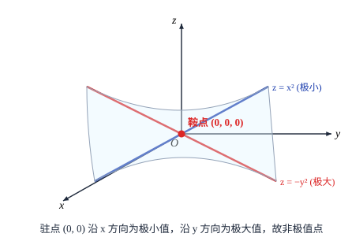
那么，要加上什么条件才能保证驻点是极值点呢？我们先对二元函数进行讨论．
设 $(x_0, y_0)$ 是二元函数 $f(x, y)$ 的驻点，且 $f$ 在 $(x_0, y_0)$ 的某邻域上具有二阶连续偏导数．记
$$ A = f_{xx}(x_0, y_0), \quad B = f_{xy}(x_0, y_0), \quad C = f_{yy}(x_0, y_0), $$由 Taylor 公式得到
$$ f(x_0 + \Delta x, y_0 + \Delta y) - f(x_0, y_0) = \frac{1}{2}\left[A(\Delta x)^2 + 2B\Delta x\Delta y + C(\Delta y)^2\right] + o(\Delta x^2 + \Delta y^2). $$令 $\rho = \sqrt{\Delta x^2 + \Delta y^2}, \xi = \frac{\Delta x}{\rho}, \eta = \frac{\Delta y}{\rho}$，上式即为
$$ f(x_0 + \Delta x, y_0 + \Delta y) - f(x_0, y_0) = \frac{\rho^2}{2}\left[q(\xi, \eta) + o(1)\right], $$其中二次型 $q(\xi, \eta) = A\xi^2 + 2B\xi\eta + C\eta^2$．由实二次型的性质，我们有如下判别定理：
设函数 $f(x, y)$ 在点 $(x_0, y_0)$ 的某邻域内具有二阶连续偏导数，且 $(x_0, y_0)$ 为其驻点．记 $A = f_{xx}(x_0, y_0), B = f_{xy}(x_0, y_0), C = f_{yy}(x_0, y_0), \Delta = AC - B^2$：
(1) 当 $\Delta > 0$ 时，$(x_0, y_0)$ 是极值点：若 $A > 0$，则为极小值点；若 $A < 0$，则为极大值点；
(2) 当 $\Delta < 0$ 时，$(x_0, y_0)$ 不是极值点（是鞍点，见图 12.6.3）；
(3) 当 $\Delta = 0$ 时，情况不定，需要进一步分析更高阶项或用其他方法判定．
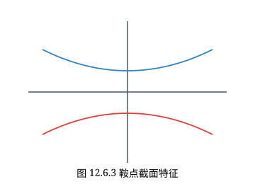
求函数 $f(x, y) = x^3 + y^3 - 3axy\ (a \ne 0)$ 的极值．
解 解方程组
$$ \begin{cases} f_x = 3x^2 - 3ay = 0, \\ f_y = 3y^2 - 3ax = 0, \end{cases} $$解得驻点为 $(0, 0)$ 和 $(a, a)$．二阶偏导数为 $A = f_{xx} = 6x, B = f_{xy} = -3a, C = f_{yy} = 6y$．
在 $(0, 0)$ 处，$\Delta = AC - B^2 = -9a^2 < 0$，故不是极值点．
在 $(a, a)$ 处，$\Delta = 36a^2 - 9a^2 = 27a^2 > 0$：当 $a > 0$ 时，$A = 6a > 0$，故为极小值点，极小值为 $f(a, a) = -a^3$；当 $a < 0$ 时，$A = 6a < 0$，为极大值点，极大值为 $f(a, a) = -a^3$．
讨论 $f(x, y) = x^2 - 2xy^2 + y^4 - y^5$ 的极值．
解 驻点为 $(0, 0)$．在 $(0, 0)$ 处 $A = 2, B = 0, C = 0$，$\Delta = 0$．但由于 $f(x, y) = (x - y^2)^2 - y^5$：在抛物线 $x = y^2$ 上，$f(y^2, y) = -y^5$，当 $y > 0$ 时为负，当 $y < 0$ 时为正，因此在 $(0, 0)$ 的任意邻域内 $f$ 均取正值和负值，故 $(0, 0)$ 不是极值点．
推广到 $n$ 元函数，记 $a_{ij} = f_{x_i x_j}(\boldsymbol{x}_0)$，二次型对应的矩阵为 Hessian 矩阵：
$$ \boldsymbol{H} = (f_{x_i x_j}(\boldsymbol{x}_0))_{n \times n}. $$若 Hessian 矩阵 $\boldsymbol{H}$ 是正定的（所有顺序主子式均大于 0），则 $\boldsymbol{x}_0$ 为极小值点；若 $\boldsymbol{H}$ 是负定的（顺序主子式正负相间），则 $\boldsymbol{x}_0$ 为极大值点；若 $\boldsymbol{H}$ 不定，则 $\boldsymbol{x}_0$ 不是极值点．
设 $f(x_1, x_2, \cdots, x_n) = \mathrm{e}^{-\frac{x_1^2 + x_2^2 + \cdots + x_n^2}{2}}$，讨论它的极值．
解 显然原点 $(0, 0, \cdots, 0)$ 是惟一驻点，Hessian 矩阵为负定矩阵，在原点取得最大值（极大值）$1$．
2. 函数的最值
在以 $O(0, 0), A(a, 0), B(0, b)$ 为顶点的三角形闭区域上（见图 12.6.4），求一点使它到三顶点的距离平方和最小．
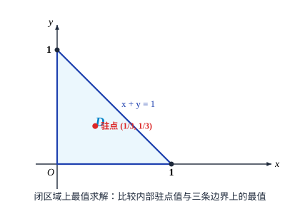
解 目标函数为 $z = x^2 + y^2 + (x - a)^2 + y^2 + x^2 + (y - b)^2$．内部驻点为重心 $\left(\frac{a}{3}, \frac{b}{3}\right)$，经边界比较知在重心处取得最小值．
用一块宽度为 $a$ 的长铁皮折成等腰梯形截面的水槽（见图 12.6.5）．问采用怎样的折法才能使截面积最大？
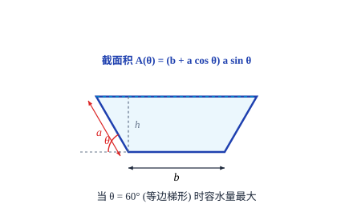
解 设折起边长为 $x$，折角为 $\alpha$．截面积为 $A(x, \alpha) = (a - 2x)x\sin\alpha + x^2 \sin\alpha\cos\alpha$．解驻点得 $x = \frac{a}{3}, \alpha = \frac{\pi}{3}$（$60^\circ$）时截面积最大．
证明不等式：当 $x \ge 1, y \ge 0$ 时，成立 $xy \le x\ln x - x + \mathrm{e}^y$．
3. 最小二乘法
通过观察知道，红铃虫的产卵数与温度有关，实验观测数据如下表：
| 温度 $x$ | 21 | 23 | 25 | 27 | 29 | 32 | 35 |
|---|---|---|---|---|---|---|---|
| 产卵数 $y$ | 7 | 11 | 21 | 24 | 66 | 105 | 325 |
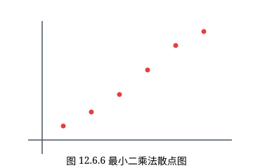
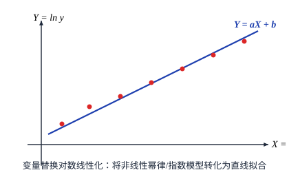
要确定直线 $y = ax + b$，使得所有观测值 $y_i$ 与函数值 $ax_i + b$ 之差的平方和
$$ Q(a, b) = \sum_{i=1}^n (y_i - ax_i - b)^2 $$最小．令 $\frac{\partial Q}{\partial a} = 0, \frac{\partial Q}{\partial b} = 0$，解正规方程组即得最佳拟合参数 $a, b$．
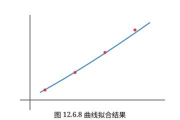
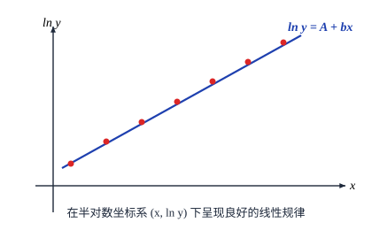
4. “牧童”经济模型
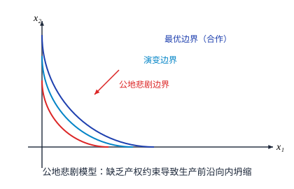
每个牧民的最优饲养量满足边际收益等于边际成本，但全社会总的最优饲养量由于外部负效应小于个体总和，从而产生著名的“公地悲剧”（Tragedy of the Commons）．
- 讨论下列函数的极值：
(1) $f(x, y) = x^4 + 2y^4 - 2x^2 - 12y^2 + 6$；(2) $f(x, y) = x^4 + y^4 - x^2 - 2xy - y^2$；(3) $f(x, y, z) = x^2 + y^2 - z^2$；(4) $f(x, y) = (y - x^2)(y - x^4)$；(5) $f(x, y) = xy + \frac{a^3}{x} + \frac{b^3}{y}$，其中常数 $a > 0, b > 0$；(6) $f(x, y, z) = x + \frac{y}{x} + \frac{z}{y} + \frac{2}{z}\ (x, y, z > 0)$．
- 设 $f(x, y, z) = x^2 + 3y^2 + 2z^2 - 2xy + 2xz$，证明：函数 $f$ 的最小值为 $0$．
- 证明：函数 $f(x, y) = (1 + \mathrm{e}^y)\cos x - y\mathrm{e}^y$ 有无穷多个极大值点，但无极小值点．
- 求函数 $f(x, y) = \sin x + \sin y - \sin(x+y)$ 在闭区域 $D = \{(x, y) \mid x \ge 0, y \ge 0, x+y \le 2\pi\}$ 上的最大值与最小值．
- 在 $[0, 1]$ 上用怎样的直线 $\xi = ax + b$ 来代替曲线 $y = x^2$，才能使它为在平方误差的积分 $J(a, b) = \int_0^1 (y - \xi)^2 \mathrm{d}x$ 极小意义下的最佳近似．
- 在半径为 $R$ 的圆上，求内接三角形的面积最大者．
- 要做一圆柱形帐幕，并给它加一个圆锥形的顶．问：在体积为定值时，圆柱的半径 $R$，高 $H$，及圆锥的高 $h$ 满足什么关系时，所用的布料最省？
- 求由方程 $x^2 + 2xy + 2y^2 = 1$ 所确定的隐函数 $y = y(x)$ 的极值．
- 求由方程 $2x^2 + 2y^2 + z^2 + 8yz - z + 8 = 0$ 所确定的隐函数 $z = z(x, y)$ 的极值．
- 在 $Oxy$ 平面上求一点，使它到三直线 $x = 0, y = 0$ 和 $x + 2y - 16 = 0$ 的距离的平方和最小．
- 证明：圆的所有外切三角形中，以正三角形的面积为最小．
- 证明：圆的所有内接 $n$ 边形中，以正 $n$ 边形的面积为最大．
- 证明：当 $0 < x < 1, 0 < y < +\infty$ 时，成立不等式 $yx^y(1 - x) < \mathrm{e}^{-1}$．
- 某养殖场饲养两种鱼，若甲种鱼放养 $x$（万尾），乙种鱼放养 $y$（万尾），收获时两种鱼的收获量分别为 $(3 - \alpha x - \beta y)x$ 和 $(4 - \beta x - 2\alpha y)y\ (\alpha > \beta > 0)$，求使产鱼总量最大的放养数．
（在教师的指导下，编制程序在电子计算机上实际计算）
- 某种机器零件的加工需经两道工序，$x$ 表示零件在第一道工序中出现的疵点数，$y$ 表示在第二道工序中出现的疵点数．某日测得 8 个零件的 $x$ 与 $y$ 如下：
$x$ 0 1 3 6 8 5 4 2 $y$ 1 2 2 4 4 3 3 2 画出这些数据的散点图，找出它们之间关系的经验公式 $y = ax + b$，并画出拟合曲线．
- 某品种大豆的脂肪含量 $x$ (%) 与蛋白质含量 $y$ (%) 的测定结果如下表所示：
$x$ 16.5 17.5 18.5 19.5 20.5 21.5 22.5 23.5 24.5 $y$ 43.5 42.6 41.8 40.6 40.3 38.7 37.2 36.0 34.0 画出这些数据的散点图，找出它们之间关系的经验公式，并画出拟合曲线．
- 某种产品加工前的含水率 (%) 与加工后含水率 (%) 的测试结果如下表：
测试编号 $i$ 1 2 3 4 5 6 7 8 9 10 加工前含水率 $x_i$ 16.7 18.2 18.0 17.9 17.4 16.6 17.2 17.7 15.7 17.1 加工后含水率 $y_i$ 17.5 18.7 18.6 18.5 18.2 17.5 18.0 18.2 16.9 17.8 试确定加工后的含水率 $y$ 与加工前含水率 $x$ 的关系．
- 盛钢水的钢包，在使用过程中由于钢水对耐火材料的侵蚀，容积会不断增大．在生产过程中，积累了使用次数与钢包容积增大量之间的以下 16 组数据．画出这些数据的散点图，找出使用次数 $x$ 与钢包容积增大量 $y$ 之间的关系，并画出拟合曲线．
$x$ 2 3 4 5 6 7 8 9 $y$ 6.42 8.20 9.58 9.50 9.70 10.00 9.93 9.99 $x$ 10 11 12 13 14 15 16 17 $y$ 10.50 10.59 10.60 10.63 10.60 10.90 10.76 10.80 （提示：假设 $y = ax^2 + bx + c$．）
- 在研究化学反应速度时，得到下列数据．找出实验开始后的时间 $t$ 与反应物的量 $m$ 之间的关系，并画出拟合曲线．
$t$ 3 6 9 12 15 18 21 24 $m$ 57.6 41.5 31.2 22.9 15.4 12.1 8.9 6.4 （提示：$m$ 与 $t$ 的关系为 $m = a\mathrm{e}^{bt}$．）
§7 条件极值问题与 Lagrange 乘数法
Lagrange 乘数法
在考虑函数的极值或最值问题时，经常需要对函数的自变量附加一定的条件．例如，求原点到直线
$$ \begin{cases} x + y + z = 1, \\ x + 2y + 3z = 6 \end{cases} $$的距离，就是在限制条件 $x + y + z = 1$ 和 $x + 2y + 3z = 6$ 的情况下，计算函数 $f(x, y, z) = \sqrt{x^2 + y^2 + z^2}$ 的最小值．这就是所谓的条件极值问题．
以三元函数为例，条件极值问题的提法是：求目标函数
$$ f(x, y, z) $$在约束条件
$$ \begin{cases} G(x, y, z) = 0, \\ H(x, y, z) = 0 \end{cases} $$下的极值．
在本节中假定 $f, G, H$ 具有连续偏导数，且 Jacobi 矩阵
$$ J = \begin{pmatrix} \frac{\partial G}{\partial x} & \frac{\partial G}{\partial y} & \frac{\partial G}{\partial z} \\ \frac{\partial H}{\partial x} & \frac{\partial H}{\partial y} & \frac{\partial H}{\partial z} \end{pmatrix} $$在满足约束条件的点处是满秩的，即 $\mathrm{rank}\, J = 2$．
先考虑取到条件极值的必要条件．上述约束条件实际上是空间曲线的方程．设曲线上一点 $(x_0, y_0, z_0)$ 为条件极值点，由于在该点 $\mathrm{rank}\, J = 2$，不妨假设在 $(x_0, y_0, z_0)$ 点
$$ \frac{D(G, H)}{D(y, z)} \ne 0, $$则由隐函数存在定理，在 $(x_0, y_0, z_0)$ 附近由该方程可以惟一确定具有连续偏导数的函数
$$ y = y(x), \quad z = z(x), \quad x \in O(x_0, \delta), $$它是这个曲线方程的参数形式．
将它们代入目标函数，原问题就转化为函数
$$ \varphi(x) = f(x, y(x), z(x)), \quad x \in O(x_0, \delta) $$的无条件极值问题．$x_0$ 是函数 $\varphi(x)$ 的极值点，因此 $\varphi'(x_0) = 0$，即
$$ f_x(x_0, y_0, z_0) + f_y(x_0, y_0, z_0)\frac{\mathrm{d}y}{\mathrm{d}x} + f_z(x_0, y_0, z_0)\frac{\mathrm{d}z}{\mathrm{d}x} = 0. $$这说明向量 $\mathrm{grad}\, f(x_0, y_0, z_0) = (f_x(x_0, y_0, z_0), f_y(x_0, y_0, z_0), f_z(x_0, y_0, z_0))$ 与向量 $\boldsymbol{\tau} = \left(1, \frac{\mathrm{d}y}{\mathrm{d}x}, \frac{\mathrm{d}z}{\mathrm{d}x}\right)$ 正交，即与曲线在 $(x_0, y_0, z_0)$ 点的切向量正交，因此 $\mathrm{grad}\, f(x_0, y_0, z_0)$ 可看作是曲线在 $(x_0, y_0, z_0)$ 点处的法平面上的向量．由定理 12.5.1，这个法平面是由 $\mathrm{grad}\, G(x_0, y_0, z_0)$ 与 $\mathrm{grad}\, H(x_0, y_0, z_0)$ 张成的，因此 $\mathrm{grad}\, f(x_0, y_0, z_0)$ 可以由 $\mathrm{grad}\, G(x_0, y_0, z_0)$ 和 $\mathrm{grad}\, H(x_0, y_0, z_0)$ 线性表出，或者说，存在常数 $\lambda_0, \mu_0$，使得
$$ \mathrm{grad}\, f(x_0, y_0, z_0) = \lambda_0 \mathrm{grad}\, G(x_0, y_0, z_0) + \mu_0 \mathrm{grad}\, H(x_0, y_0, z_0), $$这就是点 $(x_0, y_0, z_0)$ 为条件极值点的必要条件．
将这个方程按分量写开就是
$$ \begin{cases} f_x(x_0, y_0, z_0) - \lambda_0 G_x(x_0, y_0, z_0) - \mu_0 H_x(x_0, y_0, z_0) = 0, \\ f_y(x_0, y_0, z_0) - \lambda_0 G_y(x_0, y_0, z_0) - \mu_0 H_y(x_0, y_0, z_0) = 0, \\ f_z(x_0, y_0, z_0) - \lambda_0 G_z(x_0, y_0, z_0) - \mu_0 H_z(x_0, y_0, z_0) = 0. \end{cases} $$于是，如果我们构造 Lagrange 函数
$$ L(x, y, z, \lambda, \mu) = f(x, y, z) - \lambda G(x, y, z) - \mu H(x, y, z) $$（$\lambda, \mu$ 称为 Lagrange 乘数），则条件极值点就在方程组
$$ \begin{cases} L_x = f_x - \lambda G_x - \mu H_x = 0, \\ L_y = f_y - \lambda G_y - \mu H_y = 0, \\ L_z = f_z - \lambda G_z - \mu H_z = 0, \\ G = 0, \\ H = 0 \end{cases} $$的所有解 $(x_0, y_0, z_0, \lambda_0, \mu_0)$ 所对应的点 $(x_0, y_0, z_0)$ 中．用这种方法来求可能的条件极值点的方法，称为 Lagrange 乘数法．
作为一个例子，现在用 Lagrange 乘数法来解决本节开始提出的问题，即求函数
$$ F(x, y, z) = x^2 + y^2 + z^2 $$在约束条件
$$ \begin{cases} x + y + z = 1, \\ x + 2y + 3z = 6 \end{cases} $$下的最小值（最小值的平方根就是距离）．为此，作 Lagrange 函数
$$ L(x, y, z, \lambda, \mu) = x^2 + y^2 + z^2 - \lambda(x + y + z - 1) - \mu(x + 2y + 3z - 6), $$在方程组
$$ \begin{cases} L_x = 2x - \lambda - \mu = 0, \\ L_y = 2y - \lambda - 2\mu = 0, \\ L_z = 2z - \lambda - 3\mu = 0, \\ x + y + z - 1 = 0, \\ x + 2y + 3z - 6 = 0 \end{cases} $$中，把方程组中的第一、第二和第三式相加，再利用第四式得
$$ 3\lambda + 6\mu = 2. $$把第一式、第二式的两倍和第三式的三倍相加，再利用第五式得
$$ 6\lambda + 14\mu = 12. $$从以上两个方程解得
$$ \lambda = -\frac{22}{3}, \quad \mu = 4, $$由此可得惟一的可能极值点
$$ x = -\frac{5}{3}, \quad y = \frac{1}{3}, \quad z = \frac{7}{3}. $$由于点到直线的距离，即这个问题的最小值必定存在，因此这个惟一的可能极值点 $\left(-\frac{5}{3}, \frac{1}{3}, \frac{7}{3}\right)$ 必是最小值点．也就是说，原点到直线
$$ \begin{cases} x + y + z = 1, \\ x + 2y + 3z = 6 \end{cases} $$的距离为
$$ \frac{5}{\sqrt{3}}. $$一般地，考虑目标函数 $f(x_1, x_2, \dots, x_n)$ 在 $m$ 个约束条件
$$ g_i(x_1, x_2, \dots, x_n) = 0 \quad (i = 1, 2, \dots, m; m < n) $$下的极值，这里 $f, g_i \; (i = 1, 2, \dots, m)$ 具有连续偏导数，且 Jacobi 矩阵
$$ J = \begin{pmatrix} \frac{\partial g_1}{\partial x_1} & \frac{\partial g_1}{\partial x_2} & \cdots & \frac{\partial g_1}{\partial x_n} \\ \frac{\partial g_2}{\partial x_1} & \frac{\partial g_2}{\partial x_2} & \cdots & \frac{\partial g_2}{\partial x_n} \\ \vdots & \vdots & & \vdots \\ \frac{\partial g_m}{\partial x_1} & \frac{\partial g_m}{\partial x_2} & \cdots & \frac{\partial g_m}{\partial x_n} \end{pmatrix} $$在满足约束条件的点处是满秩的，即 $\mathrm{rank}\, J = m$．那么我们有下述类似的结论：
设点 $\boldsymbol{x}_0 = (x_1^0, x_2^0, \dots, x_n^0)$ 为满足上述约束条件的条件极值点，则必存在 $m$ 个常数 $\lambda_1, \lambda_2, \dots, \lambda_m$，使得在 $\boldsymbol{x}_0$ 点成立
$$ \mathrm{grad}\, f = \lambda_1 \mathrm{grad}\, g_1 + \lambda_2 \mathrm{grad}\, g_2 + \cdots + \lambda_m \mathrm{grad}\, g_m. $$于是可以将 Lagrange 乘数法推广到一般情形．同样地构造 Lagrange 函数
$$ L(x_1, x_2, \dots, x_n, \lambda_1, \dots, \lambda_m) = f(x_1, x_2, \dots, x_n) - \sum_{i=1}^m \lambda_i g_i(x_1, x_2, \dots, x_n), $$那么条件极值点就在方程组
$$ \begin{cases} \frac{\partial L}{\partial x_k} = \frac{\partial f}{\partial x_k} - \sum_{i=1}^m \lambda_i \frac{\partial g_i}{\partial x_k} = 0, \quad (k = 1, 2, \dots, n) \\ g_l = 0 \quad (l = 1, 2, \dots, m) \end{cases} \qquad (*) $$的所有解 $(x_1, x_2, \dots, x_n, \lambda_1, \lambda_2, \dots, \lambda_m)$ 所对应的点 $(x_1, x_2, \dots, x_n)$ 中．
判断如上所得的点是否为极值点有以下的一个充分条件，我们不加证明地给出，请有兴趣的读者将证明补上．
设点 $\boldsymbol{x}_0 = (x_1^0, x_2^0, \dots, x_n^0)$ 及 $m$ 个常数 $\lambda_1, \lambda_2, \dots, \lambda_m$ 满足方程组 $(*)$，则当方阵
$$ \left( \frac{\partial^2 L}{\partial x_k \partial x_l} (\boldsymbol{x}_0, \lambda_1, \lambda_2, \dots, \lambda_m) \right)_{n \times n} $$为正定（负定）矩阵时，$\boldsymbol{x}_0$ 为满足约束条件的条件极小（大）值点，因此 $f(\boldsymbol{x}_0)$ 为满足约束条件的条件极小（大）值．
注意，当这个定理中的方阵为不定时，并不能说明 $f(\boldsymbol{x}_0)$ 不是极值．例如，在求函数 $f(x, y, z) = x^2 + y^2 - z^2$ 在约束条件 $z = 0$ 下的极值时，构造 Lagrange 函数 $L(x, y, z) = x^2 + y^2 - z^2 - \lambda z$，并解方程组
$$ \begin{cases} L_x = 2x = 0, \\ L_y = 2y = 0, \\ L_z = -2z - \lambda = 0, \\ z = 0 \end{cases} $$得 $x = y = z = \lambda = 0$．而在 $(0, 0, 0, 0)$ 点，方阵
$$ \begin{pmatrix} L_{xx} & L_{xy} & L_{xz} \\ L_{yx} & L_{yy} & L_{yz} \\ L_{zx} & L_{zy} & L_{zz} \end{pmatrix} = \begin{pmatrix} 2 & 0 & 0 \\ 0 & 2 & 0 \\ 0 & 0 & -2 \end{pmatrix} $$是不定的．但在约束条件 $z = 0$ 下，$f(x, y, z) = x^2 + y^2 \ge f(0, 0, 0) = 0$，即 $f(0, 0, 0)$ 是条件极小值．
在实际问题中往往遇到的是求最值问题，这时可以根据问题本身的性质判定最值的存在性（如前面的例子）．这样的话，只要把用 Lagrange 乘数法所解得的点的函数值加以比较，最大的（最小的）就是所考虑问题的最大值（最小值）．
要制造一个容积为 $a\,\mathrm{m}^3$ 的无盖长方形水箱，问这个水箱的长、宽、高为多少米时，用料最省？
解 设水箱的长为 $x$、宽为 $y$、高为 $z$（单位：$\mathrm{m}$），那么问题就变成在水箱容积
$$ xyz = a $$的约束条件下，求水箱的表面积
$$ S(x, y, z) = xy + 2xz + 2yz $$的最小值．
作 Lagrange 函数
$$ L(x, y, z, \lambda) = xy + 2xz + 2yz - \lambda(xyz - a), $$从方程组
$$ \begin{cases} L_x = y + 2z - \lambda yz = 0, \\ L_y = x + 2z - \lambda xz = 0, \\ L_z = 2x + 2y - \lambda xy = 0, \\ xyz - a = 0 \end{cases} $$得到惟一解
$$ x = \sqrt[3]{2a}, \quad y = \sqrt[3]{2a}, \quad z = \frac{\sqrt[3]{2a}}{2}. $$由于问题的最小值必定存在，因此它就是最小值点．也就是说，当水箱的底为边长是 $\sqrt[3]{2a}\,\mathrm{m}$ 的正方形，高为 $\sqrt[3]{2a}/2\,\mathrm{m}$ 时，用料最省．
求平面 $x + y + z = 0$ 与椭球面 $x^2 + y^2 + 4z^2 = 1$ 相交而成的椭圆的面积（见图 12.7.1）．
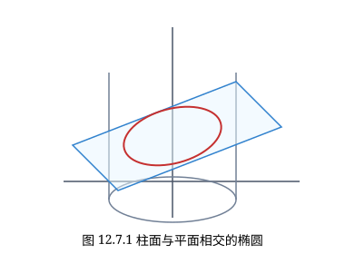
解 椭圆的面积为 $\pi ab$，其中 $a, b$ 分别为椭圆的两个半轴，因为椭圆的中心在原点，所以 $a, b$ 分别是椭圆上的点到原点的最大距离与最小距离．
于是，可以将问题表述为求
$$ f(x, y, z) = x^2 + y^2 + z^2 $$在约束条件
$$ \begin{cases} x + y + z = 0, \\ x^2 + y^2 + 4z^2 = 1 \end{cases} $$下的最大值与最小值．
作 Lagrange 函数
$$ L(x, y, z, \lambda, \mu) = x^2 + y^2 + z^2 - \lambda(x + y + z) - \mu(x^2 + y^2 + 4z^2 - 1), $$得到相应的方程组
$$ \begin{cases} L_x = 2(1 - \mu)x - \lambda = 0, \\ L_y = 2(1 - \mu)y - \lambda = 0, \\ L_z = 2(1 - 4\mu)z - \lambda = 0, \\ x + y + z = 0, \\ x^2 + y^2 + 4z^2 - 1 = 0. \end{cases} $$解法一 将以上方程组中的第一式乘以 $1 - 4\mu$，第二式乘以 $1 - 4\mu$，第三式乘以 $1 - \mu$ 后相加，得到
$$ 3\lambda(1 - 3\mu) = 0, $$因此 $\lambda = 0$ 或 $1 - 3\mu = 0$．
分两种情况讨论：
(1) 当 $\lambda = 0$ 时，将以上方程组中的前三个式子相加得
$$ 6\mu z = 0. $$若 $\mu = 0$，由前三式得 $x = y = z = 0$，与第五式矛盾；故 $z = 0$．再由第四式得 $y = -x$，代入第五式得 $2x^2 = 1$，即 $x = \pm \frac{\sqrt{2}}{2}, y = \mp \frac{\sqrt{2}}{2}$．这两个点为 $\left(\frac{\sqrt{2}}{2}, -\frac{\sqrt{2}}{2}, 0\right)$ 与 $\left(-\frac{\sqrt{2}}{2}, \frac{\sqrt{2}}{2}, 0\right)$．
$f$ 在这两个点的值都是 $1$．
(2) 当 $1 - 3\mu = 0$ 时，从方程组中的前三个式子得到
$$ x = \frac{3}{4}\lambda, \quad y = \frac{3}{4}\lambda, \quad z = -\frac{3}{2}\lambda. $$它对应 $(x, y, z)$ 的两组解为
$$ \left(-\frac{\sqrt{2}}{6}, -\frac{\sqrt{2}}{6}, \frac{\sqrt{2}}{3}\right) \quad \text{和} \quad \left(\frac{\sqrt{2}}{6}, \frac{\sqrt{2}}{6}, -\frac{\sqrt{2}}{3}\right). $$$f$ 在这两个点的值都是 $\frac{1}{3}$．
由于连续函数 $f(x, y, z) = x^2 + y^2 + z^2$ 在紧集
$$ \begin{cases} x + y + z = 0, \\ x^2 + y^2 + 4z^2 = 1 \end{cases} $$上的最大值与最小值必存在，于是立即得到该椭圆的半长轴为 $1$，半短轴为 $\frac{1}{\sqrt{3}}$，面积为 $\frac{\pi}{\sqrt{3}}$．
解法二 将以上方程组中的第一式乘以 $x$，第二式乘以 $y$，第三式乘以 $z$ 后相加，再利用 $x + y + z = 0$ 和 $x^2 + y^2 + 4z^2 = 1$ 得到
$$ f(x, y, z) = \mu. $$这说明椭圆的半长轴与半短轴的平方包含在方程组关于 $\mu$ 的解中，所以问题转化为求 $\mu$ 的值．
如解法一得到 $3\lambda(1 - 3\mu) = 0$，也分两种情况：
(1) 当 $1 - 3\mu = 0$ 时，$\mu = \frac{1}{3}$；
(2) 当 $\lambda = 0$ 时，原方程组就是
$$ \begin{cases} (1 - \mu)x = 0, \\ (1 - \mu)y = 0, \\ (1 - 4\mu)z = 0, \\ x + y + z = 0, \\ x^2 + y^2 + 4z^2 - 1 = 0. \end{cases} $$此时 $\mu = 1$（否则从以上方程组的第一、第二和第四式得到 $x = y = z = 0$，这不是椭圆上的点）．
于是同样得到，该椭圆的半长轴为 $1$，半短轴为 $\frac{1}{\sqrt{3}}$，面积为 $\frac{\pi}{\sqrt{3}}$．
许多实际问题并不需要完全解出方程组来求得最值，解法二是一种常用的方法，可以使解决问题的方法与计算简化．
求函数 $f(x, y) = ax^2 + 2bxy + cy^2 \; (b^2 - ac < 0; a, b, c > 0)$ 在闭区域 $D = \{(x, y) \mid x^2 + y^2 \le 1\}$ 上的最大值和最小值．
解 首先考察函数 $f$ 在 $D$ 的内部 $\{(x, y) \mid x^2 + y^2 < 1\}$ 的极值，这是无条件极值问题．
为此解线性方程组
$$ \begin{cases} f_x = 2ax + 2by = 0, \\ f_y = 2bx + 2cy = 0. \end{cases} $$由假设 $b^2 - ac < 0$ 知道方程组的系数行列式不等于零，因此只有零解 $x = 0, y = 0$，即 $(0, 0)$ 点是驻点．易计算在 $(0, 0)$ 点
$$ f_{xx}(0, 0) = 2a, \quad f_{xy}(0, 0) = 2b, \quad f_{yy}(0, 0) = 2c, $$因此 $f_{xx}(0, 0)f_{yy}(0, 0) - f_{xy}^2(0, 0) = 4(ac - b^2) > 0$．而 $f_{xx} > 0$，所以 $(0, 0)$ 点是函数 $f$ 的极小值点，极小值为 $f(0, 0) = 0$．
再考察函数 $f$ 在 $D$ 的边界 $\{(x, y) \mid x^2 + y^2 = 1\}$ 上的极值，这是条件极值问题．为此作 Lagrange 函数
$$ L(x, y, \lambda) = ax^2 + 2bxy + cy^2 - \lambda(x^2 + y^2 - 1), $$并得方程组
$$ \begin{cases} (a - \lambda)x + by = 0, \\ bx + (c - \lambda)y = 0, \\ x^2 + y^2 - 1 = 0. \end{cases} $$将方程组中的第一式乘以 $x$，第二式乘以 $y$ 后相加，再用第三式代入就得到
$$ f(x, y) = ax^2 + 2bxy + cy^2 = \lambda(x^2 + y^2) = \lambda, $$这说明 $f(x, y)$ 在 $\{(x, y) \mid x^2 + y^2 = 1\}$ 上的极大值与极小值包含在方程组关于 $\lambda$ 的解中．下面来求 $\lambda$ 的值．
由联立方程组中的 $x^2 + y^2 - 1 = 0$，可知二元一次方程组
$$ \begin{cases} (a - \lambda)x + by = 0, \\ bx + (c - \lambda)y = 0 \end{cases} $$有非零解，因此系数行列式等于零，即
$$ \lambda^2 - (a + c)\lambda + ac - b^2 = 0. $$解这个关于 $\lambda$ 的方程，得到
$$ \lambda = \frac{1}{2}\left[ (a + c) \pm \sqrt{(a + c)^2 - 4(ac - b^2)} \right] $$（注意根号中 $(a + c)^2 - 4(ac - b^2) = (a - c)^2 + 4b^2 > 0$）．
由于连续函数 $f$ 在紧集 $\{(x, y) \mid x^2 + y^2 = 1\}$ 上必可取到最大值与最小值，因此 $f$ 在 $D$ 的边界上的最大值为
$$ \lambda_1 = \frac{1}{2}\left[ (a + c) + \sqrt{(a + c)^2 - 4(ac - b^2)} \right]; $$最小值为
$$ \lambda_2 = \frac{1}{2}\left[ (a + c) - \sqrt{(a + c)^2 - 4(ac - b^2)} \right]. $$再与 $f$ 在 $D$ 内部的极值 $f(0, 0) = 0$ 比较，就得到 $f$ 在 $D$ 上的最大值为
$$ \max\{\lambda_1, 0\} = \frac{1}{2}\left[ (a + c) + \sqrt{(a + c)^2 - 4(ac - b^2)} \right]; $$最小值为
$$ \min\{\lambda_2, 0\} = 0. $$设 $a > 0, \alpha_i > 0 \; (i = 1, 2, \dots, n)$．求 $n$ 元函数
$$ f(x_1, x_2, \dots, x_n) = x_1^{\alpha_1} x_2^{\alpha_2} \cdots x_n^{\alpha_n} $$在约束条件 $x_1 + x_2 + \cdots + x_n = a \; (x_i > 0, i = 1, 2, \dots, n)$ 下的最大值．
解 作辅助函数
$$ g(x_1, x_2, \dots, x_n) = \ln f(x_1, x_2, \dots, x_n) = \alpha_1 \ln x_1 + \alpha_2 \ln x_2 + \cdots + \alpha_n \ln x_n, $$因为函数 $\ln u$ 严格单调，所以只要考虑函数 $g$ 的极值就可以得到 $f$ 的极值．
作 Lagrange 函数
$$ L = \alpha_1 \ln x_1 + \alpha_2 \ln x_2 + \cdots + \alpha_n \ln x_n - \lambda(x_1 + x_2 + \cdots + x_n - a). $$由极值的必要条件得到
$$ \begin{cases} \frac{\partial L}{\partial x_i} = \frac{\alpha_i}{x_i} - \lambda = 0, \quad i = 1, 2, \dots, n, \\ x_1 + x_2 + \cdots + x_n = a. \end{cases} $$由前 $n$ 个方程得到 $x_i = \frac{\alpha_i}{\lambda}, \; i = 1, 2, \dots, n$，再代入最后一个方程得到
$$ \lambda = \frac{\alpha_1 + \alpha_2 + \cdots + \alpha_n}{a}, $$所以
$$ x_i^0 = \frac{a\alpha_i}{\alpha_1 + \alpha_2 + \cdots + \alpha_n}, \quad i = 1, 2, \dots, n. $$于是 $(x_1^0, x_2^0, \dots, x_n^0)$ 是函数 $g$ 的惟一可能条件极值点．由于
$$ \left( \frac{\partial^2 L}{\partial x_i \partial x_j} \right)_{n \times n} = \begin{pmatrix} -\frac{\alpha_1}{x_1^2} & 0 & \cdots & 0 \\ 0 & -\frac{\alpha_2}{x_2^2} & \cdots & 0 \\ \vdots & \vdots & \ddots & \vdots \\ 0 & 0 & \cdots & -\frac{\alpha_n}{x_n^2} \end{pmatrix} $$为负定矩阵，由定理 12.7.2 可知 $(x_1^0, x_2^0, \dots, x_n^0)$ 为 $g$ 的条件极大值点．它也是 $f$ 的惟一条件极大值点，显然它就是 $f$ 的条件最大值点．于是 $f$ 在约束条件下的最大值为
$$ f(x_1^0, x_2^0, \dots, x_n^0) = \left( \frac{a}{\alpha_1 + \alpha_2 + \cdots + \alpha_n} \right)^{\alpha_1 + \alpha_2 + \cdots + \alpha_n} \alpha_1^{\alpha_1} \alpha_2^{\alpha_2} \cdots \alpha_n^{\alpha_n}. $$由例 12.7.4 可以得到，当 $a = 1$，即当 $x_1 + x_2 + \cdots + x_n = 1$
及 $x_i > 0 \; (i = 1, 2, \dots, n)$ 时成立
$$ x_1^{\alpha_1} x_2^{\alpha_2} \cdots x_n^{\alpha_n} \le \left( \frac{1}{\alpha_1 + \alpha_2 + \cdots + \alpha_n} \right)^{\alpha_1 + \alpha_2 + \cdots + \alpha_n} \alpha_1^{\alpha_1} \alpha_2^{\alpha_2} \cdots \alpha_n^{\alpha_n}. $$对于任意正数 $y_1, y_2, \dots, y_n$，只要令
$$ x_i = \frac{y_i}{y_1 + y_2 + \cdots + y_n} \quad (i = 1, 2, \dots, n), $$就得到
$$ \prod_{i=1}^n \left( \frac{y_i}{y_1 + y_2 + \cdots + y_n} \right)^{\alpha_i} \le \prod_{i=1}^n \left( \frac{\alpha_i}{\alpha_1 + \alpha_2 + \cdots + \alpha_n} \right)^{\alpha_i}. $$特别地，当 $\alpha_1 = \alpha_2 = \cdots = \alpha_n = 1$ 时，就有
$$ \prod_{i=1}^n \left( \frac{y_i}{y_1 + y_2 + \cdots + y_n} \right) \le \left( \frac{1}{n} \right)^n, $$即
$$ \sqrt[n]{y_1 y_2 \cdots y_n} \le \frac{y_1 + y_2 + \cdots + y_n}{n}, $$这就是熟知的平均值不等式．
一个最优价格模型
在生产和销售商品的过程中，销售价格上涨将使厂家在单位商品上获得的利润增加，但同时也使消费者的购买欲望下降，造成销售量下降，导致厂家削减产量．但在规模生产中，单位商品的生产成本是随着产量的增加而降低的，因此销售量、成本与售价是相互影响的．厂家要选择合理的销售价格才能获得最大利润，这个价格称为最优价格．
例如，一家电视机厂在对某种型号电视机的销售价格决策时面对如下数据：
(1) 根据市场调查，当地对该种电视机的年需求量为 100 万台；
(2) 去年该厂共售出 10 万台，每台售价为 4000 元；
(3) 仅生产 1 台电视机的成本为 4000 元；但在批量生产后，生产 1 万台时成本降低为每台 3000 元．
问：在生产方式不变的情况下，今年的最优销售价格是多少？
下面先建立一个一般的数学模型．设这种电视机的总销售量为 $x$，每台生产成本为 $c$，销售价格为 $p$，那么厂家的利润为
$$ P = (p - c)x. $$根据市场预测，销售量与销售价格之间有下面的关系：
$$ x = M\mathrm{e}^{-\alpha p}, \quad M > 0, \alpha > 0, $$这里 $M$ 为市场的最大需求量，$\alpha$ 是价格系数（这个公式也反映出，售价越高，销售量越少）．同时，生产部门对每台电视机的成本有如下测算：
$$ c = c_0 - k \ln x, \quad c_0, k, x > 0, $$这里 $c_0$ 是只生产 1 台电视机时的成本，$k$ 是规模系数（这也反映出，产量越大即销售量越大，成本越低）．
于是，问题化为求利润函数
$$ P(c, p, x) = (p - c)x $$在约束条件
$$ \begin{cases} x = M\mathrm{e}^{-\alpha p}, \\ c = c_0 - k \ln x \end{cases} $$下的极值问题．
作 Lagrange 函数
$$ L(c, p, x, \lambda, \mu) = (p - c)x - \lambda(x - M\mathrm{e}^{-\alpha p}) - \mu(c - c_0 + k \ln x), $$就得到最优化条件
$$ \begin{cases} L_c = -x - \mu = 0, \\ L_p = x - \lambda M \alpha \mathrm{e}^{-\alpha p} = 0, \\ L_x = p - c - \lambda - \frac{\mu k}{x} = 0, \\ x - M\mathrm{e}^{-\alpha p} = 0, \\ c - c_0 + k \ln x = 0. \end{cases} $$由方程组中第二和第四式得到
$$ \lambda \alpha = 1, \quad \text{即} \quad \lambda = \frac{1}{\alpha}. $$将第四式代入第五式得到
$$ c = c_0 - k(\ln M - \alpha p). $$再由第一式知
$$ \mu = -x. $$将所得的这三个式子代入方程组中第三式，得到
$$ p - (c_0 - k(\ln M - \alpha p)) - \frac{1}{\alpha} + k = 0, $$由此解得最优价格
$$ p^* = \frac{c_0 - k \ln M + \frac{1}{\alpha} - k}{1 - \alpha k}. $$只要确定了规模系数 $k$ 与价格系数 $\alpha$，问题就迎刃而解了．
现在利用这个模型解决本段开始提出的问题．此时 $M = 1\,000\,000, c_0 = 4000$．由于去年该厂共售出 10 万台，每台售价为 4000 元，因此得到
$$ \alpha = \frac{\ln M - \ln x}{p} = \frac{\ln 1\,000\,000 - \ln 100\,000}{4\,000} \approx 0.000\,58; $$又由于生产 1 万台时成本就降低每台 3000 元，因此得到
$$ k = \frac{c_0 - c}{\ln x} = \frac{4\,000 - 3\,000}{\ln 10\,000} \approx 108.57. $$将这些数据代入 $p^*$ 的表达式，就得到今年的最优价格应为
$$ p^* = \frac{4\,000 - 108.57 \ln 1\,000\,000 + \frac{1}{0.000\,58} - 108.57}{1 - 0.000\,58 \times 108.57} \approx 4392 \text{（元/台）}. $$-
求下列函数的条件极值：
- $f(x, y) = xy$，约束条件为 $x + y = 1$；
- $f(x, y, z) = x - 2y + 2z$，约束条件为 $x^2 + y^2 + z^2 = 1$；
- $f(x, y, z) = \frac{x^2}{a^2} + \frac{y^2}{b^2} + \frac{z^2}{c^2}$，约束条件为 $$ \begin{cases} x^2 + y^2 + z^2 = 1, \\ Ax + By + Cz = 0, \end{cases} \quad \text{其中 } a > b > c > 0, A^2 + B^2 + C^2 = 1. $$
-
在周长为 $2p$ 的一切三角形中，找出面积最大的三角形．
-
要做一个容积为 $1\,\mathrm{m}^3$ 的有盖铝圆桶，什么样的尺寸才能使用料最省？
-
抛物面 $z = x^2 + y^2$ 被平面 $x + y + z = 1$ 截成一椭圆，求原点到这个椭圆的最长距离与最短距离．
-
求椭圆 $x^2 + 3y^2 = 12$ 的内接等腰三角形，其底边平行于椭圆的长轴，而使面积最大．
-
求空间一点 $(a, b, c)$ 到平面 $Ax + By + Cz + D = 0$ 的距离．
-
求平面 $Ax + By + Cz = 0$ 与柱面 $\frac{x^2}{a^2} + \frac{y^2}{b^2} = 1$ 相交所成的椭圆的面积（$A, B, C$ 都不为零；$a, b$ 为正数）．
-
求 $z = \frac{1}{2}(x^4 + y^4)$ 在条件 $x + y = a$ 下的最小值，其中 $x \ge 0, y \ge 0, a$ 为常数．并证明不等式 $$ \frac{x^4 + y^4}{2} \ge \left(\frac{x+y}{2}\right)^4. $$
-
当 $x > 0, y > 0, z > 0$ 时，求函数 $$ f(x, y, z) = \ln x + 2\ln y + 3\ln z $$ 在球面 $x^2 + y^2 + z^2 = 6R^2$ 上的最大值．并由此证明：当 $a, b, c$ 为正实数时，成立不等式 $$ ab^2c^3 \le 108\left(\frac{a+b+c}{6}\right)^6. $$
-
- 求函数 $f(x, y, z) = x^a y^b z^c \; (x > 0, y > 0, z > 0)$ 在约束条件 $x^k + y^k + z^k = 1$ 下的极大值，其中 $k, a, b, c$ 均为正常数；
- 利用 (1) 的结果证明：对于任何正数 $u, v, w$，成立不等式 $$ \left(\frac{u}{a}\right)^a \left(\frac{v}{b}\right)^b \left(\frac{w}{c}\right)^c \le \left(\frac{u+v+w}{a+b+c}\right)^{a+b+c}. $$
-
求 $a, b$ 之值，使得椭圆 $\frac{x^2}{a^2} + \frac{y^2}{b^2} = 1$ 包含圆 $(x-1)^2 + y^2 = 1$，且面积最小．
-
设三角形 $ABC$ 的三个顶点分别在三条光滑曲线 $f(x, y) = 0, g(x, y) = 0$ 及 $h(x, y) = 0$ 上．证明：若三角形 $ABC$ 的面积取极大值，则各曲线分别在三个顶点处的法线必通过三角形 $ABC$ 的垂心．
-
设 $a_1, a_2, \dots, a_n$ 为 $n$ 个已知正数．求 $n$ 元函数 $$ f(x_1, x_2, \dots, x_n) = \sum_{k=1}^n a_k x_k $$ 在约束条件 $$ \sum_{k=1}^n x_k^2 \le 1 $$ 下的最大值与最小值．
-
求二次型 $\sum_{i,j=1}^n a_{ij} x_i x_j \; (a_{ij} = a_{ji})$ 在 $n$ 维单位球面 $$ \left\{ (x_1, x_2, \dots, x_n) \in \mathbf{R}^n \;\middle|\; \sum_{k=1}^n x_k^2 = 1 \right\} $$ 上的最大值与最小值．
-
设生产某种产品必须投入两种要素，$x_1$ 和 $x_2$ 分别为两要素的投入量，$Q$ 为产出量．若生产函数为 $Q = 2x_1^\alpha x_2^\beta$，其中 $\alpha, \beta$ 为正的常数，且 $\alpha + \beta = 1$．假定两种要素的价格分别为 $p_1$ 和 $p_2$，试问：当产出量为 12 时，两种要素各投入多少可以使得投入总费用最小？